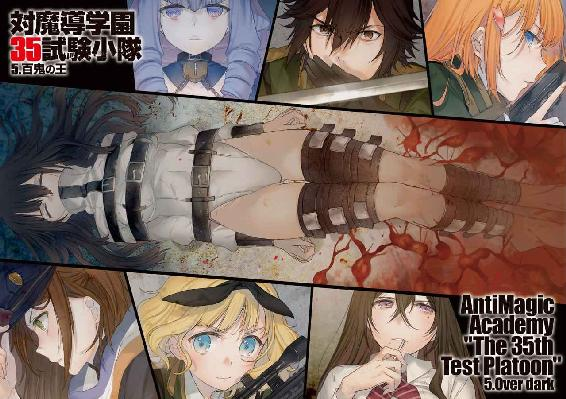

| 対魔導学園35試験小隊 5.百鬼の王<対魔導学園35試験小隊> (富士見ファンタジア文庫) | |
| 柳実 冬貴 | |
| (2013) | |

対魔導学園35試験小隊
５．百鬼の王
柳実冬貴

富士見ファンタジア文庫
本作品の全部または一部を無断で複製、転載、配信、送信したり、ホームページ上に転載することを禁止します。また、本作品の内容を無断で改変、改ざん等を行うことも禁止します。
本作品購入時にご承諾いただいた規約により、有償・無償にかかわらず本作品を第三者に譲渡することはできません。
本作品を示すサムネイルなどのイメージ画像は、再ダウンロード時に予告なく変更される場合があります。
本作品は縦書きでレイアウトされています。
また、ご覧になるリーディングシステムにより、表示の差が認められることがあります。
口絵・本文イラスト 切符
プロローグ
この場所に来る時、タケルはいつも憂鬱だった。
来たくないわけではない。会うための代償が否というわけでもない。
ただ、この場所に来ると、否が応にも思い出してしまうのだ。
自分の無力さを。
「草薙タケルさんですね。お待ちしていました。面会承認証をお持ちですか？」
受付の女性に尋ねられて、タケルは胸ポケットからカードを取り出す。
女性はカードを受け取るとリーダーに通して、二、三度キーボードを打ち込んだ。
「確認いたしました。では次に、こちらの記入事項を──」
用紙を渡されて、タケルは慣れた手つきでペンを走らせる。
もう何度も繰り返してきた手続きだった。
この後待っているのは、徹底した持ち物検査。身体の洗浄。検査衣に着替え、三度に亘る肉体のスキャン。再び洗浄。最後に、二〇回に及ぶアナリシスフィルターを身体に通し、ようやく、タケルは自分の妹に会える。
「............」
エスカレーターに乗って、下へ下へと下りていく。五〇層に及ぶ隔壁を一枚一枚くぐり抜けていく。開いてはくぐり、背後の隔壁が閉じ、また次の隔壁が開き、背後が閉じる。
いつものことだが、ベルトコンベアで運ばれる食材か何かのような気分になってくる。作業的であり、無機的であり、それでいて厳重すぎるほどの一連の過程。
こうまでしなければ、タケルは妹に会えないのだ。
最後のいかつい隔壁が開く。
隔壁の先には、ドラグーンが五機と、魔女狩りの一人がタケルを待っていた。
「時間通りですね。では、最後の身体検査を行います」
タケルは両手を上げて、最終的なボディチェックを受ける。
周りのドラグーンはタケルに銃口をしっかりと向けていた。
ボディチェックが済むと、魔女狩りは一礼した。
「くれぐれも、受刑者に学園内の構造、審問会の警備に関する事柄を伝えないように願います。万が一禁則事項に触れた場合、音声はこちらで編集させていただきますが、今後の面会にペナルティが科せられますので、あらかじめご了承ください」
「はい」
「身振り手振りもお控えください。ジェスチャーに暗号の兆しが見え次第、あなたは捕縛、または射殺されます。よろしいですか？」
「はい」
「面会可能時間は、入室直後から一五分間となります。五分ごとにブザーが鳴り、三〇秒前にはカウントが始まりますので、ゼロカウントまでには必ず退出してください」
ずっと簡潔な受け答えをしていたタケルだったが、魔女狩りの言葉に一つだけ引っかかることがあったのか、首を傾げた。
「あの、今回は一〇分のはずじゃ......」
「会長から、五分間延長しても構わないと仰せつかっております」
「......え」
「『最近はこちらの都合で会いに行けていないだろうから、これは私から贖罪の意味を込めたプレゼントだと思ってくれたまえ』とのことです」
タケルは、淡々と理事長からのメッセージを伝え終えた魔女狩りに、無表情を返す。
「............せっかくですけど、一〇分でお願いします」
「よろしいのですか？」
「はい」
タケルはきっぱりと言い退けて、面会室のドアをくぐる。
多重ロックのかけられた、酷く厳重な扉だった。
消毒用のフィルターを数枚越えて、目の前に開かれたような空間が現れる。
電球が一つだけぶら下がった、壁一面が漆黒の箱部屋だった。
部屋の中間には透明なガラス窓。
その向こう側には──頭のヘアバンドのような装置を指でいじりながら、パイプ椅子に座る少女の姿があった。
少女はタケルを見るなり安らぎに顔を綻ばせて、口をぱくぱくと動かした。
「......久しぶり、お兄ちゃん」
部屋の天井につけられたスピーカーから少女の音声が流れてくる。
タケルも、懐かしくも優しい声を聞いて、薄く微笑んだ。
「ああ、また遅くなっちまってごめんな......キセキ」
少女の名を呼ぶ。
草薙キセキ。草薙タケルの妹。
たった一人の、血の繫がった家族。歳はタケルと同い年。双子ということになる。
二卵性双生児故、二人はそれほど似ているわけではない。
少し癖のある黒髪と、黒い瞳。小さな体軀に、細い腕と足。
屈強なタケルと違い、キセキの印象は儚げだった。
触れれば折れてしまいそうな印象を、他者に与える。
「ううん、気にしないでよ。キセキにとって、時間はあんまり関係ないから」
「そっか。じゃあ正直になろう。兄ちゃん、キセキに会いにこれなくて寂しかったんだ」
タケルが軽口のようなことを言うと、キセキは少し赤くなって、口元に手を当てながら笑った。タケルは対面のパイプ椅子に腰を下ろして、キセキと向かい合う。
「......少し、背が伸びたか？」
タケルが言うと、キセキは上目遣いになりながら、自分の頭の上に手をかざした。
「そかな？ 自分ではよくわからないけど......寝る子は育つっていうもんね。伸びたかも。お兄ちゃんも、背、高くなったよね」
タケルも、キセキと同じような仕草をする。
「小さい頃に鍛えると伸びなくなるって言われてるわりには、伸びたかもな」
「......か、かっこよくなったよ、へへへ」
照れくさそうに頰をぽりぽりしながら、下を向いてキセキが言った。
この頰を搔く仕草など、自分によく似ているなと、タケルは思う。
「学校はどう？ また、何か面白いことあったかな？」
「そうそう、実はな、友達が一人増えたんだ。これがまたいろいろ問題児でさ、小隊メンバーに負けず劣らず──」
小隊と口にした瞬間、キセキが「あ」と声を漏らす。
タケルも、一瞬しまったと思った。試験小隊という言葉は、禁則事項の一つなのだろう。学園内部の情報と見なされて、音声を消されたに違いない。この二人を隔てているガラス窓もフィルターの一つだ。ガラスに見えるが、実際は高度な電子映像を映し出しているだけにすぎず、キセキはさらに下の階層にいる。目の前の映像にも、禁則事項を口にした場合、口の動きを見せないためにモザイクが入ることもある。
面会というのは名ばかりで、こんなものはただの通信映像で会話しているだけに過ぎない。
それでも、タケルとキセキにとっては貴重な時間だった。
二人は別々の箱の中で、他愛もない時間を過ごす。
間近で声を聞くこともできず、言葉は規制され、触れ合うこともできず。
二人は、一時の家族の団欒を、嚙み締めた。
「そっか......綺麗な髪の人も、マフラーの人も、お兄ちゃんとちゃんと友達になれたんだね」
「ああ、そう思う。二人とも仲が悪いように見えて、実は認め合ってるような奴らだからな。いつもいがみ合ってるけど、俺はそんな二人を見るのが楽しくて仕方がないんだ」
「......ところでさ、お兄ちゃん。綺麗な髪の人って、女の人だよね？」
女と言われて、タケルはきょとんとした。
「あ、ああ。そうだけど」
「やっぱり、そなんだ。そだよね、女の人だから、綺麗な髪なんだよね」
「......な、なんだよ。友情に男も女も関係ねぇだろ？」
タケルが取り繕うように言うと、キセキはクスクスと笑った。
「お兄ちゃんは噓が下手だなぁ」
「う、噓じゃねぇし」
「だってお兄ちゃん、その人のことを話す時、いつも生き生きしてるもの」
「......そんなことない、だろ」
「そっかぁ。お兄ちゃんも好きな人ができたんだね」
キセキは嬉しいよ、と目を細めて呟く。
「お兄ちゃん、ずっとキセキに構ってばかりだったから......ずっと心配だったんだ」
「............」
「でも、本当によかった」
キセキの表情には、寂しさがあった。
「ごめんね、お兄ちゃん。二年前に、あんなこと言って......お兄ちゃんの気持ちは、本物だと思う。お兄ちゃんは最初から、人の心がわかる人だったのにね」
「......キセキ」
タケルは、まるで母のように和やかに見つめてくるキセキに、辛そうな笑みを浮かべた。
「違うんだ。俺のあいつに対する感情は、恋とか、愛とか、そういうもんじゃない。あいつは俺にとって............俺にとって、恩人だから」
「......恩人？」
「ああ。だから、憧れに近いのかもしれない。よくわかんねぇけど、あいつが凜々しく立って歩いてる姿が......俺には眩しく見えるんだ」
タケルは遠い目で、綺麗な髪の少女......桜花について話した。
本心からの言葉だった。タケルにとって、桜花は恩人だ。
恐らく桜花本人は気づいていないだろうし、結果的にそうなったというだけで、タケルも恩人だと感じ始めたのは、今の性格に落ち着いてからだった。
いつかこの想いを桜花に伝えたいと思っているのだが、なかなかに気恥ずかしくて、今までずっと黙っていた。
「......そっか。でも、お兄ちゃんがその人にどんな感情を向けていたとしても、キセキは嬉しいよ。とっても、素敵なことだと思うから」
「............」
「どんどん素敵になっていくお兄ちゃんを見ているのは、キセキも幸せだから」
どこまでも優しい声は、タケルの胸を締めつけるばかりだった。
お兄ちゃんが幸せそうで、キセキはとっても幸せだよ。
そう言われる度に、タケルは苦しくてたまらない。
「......幸せなわけ......あるかよ......」
たまらず、タケルは掠れた声で呟いた。
同時に、スピーカーがブザーを鳴らし、三〇秒前のカウントを始める。
「......こんな場所に閉じ込められて......ずっと、眠らされていて......」
「？ お兄ちゃん、聞こえなくなっちゃったよ。なんて言ってるの？ どうしたの？ お兄ちゃん」
「幸せそうな俺の話を聞いて......それでお前が幸せなんてこと、あるかよ......」
キセキに、この言葉は届かないのだろう。
管制室の人間が、言葉を消しているのだろう。
構わず、タケルは続ける。
「顔も見えなくなっちゃったよ。何を、話しているの？ もしかして、泣いてるの？ ねえ、声を聞かせて？ 怖いよ......お兄ちゃん」
不安げなキセキの声に押し潰される。
「俺を救ってくれたのは、鳳だけじゃない......お前もなんだよ、キセキ。お前があの時、俺の事を見抜いてくれたから......お前があの時、俺に手を伸ばしてくれたから......だから、俺はこういう人間になれたんだ！」
タケルは椅子から立ち上がり、ガラス窓のようなディスプレイに手を当てる。
するとキセキも、戸惑いながらもタケルの手の平に自分の手の平を重ねた。
「無理だってわかってるけど......そんなこと、許されることじゃないってわかってるけど......！」
「............」
「こんな世界なんか変えられないってわかってるけど！」
「............」
「それでも俺は、お前に......普通の生活を......！」
タケルの身体が頽れて、膝をつく。
キセキは、不思議そうにタケルを見下ろしている。
「あんまりじゃねぇかっ......こんなことすら、伝えることが許されねぇのかよぉ......っ」
崩れ落ちて、タケルは一人涙する。
キセキは、膝を曲げて再び手を重ねた。
「キセキはね、お兄ちゃんがたまに会いにきてくれるだけで......いいんだよ？」
「............」
「それだけが、キセキの望みなんだよ。だから、泣かないで、お兄ちゃん」
宥めるように、慰めるように、キセキはタケルに囁いた。
タケルが何を言っていたのかも、どういう表情をしていたのかもわからないのに......それでもキセキは、タケルの心を包み込む。
故にタケルは、苦しんだ。
どうしようもない現状に、苦しんで苦しんで、苦しんだ末に、
扉が開かれた。
「──時間です。退出してください」
無情にも魔女狩りが、開いた扉の前に立っている。
タケルはうな垂れながら立ち上がり、愛しい妹へと背を向けた。
大きく、息を吸う。
それを合図に、仮面を被る。
「......また来るからな。キセキ」
一度だけ振り向いて、自分を押し殺して、キセキに微笑んだ。
キセキも、ようやく兄の顔が見えたのか、安心したように笑顔を作る。
「うん。ずっと待ってる。また、会いに来てね、お兄ちゃん」
それが、いつもの別れのやりとりだった。
あまりにも悲しく、あまりにも無慈悲な、兄妹の別れだった。
草薙キセキは、表向きはＳＳ級危険指定として、禁忌区域最奥監獄、彼女専用の隔離施設に幽閉されている。
五年前、とある寒村にて起こった悲劇。
村人三〇〇名あまりが一夜にして虐殺された事件の首謀者が、草薙キセキなのである。
この事件は公にされておらず、公的には川の決壊で発生した大洪水による災害として処理された。
草薙キセキは極めて特異であり、極めて異端であるとして、存在を知る者は数少ない。
彼女の人生は、巨大な鉄の処女の中で眠ることが大半を占めることになる。タケルが会いに来た時の数分と、定期的に行われるとある処置の時以外、起きていることを許されないのだ。
これだけ監視が厳重な理由は、彼女が魔女だからではない。
草薙キセキという存在は、厳密には魔女とは異なる異端なのだ。
「............お兄......ちゃん」
兄が去った後、キセキは明かりの落ちた暗い部屋で、苦しげに声を吐く。
「ごめんね......噓、ついちゃった」
服の裾を強く握り、自嘲的な笑みを浮かべる。
同時に、頭のヘアバンドのような装置が、何かをチャージする音が響いた。
「助けて......もう......こんなの嫌......痛くて......苦しくて......耐えられないよ」
微かな頭痛が走り、キセキは額を手で押さえる。
涙が、瞼から一筋零れた。
「お兄ちゃんに会いたいよ......お兄ちゃんに触れたいよ」
涙は止め処なく溢れ始め、頰を濡らしていく。
「お兄ちゃん......」
視界が霞み、キセキは椅子から倒れた。
「どうしてキセキを......殺してくれなかったの......？」
苦痛と吐き気に、キセキは喘ぐ。
キセキは胸中で悲鳴を上げながら、重くなっていく瞼を静かに閉じた。
《面会終了。処置開始......さて、今日は耐性を調べるために毒でいくぞ。心肺停止までの時間をきっちりと計るように》
沈む意識の中で、スピーカーから恐怖を煽る言葉が聞こえてくる。
けれど悲鳴も上げられなければ、助けを求めることもできない。
彼女にできることは、死の痛みから逃れるために、兄の笑顔を夢想することだけだった。
そして──草薙キセキの、地獄は続く。
第一章 崩壊の序曲
魔女狩り祭は無事終わりを迎えて、季節は冬。
通常の学校で言えば、二学期も終盤に差し掛かる頃合いだ。
学園の生徒達も制服だけでは肌寒いのか、防寒具に身を包んでいる者も増えてきた。園内の樹木の葉も色付いて地面を覆い、清掃業者の頭を悩ませている。
生徒達の動きも、季節が変わっていくにつれて、多種多様な反応を見せ始めていた。
優秀な小隊に属している生徒は、すでにノルマを達成している者が多いので、学生生活を送る表情にも余裕が見て取れる。
反して、あまり成績のよろしくない生徒達の表情からは余裕が消えていた。
期限は残すところ三か月。休みを含めても四か月も無い。
対魔導学園の冬期というのは、生徒達にとって節目なのだ。
そんな冬の日。夕食時の住宅街。
まだまだ帰宅途中のサラリーマンや学生がいる時間。
人通りもそこそこな道路を、ライフルを持った少女がもの凄い勢いで走っていた。
「にぃぃぃがぁぁぁすぅぅぅかぁぁぁぁぁぁぁ‼」
少女、西園寺うさぎは、髪でも逆立てそうなほどに怒り狂いながら、車道を疾走する。
彼女が走るその先では、数人のチーマー風の男が、セダンの改造車へと乗り込む姿が窺えた。セダンはすでにエンジンが温まっていたのか急発進した。
「──ポイントゲットですわ！」
うさぎは片膝をつき、セミオートスナイパーライフルで車のタイヤへ射撃する。
後輪を一発も外すことなくパンクさせると、セダンは大きく車体を揺らしながら、ゆるゆるとガードレールにぶつかった。
中から男達が出てくるとマイクロマシンガンをうさぎに放ってきた。
周辺にいた一般人が悲鳴を上げて逃げ出す。
うさぎは、撃たれているにもかかわらず、冷静にマシンガンを連射する男三人を、これまた一発も外さずに沈めた。
残りの二人は近くに停まっていたバイクを奪い、すぐさま発進。十字路を左に曲がってしまった。
それを見て、「ぬなっ」とうさぎが声を上げる。
「お、鳳～～～～！」
《わかっている！》
取り逃がしたと言う前に、インカムに桜花からの声が届く。
直後、十字路の右路地から、ブォンという野太いエンジン音を響かせて、新たなバイクが急発進した。運転手は鳳桜花。審問会専用の、俗に青バイと呼ばれるバイクを駆り、桜花は逃げた二名を追った。
路地を曲がった二名は後ろを見て、短い悲鳴を上げる。
背後から迫る、夕焼け色の髪の女が、もの凄い勢いで自分達を追跡してきたのだ。
激しいサイレンを響かせながら、桜花がさらに迫る。
《そこのバイク、止まれ。お前達には四つの容疑がかけられている。一つ、Ｄランク魔導遺産違法取引。二つ、異端審問官への公務執行妨害。三つ、違法銃器所持、市街での銃使用。四つ、ノーヘルでの二輪車の運転だ》
バイクに備えつけられた拡声器で、淡々と二名の罪状を告げる。
「ノーヘルはてめぇもだろーがっ！」
後部に乗っていた男が、振り向き様に中指を立てながら叫んだ。
ハッとして、桜花は頭部を片手で触った。
《......緊急事態だから仕方ない》
「都合のいいこと言ってんじゃねぇぞゴラァ！」
《反省している。罰金は払おう。点数も減らしてくれて構わない》
「許してほしかったら追ってくるんじゃねぇ！」
《それとこれとは話は別だ》
桜花のバイクが速度を上げる。
肩越しに後ろを見た運転手は、腰のソケットから魔法陣の刻まれた紙切れを取り出した。
「......しょうがない。呪符を使うぞ」
「そりゃ売りもんだろうが......！ 枚数だってそんなにあるわけじゃねぇ！」
「捕まったら元も子もないだろ。これで振り切れる」
運転手はそう言うと、呪符をパシンと車体に貼りつけた。
呪符から魔力が溢れ、バイクを侵食し始める。
明らかに異常なエンジン音が轟き、前輪を大きく浮かせながら、二人の乗るバイクが急加速した。
「ニトロと違ってエンジンに負担がかからない上に加速は五分間続く優れもんだ！」
「あーあ......もったいねぇ......レースのスポンサーに高く売れるのに......」
「あばよ試験小隊！ 詰めが甘かったなぁ！」
ケタケタと笑いながら、バイクの加速が増す。
《疾走》の呪符は、本来馬などに使用される魔法だが、現代の魔女達の改良が加えられて、機械にも応用できるようになっていた。この魔法は車両への負担が一切無く、加速分の燃料も呪符内の魔力で補うため、非常に使い勝手がいい。おまけに小回りも通常の三倍近く利くようになり、運転手の反射神経さえよければカーブで失速することなく、ほぼ直角に曲がることができたりする。
これでは普通のバイクでは追いつけるはずもなかった。
加速が功を奏したのか、桜花との距離はぐんぐん離れ──ていない。
「な、なに⁉」
疾走の呪符を使用したはずなのに、桜花のバイクはスピードについてきていた。
《詰めが甘いのはどっちだ》
ため息と共に言った直後、桜花が前輪を浮かせながら爆発的な加速をした。
一瞬で、犯人二名の乗るバイクの横に並んだ。
「この青バイは、うちのマッドサイエンティストに魔改造されている。中身は既存のものとは別物だ」
桜花が淡々と、二人に真相を告げる。耳元で「お色直しって言ってちょーだい」という斑鳩の通信が聞こえたが、桜花は無視した。
「ざけんなよ......こちとら呪符使ってんだぞ⁉」
「基本スペックが違うのだ。そのバイクが呪符を使ったところで、せいぜいがモーターレースに匹敵する程度だろう」
「じゃあそのバイクは何なんだっつーの！」
「知らん......私に聞くな」
本当に知らんのだ、と目を逸らす桜花。
しかし目を逸らしつつも、片手で銃口を運転手へ向けた。
「ところで、この状況でお前達を撃てば、確実に死ぬぞ。もちろん弾は麻酔弾だが、転倒は避けられまい」
「っ！」
「投降するか、ここで撃たれて転倒し、ガードレールにぶつかって肉塊となるか。選ぶ時間を五秒やろう」
持ち前の冷酷な視線を向けて、桜花は二人に猶予を与える。
後部座席の男が、不安そうに運転手の肩を摑む。
「......ど、どうすんだよ」
「ハッ、脅しのセンスがねぇな。撃てば俺らは死ぬ。責任を負わせられるお前にメリットねぇだろ！ だったらこのまま逃げ切るだけだぜ！」
言いながら、運転手はソケットから新たな呪符を取り出した。
「こっちにはまだ二〇枚近く呪符がある！ ブーストは燃料を魔力で補ってる！ だがてめぇのバイクはいくら高性能でもガソリンだ！ その馬力と出力で、どれだけ燃料がもつか見物だなァ！」
「............」
「撃ちたきゃ撃てよ！ 俺達はてめぇらと違って生まれた時から後がねぇんだ！ いつだって死ぬ覚悟くらいできてる！」
粋がった態度の運転手を、桜花は冷ややかに見つめた。
前の桜花だったなら、望み通りにこの場で撃っていたことだろう。
しかし、今の桜花は違う。
小さくため息を吐いて、あろうことかバイクの速度を落とした。
チャンスとばかりに二人のバイクが逃げていく。
桜花は、涼しい顔でインカムに声をかけた。
「予定通りに進路を誘導した。プランＢに変更だ......草薙、頼むぞ」
《......マジか。成功するかは保証できないぞ？》
「私が撃てば、あの速度では殺してしまう。それが望みならそうするが」
《りょ、了解了解！ ちゃんとやるって！》
タケルの声を聞いて、桜花はそれなりの速度で逃げた二人のバイクを追った。
「へへっ、諦めたみたいだぞ」
「根性無しめ。あんな連中が未来の審問官だっていうなら、将来的には俺らの天下が待ってるぜ」
疾走の呪符をもう一枚使用し、加速を維持する。
曲がり角もアメンボが水面を瞬時に移動するかのように、鋭角に曲がっていく。
誰にも追いつけない。このまま高速道路へ出てしまえば、確実に逃げ切れる。
二人はそう確信していた。
「おいっ！ 前！」
後部座席の男が叫ぶ。
遥か前方、高速道路入口の前に、少年が一人立っていた。
「......正気か？」
「試験小隊の仲間か。いいぜ、人対バイクでチキンレースだってんなら上等だ」
「避けないのかよ？」
「どうせ向こうが折れるに決まってらぁ！」
バイクが加速。幸い道は直線。チキンレースにはもってこいだ。
速度を上げるにつれて少年、タケルの姿がはっきりと目視できるようになる。
タケルは、両足を踏ん張り、両手を左後方へ向けて伸ばしていた。
妙な構えのタケルを前にしても、警戒することなくバイクは突っ込んでいく。
タケルがいつまで経っても逃げないことを不気味に思いながらも、構うものかとアクセルを踏む。
まさにあと数瞬で激突すると思われた、その時。
タケルは、バイクの突進に合わせて掃魔刀を発動。
捻った上半身を解放させて、腰の回転に合わせて腕を振り、バイクに跨がる二名の襟首を摑んだ。
無論、バイクはタケルに摑まれた二人を置き去りにしてすっ飛んでいく。
「──よっ！」
タケルは二人の襟首を摑んだ勢いを一切殺さず、そのままぐるりと身体を回転。
当然のことながら、タケルの身体はかなりのスピードで走っていたバイク同乗者の勢いに振り回され、ぐるぐると回った。
まるで回転するコマのように、ぐるぐると回る。
次第に回転速度は緩んでいった。
「っとっと......とっ」
タケルは少しだけよろめいたものの、なんとか回転を止めて、摑んでいた二名を地面に下ろした。捕まえられた二名は、青白い顔でガクガクと震えながら、声も出せずに地面に膝をついた。
タケルはふぅと息を吐き、インカムに話しかける。
「確保完了だ。なんとかなったぞ」
《......こっちからも見えていた。な、なんだ、今のは》
「ああ、摑むだけじゃ反動で首の骨とか折りかねないだろ？ だからスピードをゆっくり殺すためにぐるぐる回ってたんだよ」
《相変わらず、想定外かつ無茶な発想をする男だ......》
「通気口から降ってきたり、拳銃でドラグーン止めたりするお前に言われたくねぇ」
苦言を呈すると、道の先からゆるゆるとバイクに乗った桜花がやってくる。
タケルの前で停止した桜花はバイクから降りると、男二人に手錠をかけ、ソケットの呪符を確認した。
「ふむ......魔導遺産の種類が重複しているためポイントは減少するが、その分数が多い。ランクは高くないが、だいたい五〇は入るだろう。今回は大手柄だな」
「生徒会長の情報提供のおかげだ。魔導遺産のランクにしては敵の組織が小さかったし、呪符の種類も取りかかる前からわかってたからな」
「下準備ができていたことが大きい。普段の私達だったら、制圧に力を入れるだけで、逃げた時のことは考えていなかっただろう。確かに情報が無ければここまでスムーズには事を運べない」
生徒会長に感謝しなければな、と、桜花。
タケルは、もう一度インカムに触れて、今度はうさぎと斑鳩に通信を送る。
「成功だ。二人ともおつかれ」
《ふっふーん♪ 今回はわたくしの大活躍のおかげですわね～》
《しっかり取り逃がしといて何言ってるのかしら》
《ぬなっ！》
斑鳩の一言に、うさぎが声を上げる。
《うさぎが狙撃で七人いっぺんに仕留められるとか自信満々に言ってたくせに、五人も取り逃がしておっかけるはめになってるじゃない？》
《そ、想定の範囲内ですわ！ それに、ちゃ、ちゃんと車は止めましてよ⁉ 最終的に逃がしたのは二人だけですわ！》
《だから、逃がしてるじゃない？》
《むきー！》
タケルは、二人のじゃれつきに苦笑する。
「本当によくやったな、うさぎ。杉波も、即席にしちゃ出来すぎだ」
《バイクいじりはもう趣味だしねぇ》
《......銃器いじりが趣味でないとでも？》
《馬鹿言わないで。銃は私の生き甲斐、趣味ではないわ》
《っ、なんだかあなただけ何も変わっていませんわねぇ！》
《いつだって私は私よ。それに比べて、うさぎは変わったわよね》
《ぁぅ？ そ、そう、でしょうか？ ま、まあわたくしも、昔に比べればそりゃぁ......》
《また乳がでかくなったわ》
《嬉しくないですわーっ！》
相も変わらずギャーギャーギャーギャー。
この騒がしいところは何も変わっていないが、タケルは皆の成長を感じていた。うさぎは魔女狩り祭の事件以降、前ほど戦闘に緊張感を抱かなくなった。天明路礼真や西園寺家の問題が、ある程度決着がついたということもあるが、ようやく、いろいろなことに気づくことができたからだろう。内心どこかで自分は必要のない人間だと感じていた彼女にとっては、他人にとってどうこうよりも、自分は誰かにとって必要な人間であるということを自覚することが一番大切だったのだ。
斑鳩も、武器の改造や開発に関してピーキーなのはそのままだが、目的に沿ったものになった。彼女は、少しだけ小隊メンバーのことを頼るようになっていた。自分一人では解決できないこともあることに、斑鳩は気づいたのだ。
一番めざましい変化があったのは桜花だった。
最初はあれほど反発し合い、誰にも頼らないことを信条にして生きてきた彼女が、今はこうして仲間として動いてくれている。
かつて、逮捕すべき凶悪犯罪者を問答無用で射殺してきたことで、《紅蓮姫》と蔑まれていたあの頃の面影は、だいぶ薄くなっている。
丸くなったと言うべきか、彼女にも少しだけ心の余裕が出来たのだろう。
タケルは......自分はどうだろう、と考える。
強くなっただろうか？ 成長しただろうか？
（..................どうだろうな）
手の平を見つめても、実感など湧かなかった。
強くなったと言っても、あれはラピスあっての強さなのだ。自分自身の性能が向上したわけではない。状況判断能力と自制心は向上したと言えるかもしれないが、スキルはどうしようもない。そもそも、タケルの剣術スキルは、一人で成長するにはすでに上限に達している。自分より格上の腕を持つ剣豪などいないのだから、成長するのは難しい。
では、精神面はどうか？ 自分の心は、強くなっただろうか？
人として、成長しただろうか？
不意に、自分の手の平がぼやけたように感じた。
「......草薙......？」
「............」
「......おい、草薙！」
「⁉ ごめん、なんか用か？」
あからさまに聞いていなかったという反応に、桜花はむすっとした顔をした。
「わ、悪かったって。そんな、怒らなくてもいいじゃねぇか......」
愛想笑いを浮かべてそう言ったものの、桜花は別に怒っていたわけではなかったらしい。
桜花は、むすっとした顔のまま、タケルの顔を覗き込んだ。
「......草薙、疲れているだろう？」
「へ？」
「隈が出来ている。睡眠不足は目に見えて明らかだ」
きょとんとしてしまう。
桜花の言う通り、タケルは寝不足だ。しかし、あからさまに疲れている雰囲気を出していたわけではない。むしろこのくらいの寝不足はバイトのせいで日常茶飯事だし、慣れっこなのだ。
そう説明しようと思ったのだが......する前に、桜花がタケルの額に手を当てた。
「熱は無いな。しかし無理はするな。ただでさえ最近いろいろあったのだから、少しは時間を休息に割かなくてはダメだぞ」
タケルの口元に指を当てて、桜花がささやかな説教をしてくる。
なんだか、その仕草も相まって、年上のお姉さんに叱られている気分になってくる。
タケルは、悪くない、とか思ってしまい、ほんのり頰を染める。
わりと、年上に弱いのだ。
年上じゃないけど。
「無理なんかしてねーよ。心配すんな」
「しかしな......お前はいつも朝方までバイトをしているのだろう？ 昼間は勉強、夕方は小隊活動、夜にバイト......そんな生活、いつか身体を壊すに決まっている」
「そこらへんは気をつけてるから平気だけど......まあなんだ、一度休んじまうと、生活サイクルを立て直すのに苦労するんだぜ？ 逆に疲れちまったりするしな」
桜花は、むぅ、と唸った。
頰でも膨らましそうな感じだった。
かわいい、とか思ってしまう。
じと目の上目遣いで、桜花はタケルを心配そうに見やる。
「......あまりプライベートに干渉するつもりは無いのだが......その......お前の家には、借金があると聞いた。ご両親も......すでにいないのだろう？」
桜花の問いに、タケルは頰を搔く。
「まあ、な。でもそんなの、たいしたことじゃないだろ」
「な、なに⁉ たいしたことだ！ 借金抱えて両親がいないのがたいしたことではないというのか⁉」
「わりと多いと思うんだけどな......なんだかんだ物騒な世の中だし」
「......まさかとは思うが、自分の生い立ちが結構悲惨なことにまだ気づいていないのか？ 私ですら、自分を不幸だと思ったことは、少しぐらいあるのだぞ？」
「不幸か......不幸ってのは思ったことないなぁ。恵まれちゃいないが、わりと充実してると思うんだ。ほら......へへ、俺も男だから、こんだけ女子の多い小隊にいられるのって、なんだかんだで嬉し──」
「私は真面目な話をしているのだぞ！」
また怒られてしまった。
タケルは、いつもと違う桜花の態度に、少し困惑する。
桜花も声を上げてからすぐに自分の矛盾に気づき、視線を逸らす。
「いや......別に怒っているわけではないのだ。ただ、私は......」
桜花は、胸の前で両手の指を、絡めたり解いたりした。
「いろいろと、大変なのだから......少しは、頼ってもいいのだぞ......と言いたかった」
「？ 頼るって、何をだ？」
「だからその、借金があるのなら、返済のために私もバイトを......」
桜花が言いたいことは、つまり、カンパしてやるということだろう。
タケルは申し出をありがたく思いつつも、首を横に振った。
「気持ちは嬉しいんだけど、それはやめといてくんねーか？」
「な、何故だ？」
「んー、金銭的なことを仲間に頼むのは、なんか違うだろ。それに、これは俺がなんとかしなきゃいけない問題なんだ」
「......それは」
「悪いな。でも、ありがとよ」
笑って、タケルは伸びをしながら歩きだした。遠くからサイレンの音が聞こえる。報告を聞いて異端審問官が犯人の回収に来たのだろう。
桜花の方へ振り返ると、彼女はやはり心配そうにしていた。
ここは安心させてやるべきだろうと、タケルは思った。
「まーでも、お前の言う通り、確かに少しは休息とらねぇとな。明日は小隊活動を休ませてもらうよ。バイトも休むことにする」
「本当か？」
「ああ、これ以上お前に心配させるのも悪いしな。嬉しいけどよ」
タケルは桜花に向けて微笑みを浮かべながら言った。
桜花も安心したのか、肩から力を抜いて息を吐いた。
「そうか......一日と言わず、二日三日休むといい。そうだ、妹の様子でも見に行ってあげたらどうだ？」
「............うん、それもいいかもな」
「離れて暮らしているんだったな？」
「ああ、一般校に行ってる。東北で、奨学金もらいながら学校に通ってるんだ」
「そうか。私にもかつては妹がいた。家族とはいいものだ、大切にするといい。そうだ、写真とか、持っていないのか？ 嫌でなければだが、今度是非見せてほしい」
「おう、機会があればな。こんなこと言うからシスコンだって言われるんだろうけど、兄から見てもかわいい奴だぜ。ちょっとドジだけどな」
「ふむ。草薙とはよく似ているのか？」
「あんまり似てねぇ、かなぁ？ 俺は親父に似て、あいつはお袋に似たはずだから」
「そうなのか......いつか、会ってみたいものだ」
桜花が珍しく、屈託の無い笑みを浮かべる。
タケルは微かに、罪悪感を覚えた。
翌日。
小隊活動を休んだタケルは、こたつに入って星白流生徒会長とかりんとうを齧っていた。
「これねー、最近下町のお店で見つけたんだ～。なんかねー、和菓子復刻を謳ってるお店でねー、旧日本の古い資料から製法を見つけ出して再現してるんだって～。異端審問会も協力してるらしいよ。文化保全も最近は審問会の仕事なんだってさ～」
「......はあ、そうなんですか」
ポリポリポリポリ......。
「文化って不思議だよねぇ。かつて中国とかアメリカって呼ばれていた国も、今はもう聖域だらけで人が住めなくなっちゃったけど、生き残った人々がその土地の文化を絶えさせないために語り継いで、今のうちらの生活にこうして馴染んでる。ラーメンとか、ハンバーガーとかさ？ 面白いよね」
「......そっすね」
ポリポリポリポリ......。
「おいし？」
「......まあ、はい、お茶が進む感じで......」
「わーよかったよ～。草薙君アンパン好きだっていうから、こういうのも絶対好きだと思ったんだよねー。桜花ちゃんも好きだったよね？ ほら～これ、お土産にどーぞ～」
言って、ニコニコしながら紙袋に入ったかりんとうを手渡してくる。
タケルは無言で受け取って、胸の前に持ってきた。
「は～おいしかった。また一緒にかりんと食べようね～」
「............」
「じゃ、そゆことで～」
流はビシッと片手を上げて、タケルに笑顔で別れを告げる。
「──おいこらチビすけ」
タケルは、こたつに入ったままこめかみに血管を浮かべつつ、流の頭を片手でがしりと鷲摑んだ。
「ほえー？」
「俺はここにあんたとお茶しに来たわけじゃねーぞ......！」
じと目で流を睨むタケル。
「冗談冗談～。ちょっとしらばっくれただけだよ～」
「今完全に退出する姿勢だっただろうが......！ 魔女狩り祭の後始末を散々手伝わされたんだ......逃げられると思うなよ......！」
「せ、先輩にそういう口調はいけないぞ☆」
「可愛く言っても逃げられると思わないでくださいよ......⁉」
ぐりぐりと摑んだ頭を回転させると、「あ～」と流が気が抜けるような悲鳴を上げる。
さんざんぐりぐりとしてから、気を取り直して本題に入った。
メフィストフェレスの問題を解決させた三五試験小隊は、生徒会役員代理として魔女狩り祭の後処理を任され、小隊活動もできずに一週間近く拘束された。
だが見返りとして、様々な情報を流から提供してもらう約束をしたのだった。
流はタケルの対面で、お茶を一口飲んだ。
「レリックイーターが魔導遺産だってことは、草薙君も知ってるよね？」
「ええ。どういう経緯で作られたかは極秘って話ですけど......」
タケルの言葉に、流は目を細めた。
「じゃあ、ミスティルテインが黄昏仕様と呼ばれている理由は知ってる？」
「あいつ......ラピスの魔力属性が『黄昏』っていうやつだからじゃないんですか？」
「うちも最初はそう思ったんだけどね。他のレリックイーターが過去の暴君や犯罪者の名前がつけられているのに、あれだけ違うのは妙だと思って。君は、ミスティルテインの伝承、聞いたことない？」
「あいつにも、他の魔導遺産みたいに歴史があるんですか？」
「......おとぎ話だけど、一応ね。神話世界のことについては、勉強しただろうから少しは知ってるでしょう？」
神話世界。『神』と呼ばれる魔法生物が存在している、異次元の世界のことだ。
召喚魔法はこういった異次元の世界から、魔力を代償に一時的に魔法生物を呼び出すもので、たとえそれが神レベルでも例外ではない。
ギリシャ神話、インド神話、ケルト神話、日本神話など、現代まで語り継がれてきたおとぎ話の世界は、実在が確認されている。神々を召喚するには圧倒的な魔力が必要となるため現在では不可能に近いが、召喚魔法に精通した魔女達は彼らの存在を感じることができるのだと言う。
各地の太古の魔女達が、魔力を使用することで、この神々の世界と交信することに成功したのが、召喚魔法の原点だと言われている。
神話に地域の名前がつき、地方によって神々の逸話が異なるのは、交信した神話世界そのものが別物だからだ。
太古の魔女達は別世界の神々と会話をすることが可能だったらしい。
おかげで各地に異なる信仰が生まれ、語られるようになったのである。太古の人々は異世界の神々を、自分達の上位存在だと信じていた。
同じ神話世界の逸話に異説が数多く存在するのは、現在は神話世界の神々と会話する手段が失われてしまったため、様々な方向に伝承がねじ曲がってしまったからだ。
信仰の不一致により、各地で戦争が起こったことも少なくはない。もっとも、こうした神話世界への信仰は、現代では異端審問会により禁じられている。
名が残るほどのロストタイプ魔導遺産は、神話世界との関わりを強く持っており、別世界から干渉を試みた神々が作りだしたと伝えられている物も、少なくはない。
「ミスティルテインっていうのは、北欧系のおとぎ話に登場する武器の名前だよ」
「......ちょ、ちょっと待ってください。えっと、つまり、あいつはエクスカリバーとか、ダーインスレイヴとかと同じものってことですか？」
「ううん、違う。アーサー王のエクスカリバー、ホグニのダーインスレイヴ。どちらも、この世界で生まれた魔導遺産だよ」
流の言う意味がうまく理解できず、タケルは首を傾げるしかない。
「うちが言いたいのは、彼女が魔導遺産かどうかってことじゃないの。ミスティルテインという武器は......この世界の代物じゃあない。北欧神話世界に存在しているはずの武器なんだよ」
............。
は？ という顔になるタケル。
「......あ、あり得ない......でしょう？」
「うちもそう思う。もしアレが本当に伝承通りのミスティルテインなら、神々が使う兵器、『神器』ってことになる。そんなもの、人間に扱えるはずないし、そもそも現界するには大量の魔力が必要になる。君の言う通り、あり得ないことだよ」
流は、確証もなにも無い推測を口にする人ではないはずだった。
タケルは、流に疑問符を浮かべる。
「確かにこんなものは、うちの妄想だって切り捨てたいんだけどね。どうにも......そういうわけにはいかなくなった」
いつも眠たそうな流の瞳が、鋭く細められた。
タケルが、ごくりと唾を飲み込む。
「うちは、今世界がどういう状況にあるのか......そして、審問会が人々に何を隠しているのか。それを知っている。君に情報を開示する用意もあるよ。その代わり、一つだけ条件を提示させてもらうけど」
お茶を啜り、流はにこりと笑った。
「......あの、その前に一つ聞いていいですか？ 生徒会長は、三五小隊を勧誘したり、膨大な情報を得て何をしようっていうんですか？」
タケルは、本来最初に聞くべき問いを流に向けた。
流はしばし考えるような仕草をした後、「まあいいか」と述べて、こう言った。
「うちは、いずれ異端審問会を乗っ取ろうと思ってるんだ」
あっけらかんと、流は自分の野心を口にした。
野心家であることはメフィストの一件や、桜花から話を聞いていたのでさして驚きはしなかったが、ここまであけすけに言われると若干戸惑ってしまう。
奇しくも、その野望は以前タケルが志していたものと同じだった。
「審問会の武力面では文句無い。脅威に立ち向かうには、こちらも相手にとって脅威でなければならないからね」
「............」
「でも、今の禁忌区域の現状や、魔女に対する行き過ぎた処置は危惧すべき問題だよ。特に鉄の処女......あれは非人道的を通り過ぎてる」
口元に手を当てて、流は探るようにタケルを見た。
タケルは、無意識に、流から視線を外した。
「君は何故、異端審問会が犯罪者、あるいは制御不能の魔女達を処刑せずに、ああやって夢すら見られない眠りにつかせていると思う？」
タケルは目を伏せた。流は構わず続ける。
「研究対象......人体実験のサンプルにするためだよ。普通に考えればわかるよね。魔女狩り戦争から一五〇年......いったいどれだけの魔女が鉄の処女に入れられたと思う？ 戦争終結後に残存していた魔女や、イレギュラーで生まれてきた魔女達が、どれだけいたか想像つくかい？」
想像はできない。だが、恐らく審問会がさばききれない数なのは予想できた。
異端審問会の施設は各所に点在している。禁忌区域と呼ばれる場所もたくさんある。
しかし、それでもこの一五〇年間、犯罪者達を眠らせ続けられるわけがない。
鉄の処女がコスト削減のための装置だと言っても、一人当たりの生命維持にかかる資金は安くはないのだ。
もっと言えば、禁忌区域で生活している無実の魔女達にも同様のことが言える。
食料、衣類、寝床だけでなく、医薬品なども必要になる。現代で魔女の数が減少したと言っても、年間何千人もの魔女が禁忌区域に送られていくのだ。
普通に考えればパンクするが、現実、そうはなっていない。
つまり実験材料として処理されている魔女が数多くいる可能性が高い。
これらの指摘は、昔から言われ続けてきたことだ。倫理委員会などが発足してからは、長らく糾弾されてきた。審問会は沈黙を貫いてきたが、もはや言い逃れはできないレベルにまで追い込まれている。
タケルも、知らないわけではない。妹が、その立場にあるのだから。
「うちはこの状況を打破しない限り、魔女と人間の共存なんて不可能だって思ってるよ」
流は、タケルに向けて苦笑した。
「実は、姉がね、イレギュラーな魔女だったんだ」
「⁉」
さすがにタケルも驚いた。
「当時、姉はまだ一〇歳だった。体内幻器が突然出現して、魔力が暴走したんだ。決壊症候群って、聞いたことくらいあるよね？」
病名くらいは知っていた。
血筋から生まれる魔女と違い、イレギュラーに発生した魔女は二〇％ほどの確率で障害を持っていることがある。
症状の一つとして、非常に珍しい決壊症候群と呼ばれるものがあった。
体内幻器と呼ばれる器官は、第二の心臓とも呼ばれ、魔女が魔力を生成するのに必要不可欠な器官である。普通ならば血液のように魔力が体内を循環しつつ微量を体外へ放出し続けるため、あふれ出すことはない。
ただし、この幻器に欠陥があった場合、本人の意思とは無関係に体外へ大量の魔力を放出してしまうのである。魔力は魔女にとっては無害なものが多いが、一般人にとっては毒に近い。
「その病気のせいで、姉は魔力災害を引き起こしてね......たくさん人が死んだ。本人は止めようと一生懸命だったけど、幻器が破損していてはどうしようもなかったし、魔女に成り立ての姉に対処なんかできるわけなかった。子供だったしね」
「............」
「体内の魔力が底を尽いて、ようやく災害は収まったけど、異端審問会は姉の存在をＳ級危険指定とみなして、鉄の処女に幽閉したんだ」
「Ｓ級危険指定⁉ 故意に人を殺したわけじゃないのに、ですか......⁉」
タケルは思わず声を上げた。本来、どんなに強力な力を持っていたとしても、悪意のある殺人を行った者以外は、Ａ級危険指定以上になることはないはずなのだ。
何よりも、
「決壊症候群は、現代では対処できる病気なんじゃ？」
「うん。眠らせなくたってどうにでもできる病気だったよ。姉の魔力属性はそこまで危険でもなければ、古代属性でもなかったしね」
でも、と流は続ける。
「対処はできるけど、極めて珍しい症状だった。それだけの理由で、姉は人体実験の材料にされたんだ」
流はお茶を一口飲み込んだ。
「姉が死んだって報告を受けたのは、捕縛されてから一年後だったかな。遺体も灰にされて、海に放流されちゃってたよ。報告では、眠っている間に病気にかかって、発見が遅れたために死亡したってことになってたね。うちは当時七歳だったけど、そんな噓、子供にだって見抜けるよ」
「............」
「故意に人を殺したわけでもなければ、危険性も低かった。それなのに犯罪者の烙印を押された挙句に、モルモットにされて殺されてしまった......うちの姉だけじゃない、他にももっとたくさんの魔女が同じような目に遭ってる」
「生徒会長は、それで異端審問会を変えようと決めたんですか」
「もちろん、それだけが理由じゃないけどね。姉のことは発端に過ぎないし。まあ同情誘って君を勧誘しようって魂胆だと思ってくれて構わないよ～」
のほほんと自分の過去を語る姿を見て、タケルはため息を吐く。
どうしてこの人は、自分の過去をこうも明るく口にすることができてしまうのだろう。
流の過去は、タケルと重なる部分が多かった。志と方向性は違えど、タケルもかつては同じ理由で世界を変えようとしていた。
妹、キセキのために。
「異端審問会の現状は、無闇に敵を刺激している。最近奴らの活動が活発化してきたのも、審問会の非人道的な行いが原因の一つだね。あの白髪おばけ......鳳颯月も無意味にこんな体制を敷いているわけじゃないと思う。挑発的な状況を作り出しているのは、我々は引かないという意思表示なんだと、うちは思うよ」
「......敵、幻想教団のことですか？」
流は黙って、タケルを見た。
「残念だけど、ここからは有料だよ。さっきの話を聞かせたのはうちの覚悟の一つだと思ってほしい。次は君の番」
流はぼんやりとしながらも、視線だけを鋭くしてタケルを睨んだ。
「君にはまだ、うちに話していない秘密があるよね？」
刺すような流の視線に、タケルの息が、一瞬止まった。
「うちにだけじゃない。君は、小隊の仲間にすら話していないことがあるはずだ。杉波ちゃんは違うのかな......よくわからないけど、彼女は知っているように感じるけど」
「............」
「うちは、その隠し事を君の口から聞かないと、君を信用することはできない。こっちには全てを打ち明ける覚悟がある。君には......その覚悟がある？」
「............」
「これは背負う覚悟じゃない。曝け出す覚悟だよ」
タケルは黙った。
流を凝視したまま、座っている。
タケルが口を開いたのは、しばらく後だった。
「......どこまで、知ってるんです？」
「うちが知っているのか知っていないのかは問題じゃない。うちはね、君の口から聞きたいだけなんだ」
再び、タケルが黙り込む。
「秘密を持つことが悪いって言ってるわけじゃないんだよ。でも、うちらが今から築こうとしている関係は、隠し事があったらすぐに崩れ去るようなもろい関係なんだ」
「............」
「うちの仲間は生徒会だけじゃない。そんなに多くはないけれど、草薙君が思っている以上にたくさんいるはず。腐った審問会を変えようとする志を持った、覚悟のある連中だよ」
「............」
「いずれ君を仲間に迎え入れたいと思ってる。今は利害が一致している協力関係でも構わないけれど、この交渉は今後もこちらとの情報交換を継続するための第一歩だと思ってほしい。君に自分を曝け出す覚悟があるなら、こちらから先に情報を開示しても構わない」
流はタケルの返答を待った。
今この瞬間は、どっちつかずの状況にある自分達が、現在の審問会側につくか、生徒会側につくかの瀬戸際なのだろう。
タケルはこたつの中でズボンを握り、下を向く。
流は颯月と似た人種だが、彼よりはずっと人間味があるように感じる。良し悪しの判断は別にして、このまま理事長に利用され続けるよりは、彼女についた方がマシなのは理解できる。小隊のためになるのも確実だろう。
けれど、タケルの抱える秘密は、キセキはレベルが違いすぎるのだ。
それこそ、知らないでいられるのなら、知らないでいたほうがいいと言うほどに。
「すみません、少しだけ、待ってもらえないでしょうか？」
「......うーん、こればっかりは時間が解決することじゃないと思うんだけどな」
「わかってます。でも、生徒会長に話す前に、小隊メンバーに話しておきたいんです。それに、俺一人で決めていい事じゃないと思うし」
タケルが自分の考えを口にすると、流は目をパチパチさせてから、嬉しそうに微笑んだ。
「君は本当に仲間想いな子だね～」
のほほんと言って、流は両手をパンと叩いた。
「わかったよ。いつでもいいから、ここに戻ってきた時は、返答を聞かせてね」
タケルは深々と頭を下げて、こたつから立ち上がる。
「最後に一つ、忠告させておくれ」
背を向けようとすると、流が声をかけてきた。
タケルは身体を彼女へ向ける。
「──ミスティルテインには気をつけてね。あれがもし本当に『神器』と呼ばれる物なら、人の身には荷が重過ぎる代物だよ」
「......でも......どうすれば」
「今までアレが君に何かを求めることは無かっただろうけど、もし万が一何か言ってきても、アレの要求には絶対に応えないで」
流は少しだけ顔を引き締めて、目を細めた。
「きっと......ろくなことにならないからさ」
その言葉が意味するところが何なのか、この時、タケルにはわからなかった。
第二生徒会室を出て、資料準備室の扉を閉める。
タケルはもやもやとした気持ちを胸に、一人下を向いた。
キセキの存在は、普通ならば絶対に知りえないことだし、タケルも審問会から絶対に口外してはいけないという条件のもと、面会を許可されていた。
自分の手の平を見つめて、唇を嚙む。
流の野望が実現すれば、魔女に対する処遇はゆるいものに変わるだろう。
タケルとしても流の考えには賛同できる。彼女もタケルと同じような過去を持っていたのだから、共感もできた。
だが決定的な違いがあった。キセキは流の姉のように、審問会に犠牲にされたわけではない。審問会は決して、キセキを縛りつけているわけではないのだ。
決壊症候群とは違い、キセキが本当に危険なのは間違いない。
何の解決策も無いまま審問会の監禁からキセキを解放することは、得策ではなかった。
「..................キセキ」
何が正しいのかわからず、タケルは妹の名を呼ぶ。
その時不意に、誰かの視線を感じた。
左方。廊下の一番奥の階段付近に、誰かが立ってこっちを見ている。
制服を見る限り女生徒だった。
「──！」
見覚えがあった。
ポニーテールにした茶色い髪に、快活そうな中にも優しさのある顔つき。
間違いない。あれは、
「吉水......⁉」
タケルは、思わず見間違いじゃないかと目を擦った。
次に目を開けた時、そこに吉水の姿はなかった。
代わりに......一人の少年が立っている。
「......あ、れ......」
その少年にも、タケルは面識があった。
霧ヶ谷京夜。第一五試験小隊......ホーンテッドにより全滅させられた生徒達の隊長。
京夜はタケルに睨みつけるような視線を向けている。
「京夜！」
タケルは思わず、彼の方へ駆け寄った。
全速力で近づき、京夜の前に立つ。
「い、いつ退院したんだっ？ この前病室に行ったらもぬけの殻で......」
「............」
「......と、とにかくよかった。元気そう、で......」
元気そうという言葉は失言だったと思い、一瞬焦る。
だが、本当に身体的には元気そうだった。
京夜の両の足。瓦礫の下敷きになって失われたはずの、二本の足。
それがどう見ても、今は存在していた。
最初は義足かとも思ったが、違う。タケルには、それが生身の足であることがわかった。
「......お前、足......どうして......」
訝しげに見つめると、京夜は視線を外してタケルの横を素通りした。
タケルは慌てて後を追いかける。
「待ってくれ、まだ聞きたいことが」
「............」
「吉水はどうなったんだ？ あいつのことも、お前のことも薬師に聞いても教えてもらえなかった。病室が移されたんなら、見舞いに行くためにせめて場所だけでも──」
タケルが、何気なく京夜の肩に手を載せる。
本当に、微かに触れただけだった。
京夜は、タケルの手を殴るように払いのけた。
思わず、タケルは啞然とする。
「──裏切り者が、俺に触るな......！」
京夜は怒りに満ちた顔をタケルに向けて、そう言った。
裏切り者？ どういう、意味だ？
タケルは何故京夜が怒ったのかわからず、呆けてしまう。
その間に、京夜はすたすたと廊下を歩いて行ってしまった。
追いかける気にもなれず、タケルは京夜の背中を見送ることしかできない。
「......なんだったんだよ......」
納得できず、自分の手をさする。
その後、薬師病棟の看護師に話を聞いてみたが、結局吉水明の所在は教えてもらえなかった。京夜が退院したことも問い詰めてみたのだが、最初からそんな患者はいないと、あり得ない白を切られた。
奇妙に思わずにはいられなかったが、この時のタケルの中では、今度また京夜を見かけたら聞いてみよう、ぐらいの認識しか生まれなかった。
第二章 いもうと
＊＊＊
「──観測対象、心肺停止間近です。溶緋緋色金の注入準備に入ります」
禁忌区域最奥監獄特別実験管制室で、モニターに映し出された少女を前にして、鍛冶師の一人が颯月に報告した。
モニターに映っているのは、拘束された草薙キセキ。数多くの管に繫がれ、身体には幾十もの発光する鎖が巻かれていた。
「ふむふむ......今日のキセキちゃんは、ずいぶんとしぶといね」
モニターを見つめながら、階段状の管制室の中頃辺りで、颯月が興味深そうに笑みを作った。周りでは選りすぐりの鍛冶師と薬師達が忙しなくコンピューターを操作しており、管制室はにわかに慌ただしい。
「投薬を始めてからもう三〇時間以上。普通の人間の致死量の一〇〇倍は超えてる。毒が効き難いと見るか......それともただの天邪鬼か......君はどう見る、鐵君」
顎に手を当てながら、真横に控えていた隼人に颯月が声をかける。
隼人は颯月を見もせずに、モニターだけを凝視していた。
「いつもと何かが違う......妙な予感がします。草薙タケルと面会をしたと聞きましたが、変わったことは？」
「いや？ 特には。少し草薙君が取り乱しただけで、キセキちゃんは大人しいものだったと聞いているよ。彼が面会してくれると、不思議と精神バイタルが安定するし、力の活動も鈍くなるんだ。正直、彼女にかかるコストもばかにはならないから、面会してくれると助かるんだよ」
隼人は颯月を、静かに睨んだ。
「不服かい？ この処置はもう五年間も続けてきたことだよ。君が倫理を口にするとは思えないけど、彼女を制御するには今のところこれしか方法が無いんだから、仕方が無いだろう？」
「............」
「私だって、いたいけな少女を何度も何度も殺すのは心が痛いんだ。でもそうしないと、彼女の異質が外に出てこない。我々は彼女の中から異質を引きずり出して、殺して殺して殺しつくさなきゃいけないんだ。そうしなければ、世界が滅びかねないからね」
颯月は隼人に薄目を開けた笑顔を向ける。
「五年前、キセキちゃんを捕らえたのは君だから、彼女の危険性は一番理解しているはずだよね？」
「............承知しています」
「安心したまえよ。こんなことはもうすぐ終わる。まったく、アルケミストは興味を示したものには仕事が早くて助かるよ。たった二か月......我々が躍起になって取り組んでいたことをそれだけの時間で成し遂げてくれるんだから、錬金術様様だね」
皮肉を込めて、颯月はアルケミストに賞賛を贈りつつ、モニターのキセキの姿を楽しげに眺めた。
「いやぁ、魔法生物ではない全知全能の神様ってやつがいるとしたら、なんでこんな生物を産み落としたんだろうね。驕り高ぶる人類を駆逐しようっていうのかな、まったく」
やれやれと首を振る颯月は、言葉とは裏腹に、とても楽しそうに見えた。
同時に、薬師の一人がインカムを耳に当て、室内にいる全員へ通信を送る。
《観測対象、心肺停止。まもなく再覚醒します。第一種警戒態勢へ移行。全異端審問官は、あらゆる状況を想定して動いてください》
報告が伝わると、忙しなく動いていた人々が、皆一斉にピタリと動きを止めた。
颯月と隼人も、黙ってモニターを見つめていた。
キセキはぐったりとうなだれている。計器類に表示されたキセキのバイタルサインは全て停止。脳の活動から何まで、完全に死亡していた。
変化があったのはその直後だった。
死亡したはずのキセキが、うっすらと、瞼を開いたのだ。
《......ぁ.........ぁ......》
開かれた瞳は虚ろで、口からは涎がだらだらと垂れている。
颯月は、管制室の階段を下まで下りると、マイクを手にとった。
「やあ、キセキちゃん。おはよう。寝起きの気分はいかがかな？」
爽やかに朝のあいさつをして、颯月はチェシャ猫のような笑みを浮かべる。
黒い壁に囲まれたキセキは、スピーカーから流れてくる音に顔を上げた。
変わらず瞳は虚ろで、焦点が合っていない。唇は震え、涎は止め処なく溢れている。
本人には自分がどういう状況にあるのか、理解できていなかった。心臓を無理やり再起動させられた不快感だけが木霊する。
「......アー.........」
漏れ出した声は、生気を伴わず、まるで意味の無い赤ん坊のうめき声のようだった。
キセキの中には、定まらない思考と、漠然とした恐怖だけがある。
広い。とても広い。魂の収まる肉体が、『広すぎる』。
その広さはまるでキセキを脅迫するように、急き立てる。
開け。
開け開け開け。
お前はこの器に見合わない。お前にはここは広すぎる。
声ではなく、魂の在処が悲鳴を上げる。
此処が寒い。此処が広すぎる。だから開け、全てを解放しろ。
肉体の脅迫に、キセキの瞳から涙が零れる。
この強迫観念は、死後に必ずやってきた。
──草薙キセキ──
彼女の持つ力は、極めて異質だった。力が外へ放出されると、触れた物質を草薙キセキの一部に変換してしまうのだ。その侵食は再現なく広がり、放っておけば世界そのものを飲み込むと想定されている。
キセキ本人ですらコントロール不可能な力は、不確定古代属性『鬼』と呼称されている。不確定とあるように、審問会はキセキの力を魔力と断定できてはいない。本来魔力は粒子状なのに対して、キセキの力は、血と肉で形成された物質なのだ。
言うなれば、キセキの力は、キセキの身体そのものなのである。
「...ぁ......ぅ......ゥぅ......」
キセキは、この力のせいで死ぬことができない。
仮にたとえ彼女に一時的な死を与えようとも、必ず蘇生してしまう。首を絞めようと、毒で蝕もうと、心の臓を貫こうと、頭を吹き飛ばそうと、消し炭にしようと──キセキは必ず蘇る。彼女の力が、死を拒絶するのだ。
審問会が毎月彼女を定期的に殺し続ける理由は、彼女の中にたまった力を放出させるためだった。定期的に力を放出させなければ、キセキは力に魂を犯され、果ては暴走してしまうのである。
外部から死を与えようとした時にのみ、彼女の中から死を拒絶するための力があふれ出す。あふれ出た力は、抗魔素材である緋緋色金を熱で溶かし込んだ液体で、一気に消滅させている。
兄のタケルは、この事実を知らない。彼はキセキの中の異端を制御するために審問会が研究を行っているという認識でいるのだ。こうして何度も死と蘇生を繰り返していることなど、知る由も無い。
キセキ自身、兄に伝えたくはなかった。伝えてしまえば、きっと兄は審問会を許さない。また以前のような性格に戻って、審問会に反逆して......きっと殺されてしまうから。
だからキセキは、苦しみに耐える道を選んだ。
「......お兄......ひゃ......」
呂律が回らずとも、キセキは兄を呼ぶ。たった一人の自分の味方を呼ぶ。
最大限の憎しみと、最大限の愛しさを込めて。
兄に会いたい。兄に触れたいと願う。彼がいれば、キセキはこの苦しみに耐えられる。死よりも辛い生き方に耐えられる。
「にぃ......つ......ゃ......」
お兄ちゃんにそばにいてほしい。ここは広すぎるから、ここは寒すぎるから。あの人の温かい指先が、あの人の声がほしい。
大丈夫、また会いにきてくれる。
だってお兄ちゃんにとって、私はたった一人の──
不意に。脳裏に、夕焼け色の髪をした、女性の幻想が浮かんだ。
「─────」
見たことのない女性の隣には、兄の姿があった。
二人は手を繫ぎ、ともに歩き始める。
キセキは行ってしまう兄の姿に手を伸ばそうとするが、自分の手は拘束されていてぴくりとも動かない。
「行かな......ぃ......で」
呼び声虚しく、キセキの幻想は、無慈悲に消えた。
静寂の中、キセキの魂は孤独の闇に沈む。
闇の中、彼女の魂を包み込んだのは、彼女自身の異端だった。
異端は告げる。開け、と。
「..................................................................................................................」
キセキは願う。
外に出たい、兄に会いたいと願う。
その願いは、彼女の力により成就される。
──キセキの身体から、抗いようの無い力があふれ出た。
「グレイプニル破砕！ 観測対象、鉄の処女を引きちぎっています！」
「溶緋緋色金の注入急げ！ なんとしても動きを止めろ！」
「......ダメです！ いつもより放出量が多すぎる！......どうしてこんなことに」
禁忌区域最奥監獄特別実験管制室では、警告色のランプとけたたましいサイレンが鳴り響いていた。
多くの鍛冶師達が慌ただしく動き回っており、異常事態であることが一目でわかる。
「──第二、第三隔壁、侵食開始！ こんな速度で侵食されるのは初めてだぞ」
「厚さ一〇メートルの隔壁を、この短時間で自らの一部に変換したのか......！」
「会長、これ以上はもちません！」
管制室のモニター前に、鳳颯月が立っている。
彼はモニターに映る混沌の原因を見つつ、部下達へ命令を下す。
「ドラグーンを二個小隊投入。先行部隊は目標の足止め、後続は簡易隔壁の構築に取りかかるように」
「我々でどうにかできる相手では......！ これでは無駄死にではありませんか！」
「上へこさせるわけにはいかないからね。必要な犠牲さ」
「こういう時のための地下施設でしょう！ 今すぐ全ハッチを開放してマントルに叩き落とすべきです！」
「ダメだよ。アレにはまだ死んでもらうわけにはいかない。もっとも、溶岩程度であの化け物が殺し切れるとは思えないけどね。いずれにせよ回収できないからダメ」
颯月は涼しい顔で、冷ややかにモニターを見つめている。
背後で、同じくモニターを見つめていた鐵隼人が、懐からレリックイーターを引き抜いた。颯月は隼人へ視線を移すと、目を細めた。
「鐵君、五年前とは状況が違いすぎる。アレは間違いなく成長してる」
「......暴走が収まるまで決壊した部分を殺し尽くします」
「死ぬかもよ？」
「構いません」
即決させて、残弾の確認を済ませると、隼人は踵を返した。
「......会長」
扉の前で一度だけ足を止め、隼人は背を向けたまま颯月に呼びかけた。
騒がしい管制室でも嫌に響く、重苦しい声だった。
「もしもあなたが、抑止力以外の目的であの化け物を使うのであれば、俺は断固たる態度を取らせていただくつもりです」
「......ほほぅ」
「あなたがどう考えようと、使用した時点であなたも異端と見なします」
「............」
「お覚悟を」
宣告して、隼人は管制室を後にする。
抗魔素材でできた簡素な廊下を歩く。
靴音だけが反響する中で、隼人は無線を管制室へ繫ぐ。
「騎士団は全員下がらせろ。俺が突入した後は、全ての隔壁を溶接。誰も入れず、誰も出すな」
《し、しかし、それでは》
「急げ」
無線を切ると同時に、最初の隔壁へ辿り着く。
一枚一枚、重々しく開いては閉じていく無数の壁を越えた瞬間、廊下の奥から異形が流れ込んだ。
それは、まるで生きた赤い津波だった。津波は液体ではなく肉のような質感を持っている。肉の表面にはおびただしい数の口や目、歯や角が乱雑に生えており、まるで何種類もの生物をミキサーでぐちゃぐちゃにかき回したような代物だった。
津波は壁の抗魔素材を侵食し、自らの肉に変えている。
だが、隼人の周辺だけは、怯えて避けるように通過して行く。
隼人は異形の波に物怖じせず先へ進むと、ソレと対峙した。
「──、────」
津波の発生源たるソレは、だらんと両手を下げて、顔だけ天井へ向けている。喉は動いているが、そこからもれているのは不気味な吐息だけだ。
「............」
数多の修羅場を経験し、数多の脅威を前にした隼人でさえ、目の前の存在には死を覚悟せざるを得ない。心は冷静で、肉体も震えてはいないが、肌をピリピリと刺すような痛みが走っていた。周りを包む空気が泣いている。大気そのものが、恐ろしいと悲鳴を上げているのだ。
少なくとも、ソレは人に見えた。
少なくとも、ソレは生物に見えた。
されど存在の在り方は、歪としか形容できない。混沌と呼ぶに相応しい。この世のあらゆる憎悪を、この世のあらゆる暴虐を内包しているとしか思えない。
隼人は無表情のまま、こちらに気づかず天井に向かって首を傾げる存在を見つめる。
「五年ぶりか、お前と相対するのは」
極めて珍しく、隼人の声には複雑な色が混じっていた。
返答は期待していないのだろう。まるで独り言のようにごちて、トリガーに指をかける。
「お前は俺を憎み、恐れ、恨めばいい」
「────」
「俺はお前に謝らない」
「──────────」
「だからお前も、俺を殺そうと謝る必要はない」
隼人は目を閉じて、静かに言霊を紡ぐ。
「限りなき、願いをもって......」
暴君の名を冠するレリックイーターが発光し、足下に漆黒の雷を纏う魔法陣を出現させた。
隼人の肉体を漆黒の粒子が覆う。
「......魔女に与える、鉄槌を」
漆黒の鎧を纏い、隼人は異形と対峙した。
目の前の津波の本体が、こちらを向く。同時に肉の津波が動きを止め、埋め込まれた数多の眼球を、ぎょろりと隼人に向けた。
そして一斉に口を動かして、声を紡ぐ。
『お兄ちゃん』『お兄ちゃん』『お兄ちゃん』『お兄ちゃん』『お兄ちゃん』『お兄ちゃん』『お兄ちゃん』『お兄ちゃん』『お兄ちゃん』『お兄ちゃん』『お兄ちゃん』『お兄ちゃん』
「......お兄ちゃんは、どこ？」
混沌は笑う。隼人を見て、笑う。
人に在らざる混沌は、まるで人のように悲しげな表情で、涙を流しながら、隼人に笑った。
数時間後。
「あーあ......酷いねこれは。地下に作ってよかった。上でやってたら大事だよ」
颯月は隔壁の残骸の上を危なっかしく歩きながら、一人ごちた。
最奥監獄は酷い有様だった。何重にもなっていた隔壁は全て崩壊し、抗魔素材の壁や計器はおしゃかとなっている。
まるで大災害にでもあったかのような施設の中を歩き、颯月は目当ての人物を瓦礫の中から発見した。
「おーい鐵君。生きてるかーい？」
呼びかけに反応が無いため、颯月は数秒待ってみた。
すると、巨大な瓦礫が重々しく動き、持ち上がった。
瓦礫の下から、頭から血を流した鐵隼人が現れた。
魔女狩り化したのだろう。隼人は近未来的な漆黒のアーマーを纏っていた。
鎧はボロボロで、本人も満身創痍だった。
「さすが最強の魔女狩りだ。しぶといね」
颯月が楽しげに拍手を送ると、隼人は殺気立った瞳を颯月へ向けた。
「......草薙キセキの所在は？」
「やー、びっくりしたよ。羽が生えて飛んで行くとは、私も予想外だったさ」
「申し訳ありません。逃がしました」
隼人は瓦礫を払い落とすと、低い声で颯月に謝罪した。
「何言ってるんだい、重畳重畳。君の奮闘のおかげで、どうにか暴走を抑えられた。外に出た時は、もうほとんど正気に戻っていたみたいだしね」
「............」
「だが早急に見つけなければ、この街......というか世界が危ないね。あんなものを野放しには、さすがの私もできやしないよ。君もすぐに追ってくれたまえ」
「了解しました」
「あと、霧ヶ谷君にも追撃に向かってもらったから、彼と二人で対処してくれたまえ。今のキセキちゃんなら二人で十分だろう？」
「......霧ヶ谷を実戦で使うのはまだ早すぎます。奴はレリックイーターを御し切れていません。独断専行の傾向も強い」
「なぁに、戦闘させる気はないから心配ないよ。それに彼、ああ見えて捜査だって結構優秀なんだよ？」
強硬な姿勢を崩そうとしない颯月に、隼人は諦めたように目を細めた。
颯月は話を切ると、うんと両手を上げて伸びをした。
「いや～、それにしても......」
「............」
「.........ハハッ！ どうしようね......これ。予算委員会に相談しないと」
妙にスッキリした顔を、半壊した施設に向ける。
「まあいずれにせよ、彼女はアルケミストの新しい施設に移す予定だ。こんな広大な独房、あっても無用の長物になる」
颯月は今後の方針を考えるように、楽しげに顎に手を当てるのだった。
小隊活動は、基本的に午前中の授業の終了と同時に開始されるのが決まりだが、休みを返上しての活動は自由となっている。
本日は土曜日。街中はどこも込み合っている。
クリスマスシーズンが近いこともあり、いたるところで赤と緑の装飾が目についた。
規制により、宗教的な習わしは禁止となっているのだが、キリスト教や仏教など、多くの人民に古くから根付いていた物は、魔術的な儀式、布教活動や勧誘などを行わない限りは許可されていた。
教会や寺院が減ったと言っても、魔女狩り戦争以前よりは減ったというだけで、全てが無くなったわけではない。
イベントや祝祭日も同様に、戦争以前から存在したものが今も根強く残っている。
クリスマスやバレンタインデーもその一つだった。
もっとも、旧日本の俗っぽい風習がそのまま受け継がれているに過ぎない。
「......こちら鳳、目標の出現予測地点にて待機中。全員、、現状報告」
大手ファミリーレストランの看板の陰で、桜花が襟に仕込んだ無線機で仲間へ通信を送る。桜花は制服ではなく、ＯＬのような女性用スーツと防寒着としてのコートを着込んでいた。できる女風で、高校生のくせに妙に似合っていた。
現在三五試験小隊は、一種の覆面捜査を行っていた。ターゲットにばれぬように接近し、後をつけるのだ。さすがに対魔導学園の制服を着ていれば気づかれる可能性が高いため、桜花以外のメンバーも全員変装していた。
《ハァハァ......いいわよぉ、いい脚よぉ......もうちょっとこう、かがんでくれないかしら。ブラチラ、私ブラチラが見たいの》
「......杉波。真面目にやれ」
《いいじゃない、役得よ。わざわざ衣装用意して、こんなとこまで出向いてきて監視してあげているんだから、感謝はされても批難されるいわれはないわん》
「......ちゃんと目標を探してるんだろうな？」
《大丈夫よ。こう見えて視野は広い方なの》
桜花は目を線にしながら、向かいのビルの中頃の階を見やる。
窓ふき用のゴンドラに、黄色いヘルメットと作業用つなぎを着込んだ斑鳩が、双眼鏡をこちらに向けて涎を垂らしていた。
見た感じ完璧に変質者だ。
気を取り直して、再び襟首の通信機に口元を当てる。
「西園寺......と、おまけ。二人も準備はいいな？」
《全力でメインメンバーのつもりなんですけど⁉》
矢継ぎ早に飛び込んできたマリのだみ声に、桜花の耳がキーンとする。
「でかい声を出すなっ。周りに怪しまれるだろうがっ」
《つーかさ！ なんであたしとうさぎちゃんだけこんな格好なわけ⁉》
言われて、桜花はスマートフォンショップの前に立っているマリとうさぎに目をやる。
二人はサンタの格好で店の前に立っていた。
いわゆるミニスカサンタという奴だ。
「......仕方がないだろう。私では視線が鋭すぎるし、杉波では水商売の女になってしまう」
《誰がオッパブ嬢よ》
「そこまで言ってない」
斑鳩のつっこみに対してつっこんでいると、震えたうさぎの声が聞こえてくる。
《さささ寒いぃですわ......なんでこんなに裾が短いんですの......？》
うさぎは寒そうにしながら、道行く人にティッシュを配っている。
身に纏うサンタ服は比較的露出が多い上に、うさぎのは少しサイズが小さくなっており、特に胸のあたりがムチムチしていた。
おかげで道行く男達は、うさぎのティッシュを例外無く受け取り、受け取った後も何度も振り返っていた。
《............》
それを見て、マリが自分の胸元に手を当てる。
当てた後、うさぎの身体を見やった。
《......？ なんですの、二階堂》
《──これが......格差社会ッ！》
マリは膝をつき、その場で挫折した。
双眼鏡でばっちし見ていた斑鳩は、嬉々として叫ぶ。
《大丈夫よ！ ちゃんと需要あるから！ ティッシュちゃんと減ってるから！》
《そういう問題じゃなーい！ 惨めったらないわよぉ！》
《私が保証するわッ！ もらった奴は夜になったらちゃんと、ティッシュをあんたで消費してくれるはずよ！》
《うわーん！ 気持ち悪いことゆーなー！》
「お前達っ、いい加減に目立つ行動は控えろというに！」
思わず自分も大声で怒鳴りつけて、なんとか仲間を静まらせる。
「まったく......草薙、聞こえているか？ お前は大丈夫なのか？ さっきから動いていないようだが」
一息ついてから、桜花はタケルを見た。
マリとうさぎがティッシュを配っている、その後ろ。
熊なんだかアリクイなんだかよくわからない着ぐるみが立っていた。
女子二人が客を寄せている中、着ぐるみはショーウィンドウの前で直立したまま動かない。桜花は、じと目で着ぐるみを睨んだ後、小声で言った。
「......草薙！ 聞こえているのか⁉」
びくんと着ぐるみが跳ね上がり、辺りをキョロキョロと見回した。
自分がどこにいるのか思い出したのか、着ぐるみは慌てて桜花に親指を立てた。
「本来はお前が部下に指示を下すはずだったのに、心ここにあらずとはどういうことだ？」
ドスの利いた声で怒られて、着ぐるみ......タケルは、申し訳無さそうに頭を下げる。
桜花は、やれやれと首を振った。
今回のターゲットは比較的危険な相手だ。
魔力の宿った特定の植物を乾燥させ、粉末状に加工して売りつける麻薬のディーラーだ。
天然魔導遺産の麻薬は、微量の魔力を体内に混入させて一種の快感を得るもので、言ってしまえばあえて身体に魔力障害を促すという危険な代物だ。昨今では取引が活性化して大きな問題となっている。
ディーラーは裏にも顔の利く人物であるため、単独行動はあまりしないと、流から提供された情報にある。何人連れているかはわからないが、スマートかつ集中してかからなければ犠牲を出す可能性だってある。
皆の集中力の無さに一抹の不安を感じていると、
《──来たわよ。情報通り、黒のセレブカー》
「⁉ 間違い無いか？」
《ええ。ナンバープレートの番号は変わってるけど......ふふ、あれはつい最近取り替えたばかりね。ド素人が小細工したって私の目は誤魔化せないわよ》
斑鳩の報告のすぐ後、桜花の目に入る位置に車が停車する。
桜花は息を吞み、マリ、うさぎ、タケルに通信を送る。
「まずは私が接近する......三人とも、慎重にな。絶対に怪しまれるんじゃないぞ」
《りょ、りょりょりょ了解ですわっ》
《わーってるわよ......》
着ぐるみも、ビシッと親指を立てた。
桜花も、通行人を装い、車の方へ歩いて行く。
高級車から人が出てくる。
人数は二人。
（二人......予想より少ない）
車に接近しながら、桜花は横目で降りてきた人物をちらりと窺う。
一人はターゲットのディーラーだ。実入りの良さが窺える服を着ている。
もう一人はその部下らしき男。こちらはどこにでもいるようなチンピラ。
だが、桜花が車を通り過ぎようとした時、さらにもう一人、中から人が現れた。
ぬらりとした動きでドアを摑み、黒ずくめの男が出てくる。
二メートル近くはある長身の男。頭にはシルクハットを被り、手にはステッキ。
まるでマジシャンのような外見をしていた。
妙な男だと思いながら桜花が視線を外そうとした、その時。
桜花は男の手首に、あるものを見た。
血色をした、蝶の刺青。
刺青の中央には、Ｄという文字が彫られている。
（......こいつはッ！）
桜花は、その刺青に見覚えがあった。
エグゼに所属していた頃に壊滅させた、『赤い蝶の虫籠』と呼ばれる組織があった。魔力を持った人間を売り買いする、人身売買組織だ。培養と称して、捕らえた魔女と魔法使いを交配させ、魔力を持った子供を量産するようなえげつない連中だった。
そこの構成員たる証が、蝶の刺青だったのだ。
まさか、生き残りが麻薬のディーラーと連んでいたとは思いもしなかった。
ディーラーは車から降りるなり葉巻を咥え、部下に火をつけさせた。シルクハットの男は、薄く微笑んだ表情で静かに横に立って、ディーラーと会話している。
桜花は彼らの横を通り過ぎてから、小声で通信を送った。
「皆気を引き締めろ。シルクハットの男はＢ級危険指定の魔法使いだ」
《ええっ⁉》
《......そいつの詳細、わかる？》
うさぎが驚き、マリが冷静に聞いてくる。
「『ハーメルンの奇術師』と呼ばれていた、『赤い蝶の虫籠』の仕入れ人だ。間違い無い、刺青にＤの文字がある。魔法使いとしては大したことはないが、近代兵器を応用して奇抜な戦い方をしてくる」
《......『赤い蝶の虫籠』ね。あのゲスの巣窟か》
「知っているのか？」
《当然よ》
「まさか......一緒に仕事をしたと言うんじゃあるまいな？」
《......悪気はないのかもしれないけどさ、さすがに今のは、あたしでもキレるわよ？》
「......すまない」
《あたしが請け負ってたのは施設の破壊工作とかだけよ。それも幻想教団の名前を売るためにやらされてただけで......外道には変わりないかもしれないけど、一線は越えてないつもりだから》
若干気落ちしたマリの声に、桜花は「悪かった」ともう一言つけ加えた。
謝罪を聞いて、マリはすぐに気を取り直した。
《ディーラーが奴らの残党と連んでるんなら、あたしも見逃せない。ああいう連中を裁くために、あたしは審問会側についたんだから》
「同意見だ。危険度は高いが、このまま退くのは私も御免だ」
《あらぁ、珍しく気が合うじゃなぁい？ つーわけだから、グレイプニルの制御、解きなさいよ》
「............」
《そーしたらさっきの失言は許してあげるわよぅ？》
「......っ、わかったわかった。作戦は予定通り。まずは連中の本拠地を突き止める。貴様は万が一戦闘になった場合、防御魔法で援護。小隊よりも一般人を優先して守るように」
《りょうっか～い♪》
これ一度言ってみたかったのよね～、と、マリ。
桜花はため息を吐く。
「問題ないな、草薙？」
桜花が聞くと、着ぐるみを着込んだタケルは、おおげさに着ぐるみの手足を振り、シャドウボクシングをしてみせた。
やってやろうぜ、という意味らしい。
桜花は黙って道を右折した。右折した直後、ビルの陰からターゲットの様子を窺う。
葉巻を吸い終えたのか、動き出したようだった。
（頼むぞ、三人とも）
激励の念を送りながら、桜花は拳を握り締めた。
桜花がターゲットをビルの陰から監視している最中、サンタ二名と着ぐるみの緊張は頂点に達していた。
こちらに、ターゲットがやってくる。
三人の仕事は、うまいことターゲットに発信器をつけることだ。こんな往来で確保しようとすれば一般人に被害が出る可能性が高いため、発信器をつけてアジトまで案内してもらおうという魂胆だ。
生徒会長の情報では、他の小隊がターゲットのディーラーを何度も追っていたらしいのだが、必ず途中で見失ってしまい、アジトの場所がわからず終いだったらしい。
魔導遺産か魔法かはわからないが、何らかの方法で高度な攪乱が行われたに違いない。
となれば、レトロな手法だが、アジトの場所を判明させるにはこの方法が一番だった。
──行動開始──
タケルは、子供に着ぐるみで風船を配り始めた。
近くに大手玩具ショップがあるため、タイミング良く通りかかった子供三人が、タケルに駆け寄る。
「わー！ アリクイグマだー！ あははムカツク顔ー！」
「みんなアリクイグマだぞー！」
「わーい！ 蹴っ飛ばせ！ 蹴り転がせー！」
いきなり蹴飛ばされつつも、タケルは通行の邪魔になるほどおおげさにおどけてみせた。にわかに場が騒がしくなり、通行人の視線がタケルに向く。ターゲットの顔も、タケルの方へ向いていた。
うまく注意を逸らせたと思われたが、シルクハットだけが、タケルに気を取られていない。これでは気づかれずに発信器をつけるのは難しい。
よってプランＢ。
「うさぎちゃん、ごーっ」
「わ、わたくしですのっ？」
「あんたの方が男受けいいんだから、ほら早くっ」
マリは通行人に笑顔でティッシュを配りつつ、何気ない動作でうさぎを腰で小突く。
必然的に、うさぎはディーラーの前へ押し出された。
「......あ、あのぅ」
「あん？」
ターゲットのディーラーに、うさぎが接近。
ディーラーはタケルから視線を外し、うさぎを見た。
「え、えぅ、い、今、きゃ、キャンペンちゅうで......ぅぅ」
「......あ？」
「ひぅぅ！」
ディーラーに睨まれて、うさぎは固まった。
あがり症を克服したのは戦闘面であって、こういった別の意味での緊張感が伴う現場では相変わらずだった。
人選ミス。
だが、うさぎの武器は他にある。
《──今よ！ 寄せなさい！》
斑鳩の声がうさぎの耳元に響いた。
うさぎは目をつむり、えいやとティッシュを両手でディーラーに突きだした。
必然的に、両腕に挟まれたうさぎの胸がぎゅぅぅっと中央に寄る。
男が相手ならば不可避の攻撃。
ディーラーは見た。うさぎの無駄にデカい乳を。
「これっ......受け取ってくださいッ！」
まるで恋文でも渡すかのような勢いで、顔が真っ赤なうさぎがティッシュを差し出す。
──これは落ちた！
誰もがそう思ったが、しかし。
ディーラーは、ふんと吐き捨てて、うさぎの横を素通りした。
《杉波！ ダメではないかっ！》
《......そんな、まさか》
桜花と斑鳩が戦慄する。このままではディーラーが行ってしまう。
かくなる上は強行しかないかと思われたが、その時、斑鳩が通信で叫んだ。
《待って......二階堂！ 続けて行きなさい！》
「えぇぇっ、うさぎちゃんがダメなのにあたしが同じ手でいくわけっ？」
《いいから、私の直感が正しければ上手くいくはずよ！》
斑鳩の必死の説得により、マリは仕方なく従った。
もうやけくそだと気持ちを切り替え、マリがディーラーの前へ出る。
研ぎ澄まされた作り笑顔で、ティッシュを差し出す。
「ＢＵで～す。今キャンペ～ンやってるんですぅ。よろしければどうぞ～♪」
バイト経験があるのかと疑うほど自然な動作で、マリが攻める。
うさぎの時と同じように、わざとらしく胸を寄せて（寄せられてない）。
マリも内心、受け取っちゃくれねぇだろうと吹っ切っていたが、しかし、
ディーラーはマリの胸と顔を交互に見やった後......。
「......おう、もらうぜ」
なんと、ティッシュを受け取った。
「ありがとうございまぁ～す♪（なんでぇ？）」
《やはり──ターゲットは貧乳派だわッ！ それも極度の！》
「......っ、び、ＢＵでぇ～す♪（うれしくなぁぁぁぁぁぁい！）」
マリは顔を引きつらせながらも笑顔を保ち、他の通行人にティッシュを配る。
作戦は上手くいった。ポケットティッシュに仕込んだ発信器が、彼らのアジトまで導いてくれるだろう。あとは反応を追跡し、装備を調えてからアジトへ突入するだけだ。
桜花はビルの陰から身体を出し、ディーラー達の追跡を開始する。
ディーラーがマリからティッシュを受け取って数歩歩いた後、シルクハットが唐突に足を止め、彼の肩を摑んだ。
「──っ！」
桜花は顔を強張らせた。シルクハットが耳元で何か囁くと、ディーラーはマリから受け取ったポケットティッシュを取り出し、彼に渡していた。
「まずい！」
桜花が走り出し、人込みを回避しながら疾走する。
シルクハットの口元が歪み、ポケットティッシュを投げ捨てると、勢いよく後ろを振り返った。
手には──懐に忍ばせていたサブマシンガン。
「二階堂マリッ！ 草薙！」
桜花が叫ぶと、まずはタケルが動いた。着ぐるみのままマリとうさぎの前に立ち、両手を大きく広げて二人を守ろうとした。
マリも即座に異常を察知し、地面に平手を打ちつけた。
シルクハットがトリガーを絞ったのはその直後だった。
連続的な銃声。
「──っ、《極光界》！」
一瞬遅れて、マリの魔法が発動する。
タケルや通行人を包み込むように、空間が虹色に歪む。サブマシンガンからばらまかれた銃弾は、虹色の空間に触れると同時に、水の中に突っ込んだかのように減速した。
通行人やタケル達の動きも、目に見えてスローモーションになる。
虹色空間と通常空間との間に、明らかな時間の差異が生まれていた。
マリは即座に魔法を解除させ、ドッと息を吐く。
同時に、周りの人間も流れの変化に躓き、転倒した。
「っ......タケル、大丈夫⁉」
問われるより先に、タケルはマリに親指を立てていた。
「二人ともよくやった！」
桜花が現場に追いつき、ハンドガンをシルクハットへ向ける。
シルクハットは桜花を見て、ニィと不気味に笑った。
（何か仕掛けたか......⁉）
即座に判断した桜花は、タケルの足下、地面に落ちた銃弾を見た。
弾丸は、木製？
しかし木製の弾は、見る見る内に膨張し、人間の目と口のようなものを出現させ、球根のような形に変化した。
桜花には、その物体に心当たりがあった。
「っ‼──全員耳を塞げぇッッ！」
桜花は咄嗟に叫び、両耳を手で覆う。
瞬間、歪な球根の数々は、絶句したような表情で、怖気の走る強烈な悲鳴を上げた。
《発狂塊根》
引き抜けば叫び声を上げ、その断末魔の叫びを聞いた者の精神に著しい負荷がかかり、聞き続ければ廃人、もしくは死亡させるという低級魔法生物。
シルクハットは吸魔素材である木製の弾丸を触媒として、召喚魔法を発動させたのだ。
単体ならばさして脅威ではないが、ばらまかれた数が多い。
この数では、一分で通行人に死者が出るだろう。
シルクハットはディーラーの背中を押し、路地裏へ逃走。
大通りが阿鼻叫喚となる中、桜花は喉がかれるほどの大声でインカムに叫んだ。
「私達はこいつらを処理する！ 草薙が追え！」
桜花が叫ぶと、タケルは着ぐるみを脱ぎ捨て、
「──あいよ‼」
威勢良く返事をして、耳を塞ぎながら路地裏へ逃げ込んだ三人を追った。
路地裏へ駆け込んだタケルは、昼間だというのに嫌に暗い空間を疾走した。
（おかしい、暗すぎる）
明らかに異常だと判断したタケルは、速度を緩めて刀を抜き、慎重に歩いた。
この暗さは異常だ。きっとシルクハットが構築した結界の中に足を踏み入れてしまったのだろう。
「みんな、聞こえるか？」
《────》
インカムに話しかけてみるも、激しいノイズ音を発生させるだけで、うんともすんとも言わなくなってしまった。
どうやらこの結界は、情報機器を無力化させる性能もかね備えているらしい。
敵のテリトリーに足を踏み入れたことを自覚したタケルは、臨戦態勢に入る。
神経を研ぎ澄まし、路地裏を慎重に歩いた。壁に走るパイプから垂れる水滴の音と、自分の靴音だけが響く。世界から隔絶された空間では、他の音は消されてしまっていた。
同じところを通っているような錯覚に陥る中、タケルはさらに神経を尖らせた。
掃魔刀を発動。視覚ではなく、聴覚と触覚を上昇させて敵の位置を探ろうと試みた。タケルは、普通の人間にはとうてい聞こえないであろう音や、微かな風の流れを感じ取る。
やがて、ある音を拾うことに成功した。
（これは......銃声と、悲鳴か？）
微かにではあるが、男達の悲鳴と助けを請う声が聞こえてくる。
状況がわからなかったものの、タケルは音のする方へと早足で向かった。
（？ この壁......）
進行途中で音が途切れたが、真横の何気ない壁に違和感を感じた。
試しに刀で切り裂いてみると、空間が歪んで道が出現した。
さらにその道を進み続けると、
「......な、なんなんだ......お前は......！」
心底怯えたような、男の声が聞こえてきた。
「魔女なのか......⁉ 私の同類なのか⁉ い、いや......違う......わからない......なんなんだぁ......⁉」
ずりずりと、後ずさる音。
そして、ひたひたと、何かが歩くような音。
声はたぶん、あのシルクハットのものだ。
何かに遭遇して、怯えている？
新たな脅威の可能性に、タケルの鼓動が跳ね上がる。
「やめろ！ 来ないでくれ！ ひぃっ、来るなぁ！」
怯えた声。その間も、ひたひたと歩む音が聞こえる。
「ば、化け物ォ！ こんなの、この世のものじゃなぃ！ 私は、お前のような存在を認めないぃ！ 認めてしまったら私は......私はっ、あ、あぁっ、神よ──」
──完全に、声が途切れた。
静寂が続く中、あまりの圧迫感に悲鳴をあげたくなった時、
.........ひた.........。
再び、ナニカが動き出した。タケルは深く息を吐き、刀を構えた。
これはやばい。こいつは危険だ。タケルの直感が警鐘を鳴らす。
ひたひたと、ひたひたと、ナニカが近づいてくる。
タケルの緊張が頂点に達し、突きの構えを取った刹那。
姿を現す、脅威の影。
闇の中から、ゆっくりと、足を引きずるように、それは目の前に現れ、タケルを見た。
「............おにい、ちゃん？」
絶句した。
自分が脅威と感じていた相手は。
自分がこれから戦おうとしていた相手は。
最愛の、妹だった。
「......キセキ......？」
状況をうまく処理することができず、タケルは呆け顔のまま刀を構えて突っ立った。
何故ここにキセキがいるのか。何故自分はこんなところでキセキと対面しているのか。
自分は何故、キセキに刀を向けているのか。
これでは、まるで。
まるで、五年前の──
「よかった......心臓の音......追ってきたら、ちゃんと......会えたよ......」
キセキが力無く笑い、ひたりと足を一歩踏み出す。
タケルは、反射的に後ずさってしまった。
兄の反応を見て、力無く手を伸ばした後、悲しげに笑う。
「ごめんね......お兄ちゃ......」
「っ......！」
「キセキ......また、やっちゃった......」
片目から赤色の涙を一筋流すと、キセキの身体がよろめいた。
タケルが弾かれたように駆け寄る。
「キセキ......っ！ キセキ！」
身体を抱き留めて、妹に呼びかける。
キセキは一糸まとわぬ姿だった。いつも頭部につけていたヘッドセット式のグレイプニルもつけていない。
完全に、制御から解放された姿だった。
キセキはタケルの腕の中で、心底安らいだような顔で微笑む。
「お前......どうして......！」
「......あい......たかった......から」
「............！」
「............ずっと......こうして............ほしかった......から」
キセキは幸せそうにタケルの頰に手を当てて、そのまま眠るように気を失った。
路地裏には何も無かった。
死体も。肉片も。血痕や髪の毛すらも無い。
ただ、ビリビリに破けたシルクハットだけが、地面に転がっていた。
何が起こったかは明白だ。ディーラーや彼の部下、シルクハットの魔法使い『ハーメルンの奇術師』も......全員、キセキに消されたのだ。
悔しさに奥歯を嚙み、タケルはパーカーでキセキの身体を包んだ。
「──草薙」
突然の声に、タケルは目を見開いて顔を上げた。
「......その少女は......誰だ......？」
啞然とした顔の桜花がいた。
路地の曲がり角から、銃を脇に構えて、こちらを窺っている。
（──どうする）
桜花はこの状況をどう見るだろう。
キセキはＳＳ級危険指定、その上脱獄までしでかした。普通なら射殺されてもおかしくはない。
だが、それは正直問題ではない。妹を殺されたくないのは事実だが、まず前提として、キセキが銃程度で殺せるはずがなかった。
むしろ逆。
仲間がキセキを殺すということは、仲間にとって危険なことなのだ。
タケルは無意識の内に、刀を手に取っていた。
自分でもわけがわからずに、タケルは桜花へ──刀を向けた。
「......草薙......」
桜花は、困惑の色を表情に浮かべた。
「タケル無事なの？ 大丈夫なの？ 魔法使いどうなった？」
「しーっ、騒ぐんじゃありませんわっ。まだ敵がいたらどうするんですのっ」
「鳳、何やってるのよ。草薙、いたんでしょう？ 早く進みなさい」
桜花の背後では、小隊メンバーが全員待機しているようだった。
皆、タケルのことを心配している。
それがわかってしまったが故に、タケルの刀の切っ先は震えてカタカタと音を立てる。
タケルが刀を握るのは、妹を殺させないためだけではない。
キセキから仲間の命を守るためでもあった。
来るな。来ないでくれ。来ちゃ駄目だ。
タケルの顔は恐怖で歪んでいた。桜花はタケルがどういう状況なのか、全く理解できていなかった。
だが、
「............お前達」
静かに、慎重に言葉を発する。
「そこで、待機しろ。絶対に、こっちには来るな」
桜花は、仲間にそう告げると、銃をホルスターに収めた。
そして、道の真ん中に立ち、もう一度仲間に告げる。
「いいか。絶対に動くな。そこにいてくれ」
「な、なんでよ？ 何があったのよ！」
「自分だけで手柄を横取りですの⁉ それとも草薙を横取りなんですの⁉」
「............」
「頼む。お願いだ」
冷静かつ、切実な声で、桜花は言った。事の深刻さだけは理解できたのか、仲間達は黙り込む。
桜花は仲間には目を向けず、タケルを真っ直ぐに見つめたまま、ゆっくりと彼に向かって歩き始めた。
タケルはキセキを力強く片腕に抱きながら、片膝をついたまま桜花に刀を向け続ける。
目を見れば、タケルが普通ではないことは明らかだった。
刀の切っ先は剣豪のそれとはほど遠く、力無く震えている。
「来るな......きちゃ......ダメだ......っ」
凍えたような声で、タケルは桜花を止めようとする。
されど桜花は止まらない。ゆっくりと近づき、そして、彼の前に立った。
緊迫した状況が続く中、桜花はタケルを刺激せぬよう、静かに刀の刀身を手で摑んだ。
一瞬でも気を抜けば、タケルは桜花の指を切り落としかねない。
桜花は片膝をつき、摑んだ刀身を自分の首へあてがった。
「......私は、これがどういう状況なのか、全く理解できていない」
「......っ！」
「この子が何者なのか......それもわからない」
心を落ち着かせるように、桜花は言う。
「でも、私には、二つだけ確信を持って言えることがある」
「............」
「一つは、お前が苦しんでいるということ」
タケルの肩が、びくりと震える。
「そして二つ目は」
桜花は、刀身を摑む手に力を込めた。
刃を桜花の血が伝い、タケルの手にまで届く。
「私は、お前の敵ではないということだ」
優しげに、桜花が微笑む。タケルの震えた指が、微かに止まる。
「お前は、私を救ってくれた。今度は、私がお前を救いたい」
「............！」
「だからここは......私に任せて、刀を引いてくれないか？ 悪いようにはしないと約束する」
力強くも優しい声に、タケルはついに、刀から手を離した。
カシャンという甲高い音を立てて、刀が地面に落ちる。
桜花はタケルが刀を離したのを確認すると、彼の肩を擦るように手を置いた。
「俺は......なんてことを」
「いい。気にするな。それより、この子は......？」
桜花が眠るキセキの顔を覗き込む。
タケルは一度だけ下唇を嚙んだ後、覚悟を決めた。
「......この子は......妹だ。名前はキセキ......草薙キセキ」
「............」
「ＳＳ級危険指定で......きっと......最奥監獄から出てきたんだ......」
「............」
「......俺に......会うために......」
言葉はまとまらず、伝えるべき事だけを吐き出す。
タケルは怖かった。桜花に、どんな反応をされるのかが怖くてたまらなかった。
きっと桜花は、異端審問官たるもの、危険指定を放置してはおけないという判断に至るだろう。タケルだって、冷静になれば同じ結論に行き着く。
それが最良だってことぐらいわかる。
「......なるほど。草薙の言っていた通り、可愛い子だ」
「...............え？」
「しかし似ていないな。兄妹というものは、男女でここまで差が出るものなのか？」
予想外の言葉に、タケルは顔を上げた。
見れば、桜花は眠るキセキの頰にかかった髪を、撫でるように払って微笑んでいた。
桜花は苦笑しながら、タケルを見た。
「悪いようにはしないと言っただろう？ 任せておけ」
桜花は立ち上がると、タケルに背を向けた。
「その子を連れて一緒に来い」
「......どうする気だ？」
「私を信じろ」
タケルは言われるがままにキセキを抱き抱え、桜花の後を追った。
桜花は路地のＴ字路を右に折れ、小隊メンバーと合流した。タケルも、後に続く。
「んもぅ何なのよ！ さっきから何をこそこそ──って、その子誰⁉」
「は、裸の女⁉ なんで裸ですの⁉」
「...............」
三者三様の反応を示し、皆の視線がキセキに集中する。
タケルはなんとか表情を作ろうと努めたが、強張った苦笑しか浮かべられなかった。
「......俺の......妹だ」
妹という事実だけを伝えて、黙り込む。
うさぎとマリは「えええええ⁉」と驚こうとしたが、タケルの反応を見て口を噤んだ。
斑鳩は心配そうにタケルを見つめるばかりで、何も言わなかった。
桜花は全員を一人ずつ見やると、目を閉じた。
「ひとまず、ここは私の言う通りに従ってくれ。二階堂マリ、貴様にやってほしいことがある」
「......ふぇ？」
「この路地裏の結界はまだ生きているな？」
問われて、マリは我に返ったかのように慌てて答えた。
「え、あ、うん。たぶん魔導遺産を使って発生させてるんじゃないかな。魔力漏れがほとんど無いから、異端審問官も見つけられないわけよ......結構巧妙に作られてる」
それが？ とマリが問う。
「では、貴様は引き続きディーラーのアジトを探ってくれ。この辺りにあるはずだ」
「ど、どして？ 解決したんじゃないの？ それに、なんか今それどころじゃない気が」
「いいから頼む。我々はこの子を連れて、しばらくそこに身を隠すぞ」
タケルを含み、メンバー全員がきょとんとする。
桜花は腰に手を当てて、顔を引き締めた。
「説明は後だ。さあ動け！ 仕事はまだ終わっていないぞ！」
まるで教官のようにそう言って、桜花はタケル以外のメンバーの背中を押す。
魔力反応を追うマリに続いて、皆が歩き始める。
タケルは、ありがたい気持ちと不安を抱きながら、桜花の横を歩いた。
桜花は、タケルに抱かれるキセキを横目で見下ろしながら、小さく呟く。
「草薙、その子は危険なのか？」
「............ああ。たぶん、お前が思っている以上に」
「......仲間に危害を加える可能性は？」
真剣な眼差しで問われて、タケルは深く目を瞑ってから、はっきりと答える。
「大丈夫だ。俺がそばにいる限り、絶対にそんなことはしないし、させない。万が一の時は、俺が妹を止めてみせる」
そこまで言うと、桜花はタケルの肩に手を置いた。
「それを言うなら止める、ではなく、守るだ。兄は妹を守るものだろう」
桜花はそれ以上何も言わずにタケルの先を歩いた。
タケルはキセキを抱え直して、寝顔を見つめる。
タケルはこうして、妹の寝顔を見るのも初めてだった。
苦しさと、嬉しさが半々にやってきて、タケルは、
「......ありがとう」
小さな声で、桜花に礼を言うのだった。
第三章 ひと時の安らぎ
＊＊＊
地方のとある山岳地帯。しんしんと穏やかな雪の降る山間に、一軒の山小屋があった。
幻想教団第二斥候班待機所。
小屋で暮らしている人間は、この場所をそう呼んでいた。
「──じゃあ、審問会本部、崩壊寸前？」
暖炉のそばで大型の無線機を弄りながら、目の覚めるような青い髪をした少女は、憮然とした口調でマイクに言った。
《いいえ。そういうわけではありません。我々の救出すべき要人は地下施設に隔離されていたはずですから、破壊されたのは最奥監獄の一部だけでしょう》
「......そう」
《ですが、情報によりますと、要人を収容できるだけの設備はもう本部には残っておりません。修繕にはかなりの時間がかかるでしょうし、別の施設へ移送されることになると思われます》
少女の指先が、トントンとテーブルを叩く。
「じゃあ、追い打ちかける。学園潰すの、今が好機」
《............馬鹿ですか、あなたは》
「馬鹿じゃない。マザーグースが馬鹿。学園潰すの、わたしの目的。ママの仇を取る」
《私情で動くのはホーンテッドだけで十分なのですよ。我々は戦争を望んでいません》
「そんなの、マザーグースとオロチだけ。幻想教団、戦争望んでる。魔女達、人間憎い」
《......否定はしませんが、全員が殺し合いをしたいわけではないのですよ。争いの無い世界を望む魔女も大勢いるのですから》
少女は指を丸めて、拳を作った。
「......争いの無い世界？ 何が面白い、そんなもの。マザーグースとオロチの望む世界、ただのエゴ。みんなが望んでるわけ違う」
《.........あなたは、ホーンテッドと同じ考えなのですね。もう結構です、オロチに代わりなさい》
「やだ。話終わってない。学園襲う、今が──」
少女がそこまで言った時、背後からぬぅっと手が伸びた。
少女の背後には、着物を着崩した細身の男性が立っていた。年齢は二十代前半程度だろう。乱れに乱れた長い黒髪と、青白い肌が妙に着物にマッチしていて、まるで幽霊のようである。さらには、横一文字に引き裂かれた、二つの目が意味する事は......。
盲目。彼の瞳からは、すでに光が失われていた。
男は見えていないのにもかかわらず少女からマイクを奪い、干し肉を口にくわえて通信に出ようとした。
少女が、膨れたような面をする。
「オロチ、邪魔するな」
「はいはいうるせーうるせー、すっこんでなデガラシ」
出涸らし。茶やコーヒーなどを何度も煎じたことで味が薄くなった物をそう呼ぶ。
着物の男、オロチが少女を呼ぶ時のあだ名だった。
「デガラシ言うな。ぶった斬るぞ」
「おっほー、師匠に向かってよく言った。やれるもんならやってみんさい」
「............ぐぬぬ」
「ほら、キャンディーやるから大人しくしてろって」
オロチは少女に向けて棒キャンディーを投げて寄こし、彼女を退けて無線に出た。
「──おう、オロチだ。弟子が悪かったな」
《......もう少し教育をしっかりしてくれませんと。彼女は貴重な戦力ですが、素行に問題がありすぎます》
「だっはっは！ そいつは俺様に言われてもな。預かった時からこうだぞ」
茶化すように豪快に笑ってから、オロチは笑みを引っ込める。
「......何が起こったかはだいたい予想はついてるぜ。要人......草薙キセキが脱獄したんだろ？ あの子はもう思春期をとうに迎えてっからな。遅かれ早かれこうなることは目に見えていた」
《はい。ホーンテッドとメフィストの強襲が失敗に終わりましたので、ある意味では好都合と判断できるのですが......》
「ふん、あの変態に任せるからそういうことになるんだぜ？ 一五〇年前だって、あいつのせいでここまで世界が追い込まれたんだ。一緒に戦った俺様とあんたならわかってたことだろう」
《上の指示でしたので、仕方がありません。内側には争いを望む者も多いですから、彼のような狂人を送り込めば戦争を早められるとお考えなのでしょう》
「............それで？ どうすんだよ大将」
《輸送中に護送車を強襲し、要人を奪取します》
オロチはマザーグースの計画を、鼻で笑う。
「てっきり殺せとか命令すんのかと思ってた」
《あなたにそんな命令を下しても実行していただけるとは思っていませんし、私も望むところではありません。何より、我々の目的が完遂されれば、彼女のことも救うことができるのですから、是非もない》
まあな、とオロチ。
横では、青い髪の少女がキャンディーを歯にカチカチと当てていた。
「......俺様とデガラシ、二人でやんのか？ 増援は？」
《恐らく、敵は輸送の際にダミーを用意するでしょう。空輸も想定されます》
「二人じゃまわりきれねぇぞ」
《こちらで『英雄』を数体用意しました。作戦開始前にはそちらに届くでしょう》
英雄と聞いて、オロチは不機嫌そうに耳の穴をほじった。
「......魔導竜騎兵って奴か。あんなもんを英雄とは、俺様は認めねぇぞ」
《肉体は人形ですが、魂は本物です。といっても自我はありませんけれど》
「魂の収まる器が違うんだ、自我が伴わないのは当然の結果だな。アルケミストの馬鹿共が......けったいなもん作りやがって、ご先祖様に叱られてもしらねぇぞ」
《ともあれ、戦力にはなるでしょう。ダミーがどれだけ発進されるかはわかりませんが、そこはあなたの手腕で、臨機応変に事に当たってください》
「へいへい。こちとら数か月も山ごもりしてたんだ。人里に降りれるのは嬉しいぜ」
《作戦開始日は後日、また連絡いたします。それまでに用意を済ませておいてください》
マザーグースが無線を切ったと同時に、オロチはヘッドセットをテーブルに投げ捨てた。
「おいデガラシ、よかったな。初の実戦だぞ。自信のほどはどうだ？」
オロチが頭の上に手を置きながら少女を呼ぶ。
窓際の机で銃の整備をし始めていた少女は、口に棒キャンディーを咥えたままむすっとした顔でオロチを睨んだ。二挺のマイクロマシンガンの、異様に長いマガジンを装塡して、少女は銃口をオロチへ向ける。
「上々。わたしはいつでも、審問会、ぶっ潰せる」
少女は口に咥えていたキャンディーを、がしりと強く嚙み砕いた。
＊＊＊
路地裏の結界迷宮を探索し、ディーラーのアジトを発見したタケル達は、内部を警戒しつつ侵入した。
元々個人の隠れ家として機能していたのだろう。運のいいことにアジトは無人だった。
内装はバーを改造したもののようで、ゆったりとしたソファとガラス製のテーブル、カウンターの棚にはずらりと酒が並べられていた。酒は全て天然魔導遺産の薬草をつけ込んだ密造酒である。これだけあれば相当なポイントに還元できるだろう。
だが、今はポイントがどうのと言っている時ではない。
「......キセキ」
奥の寝室に寝かせ、安らかに眠るキセキの頰を、手の甲で一度だけ撫でる。
眠りに落ちているキセキは、くすぐったそうに口元を動かした。
こうして普通に眠っているキセキを見るだけで、タケルは涙が出るほどに嬉しく思う。
触れたのは五年ぶりだった。タケルも、こんな時が来ることをどれほど願ったことか。こうして普通の家族として接する機会が、どれほど貴重かを嚙み締めた。
けれど、嬉しい気持ちを持つ反面、不安が胸の内に木霊した。
キセキが多くの人を虐殺した惨劇から、もう五年になる。
その時の記憶が蘇ったことで、タケルは拳を強く握った。
（......大丈夫だ。あの時のようなことには、絶対にならない）
自分に言い聞かせて、タケルは心を落ち着かせる。
その時、
「......お兄......ちゃん？」
うっすらと瞼を開き、キセキが目を覚ました。
緊張が走ったが、それも一瞬だった。タケルはすぐに優しげな表情を作り、キセキに寄り添った。
「起きたか。気分はどうだ？ 痛いところとか、無いか？」
「......？ どして、お兄ちゃんが......キセキは、何で......？」
ここまでやってきた記憶が曖昧なのか、キセキは上半身を起こすと、額に手を当てた。
だがキセキは決して、記憶を失ったわけではない。
どころか、克明に思い出すことができる。
さきほどの殺戮の記憶も。五年前の虐殺の記憶も、全て。
「......キセキ......また......！」
「大丈夫だ。俺がついてる」
「でも......また、殺したよ......⁉」
「お前は悪くない。俺だけは、わかってるから」
タケルがキセキの肩を抱いて、自分の方へ引き寄せる。
それでもキセキは、自分のした行いに怯えることをやめなかった。
「......わかってないよ......キセキが悪くないなんてこと、絶対に無いもん......！ キセキの身体は、キセキの願いを叶えるんだもん......！」
「......悪いのは、お前の身体だ。お前の心じゃない」
胸に顔を埋めさせ、タケルはキセキの頭を撫でる。
二人が抱き合っていると、
「───草薙、ちょっと話が......ってうひゃぁ！」
いきなりドアを開けて入って来た桜花が、抱き合う二人を見て素っ頓狂な声を上げた。
「お、おまっ、お前達兄妹で何を......！」
どっちかと言うと真面目系の桜花が、なんだか妙にコミカルなことを口走っていた。
タケルもものすごーく調子を狂わされ、キセキの肩を離した。
「............お前もだいぶ、杉波とかに感化されてきちゃったよな」
「──ッ⁉」
「そんな本気でショック受けるなよ......」
苦笑いを浮かべつつ頰を搔いていると、ベッドから呆けた顔で桜花を見つめていたキセキが、さっとタケルの背後に身を隠した。
背中から半分顔を出しつつ、キセキは不安げに桜花を見やる。
桜花は、優しげな顔で二人の前に立つと、腰を曲げてキセキを覗き込んだ。
「初めましてだな。私は鳳桜花......対魔導学園三五試験小隊に所属している、草薙の仲間だ。よろしく頼む」
桜花が手を差し出す。
キセキはその手と桜花の顔を交互に見やり、「あっ」と短い声を上げた。髪を見て、以前から聞いていた夕焼け色の髪の女性が桜花だということに気づいたのだろう。
キセキは、ビクつきながらも、桜花の手に自分の手を重ねた。
「キセキは......キセキって言います。お兄ちゃんの......妹で」
「ああ、聞いている。草薙の言う通り、可愛い子だ」
桜花の笑顔に対して、キセキは顔を赤らめた。
「心配いらない。これ以上は悪いことにはならないと、約束しよう」
「............」
「君は私の恩人の妹だ。決して見捨てたりはしない」
桜花の誠実な態度に、キセキは反応に困って下を向いた。
その表情には、どこか影がある。
タケルは、キセキが戸惑っているのだろうと思った。
「悪いな......見ての通りの人見知りで。俺以外の人間とは、まともに会話したことがないんだ」
タケルが複雑そうに言うと、桜花は首を横に振った。
「いや、そんなことはないさ。......それより草薙、ちょっと来てほしい。これからどうするかを皆で話し合いたいのだ」
桜花の申し出に、タケルは納得して一度頷いた。
桜花はキセキに手を振り、寝室を出て行く。
タケルも後に続こうとしたが、
「......お兄ちゃん」
キセキに呼び止められて、一度振り返る。
キセキは下を向いたまま、ベッドのシーツをぎゅっと握った。
「すぐに戻ってくる。少し待っていてくれ」
安心させるように言ったが、キセキは不安げに下を向くばかりだった。
「......心配すんな。みんなにわかってもらえるかはわからねぇけど......お前のことは、必ず俺がなんとかしてやるから」
自信も無い。確証も無い。それでもタケルは、そう言うしかなかった。
自己嫌悪しそうになるのを抑え、扉を開き、仲間のもとへ。
扉を閉める瞬間、キセキの唇が微かに動いたのを、タケルは見た。
「......して......」
声は届かずとも、唇の動きで、言っていることがわかった。
けれどタケルは、まるで聞くまいと耳を塞ぐように、扉を閉めた。
タケルが寝室を出ると、メンバーは各々の席に座っていた。
桜花は壁際に背を預けて立っている。皆黙り込んで、タケルを心配そうに見ていた。
「悪い......待たせちまって」
タケルは謝罪を口にすると、カウンターの席に腰を下ろした。
桜花がタケルを見る。
「草薙、これからのことについてだが......」
「待ってくれ。まずはみんなに話しとかねぇと」
「......いいのか？」
「何も知らせずに巻き込むわけにはいかねぇよ。それに今日は、元々このことを打ち明ける気でいたんだ」
桜花はタケルの決意を聞くと、黙って目を閉じた。
タケルは膝に両手を置くと、心を決めて皆に真実を話し始める。
「あの子は、草薙キセキは俺の妹だ。ＳＳ級危険指定として、本来は禁忌区域最奥監獄に幽閉されている」
うさぎとマリは驚きを表情に浮かべた。
桜花は前もって聞いていたため無反応だったが、斑鳩も、黙って目を細めただけだった。
「たぶん、勝手に出てきちまったんだと思う」
「出てきたって......禁忌区域の最奥監獄を⁉」
マリが身を乗り出してさらに驚きを示す。
無理も無い。最奥監獄と言えば、審問会で最も厳重な施設だ。強固さで言えば、アルケミスト社第五研究所のエルフ復元施設に匹敵する。
タケルはマリの反応に、下を向く。
「あの子はそれだけ危険なんだ。過去に......俺達の故郷で、多くの人を殺しちまってる」
「............」
「でも、誤解しないでくれ。キセキは自分の力をコントロールできないんだ。やりたくてやってるわけじゃない。暴走しちまうのも放置されちまった時と、自分に危害が及んだ時だけで......普段は大人しい」
「............それって」
「あいつは──」
タケルが真実を口にしようとした時だった。
今まで黙り込んでいた斑鳩が、口を開いた。
「決壊症候群」
斑鳩に、視線が集まる。
「草薙の妹はね、そういう病気なの。血統ではないイレギュラーな魔女に多く見られる症状よ。生まれつき体内幻器に亀裂が入っている、または幻器の膜が脆弱な場合、意図せずとも周囲に魔力障害をまき散らしてしまう。あんた達も聞いたことくらいあるでしょう」
マリやうさぎも、病名は聞いたことがあった。
「普通の魔女ならばこの病気はグレイプニルで抑え込むことができるけれど、草薙の妹の魔力生成量は尋常じゃないの。魔力も量が多ければ魔法に変換せずとも人間に害を為したり、異常現象を引き起こすわ。歩く災害になってしまうのよ」
「じゃ、じゃあ......今こうしている間も、危険なんじゃないんですの？」
「心配ないわ。決壊症候群の対処は、魔力を一定量放出させることが一番なの。ここにくるまでに大量の魔力を使ったでしょうから、再充塡までにそれなりの時間がかかるはずよ。幸い草薙の妹の症状は亀裂タイプではないから、満杯になればあふれ出すけれど、それまでは大丈夫よ」
うさぎはホッと胸を撫で下ろしつつも、タケルの顔色を窺った。
斑鳩の説明に、タケルは異を唱えようとした。
「おい、杉波──」
「草薙は黙ってて。私が説明した方が早いわ」
「いや、そうじゃねぇよっ。お前の言ってることは」
「黙りなさい」
ぴしゃりと、斑鳩がタケルの言葉を遮った。
斑鳩の真剣な表情に押し黙る。タケルが言いたいことを、斑鳩は十二分にわかっていたのだろう。タケルは、斑鳩にこう言おうとした。
お前の言っていることはほとんど噓だ、と。
何故噓を吐くのか問いただそうとするタケルの視線に、斑鳩も目で答える。
真実を口にする必要はない、と。
「杉波は、どうしてそんなことを知っていたんですの？」
うさぎが聞き、斑鳩が答える。
「学園に来たばかりの頃、好奇心で禁忌区域のデータベースにハッキングしてね。そこに草薙の妹の記録があったのよ」
これも噓だった。
キセキの記録は、審問会では情報機器に記録されない。施設の計器は全てスタンドアローンの状態にある上に、記録は全てが紙媒体で保管されている。
ハッキングなどという行為でキセキの情報を得るのは不可能なのだ。斑鳩がキセキについて知ったのは、中等部時代に桜花に敗北し、自暴自棄になっていた時にタケルが自分から話したのだ。
斑鳩がここまでキセキのことを秘密にしようとするのは、間違いなく、仲間にキセキに対する恐怖を与えないためだった。
タケルは理解し、膝の上で拳を握った。
今真実を伝えるのは、得策ではなかった。
仲間を信用していないわけではない。だが、キセキを恐れるのは必然だった。
キセキの正体を知って、その危険性を知って、正気でいられる者は極めて少ないのだから。
「............」
桜花は、斑鳩とタケルの違和感に気づいていた。
二人が何かを隠していることは明白だ。
桜花は、これが他人であれば尋問してでも聞き出していただろう。
だが、仲間に対してそんな野暮なことはできないし、するつもりもなかった。
（......話してもらえないというのも、寂しいものだな）
寂しいと感じている自分に苦笑しつつも、桜花は目を伏せる。
正直、タケルの事情がここまで深刻だとは思ってもみなかった。妹がＳＳ級危険指定だと聞いて、動揺しなかったわけがない。路地裏でキセキに遭遇した時だって、どうしたらいいかわからなかった。
キセキと握手を交わした時も、引け目が無かったわけじゃない。
桜花は自身のポリシーと、そしてタケルへの想いに殉じただけに過ぎなかった。
桜花のタケルへの感謝は本物だ。彼と出会うことで、本当の意味で人の道を踏み外さずに済んだ。
復讐だけに生きることの辛さ。寂しさ。
まるで暗闇の中を一人で歩いていたかのような、孤独感。
以前の桜花はそれを愛し、それが自身への当然の報いだと受け入れる決意があった。まるで贖罪のように、たった一人の復讐を続けてきた。
けれどタケルは、桜花の復讐を肯定した上で、桜花の生き方を否定してくれた。
桜花は知った。一人でできることのあまりの小ささを。
桜花は知った。孤独でいることのあまりの無意味さを。
桜花は知った。仲間と共に行動することで生まれる、大きな力を。
だからこそ、今度は桜花がタケルに手を差し伸べるのだ。
一人で抱え込むな。何を一人で悶えているのだ、馬鹿者。私の重荷を無理矢理半分背負ったお前が、どうして自分の重荷に潰されそうになっているのだ......と。
（......私は、私のやり方でお前の重荷を背負うとしよう）
桜花は壁から背を離し、タケルの横の椅子に座った。
皆の顔を見れば、どうしたらいいかわからないという思いがひしひしと伝わってくる。
普通だったら禁忌区域に戻して、しかるべき処置を受けさせて安全を確保すべきだと考えるだろう。
しかし、相手はタケルの妹なのだ。不可抗力で拘束されているのだから、解放してやりたいという思いがある反面、異端審問官候補生として許容できないという思いが反発しているはずだ。
マリだって似たような立場だったのだから、一番キセキの気持ちが理解できるのは彼女だ。桜花はわかった上で、一つの提案を試みる。
「皆、状況はわかったと思う。緊急事態であることは間違い無いだろう。私としても、ＳＳ級に指定されたあの子を野放しにはできない」
「......で、でも、タケルの妹なんだよ？ あたしだってそれが正しいってことはわかってるけどさ......」
マリが煮え切らない様子で言った。
桜花は頷いた上で、胸に手を当てた。
「ああ。だが、私は......異端審問官として、彼女を解放することは出来ない」
確固たる意志の下、桜花はタケルを見る。
タケルは、膝の上で握っていた拳を解き、桜花に向き直った。
「............わかってる。俺だって、そのつもりだ。このままキセキを外に出しておくのは危険だし......あいつも、それは望んでないはずだ」
「......だろうな」
「すぐに審問会へ引き渡そう。それが最善だ」
再びタケルは拳を握る。
桜花は微かに苦笑を浮かべて、腕時計型のデバイスに視線を落とした。
「そうと決まればさっそく行動だ。私達はこれから」
「............」
「草薙キセキを禁忌区域まで護衛する」
皆が、驚いて顔を上げた。
タケルが、椅子から腰を浮かせる。
「護衛って......審問会に連絡して魔女狩りを呼ぶんじゃないのか？」
「そうしたいのは山々なのだが......実は私のデバイスと携帯がここの結界に入った時から調子が悪くてな」
「......え？」
「うんともすんとも言わんのだ」
そういえば、結界に入った時、タケルのインカムも故障してしまっていた。
だが、結界の外に出ればいくらでも連絡手段はある。
タケルは困惑したが、桜花の表情を見て、全てを察した。
桜花は、わざとらしくやれやれと首を振っていた。
「これでは連絡のしようもない。仕方ないので我々で送り届けよう」
言って、桜花はタケルに笑ってみせた。
「危険指定レベルの高い魔女の面会に、多大な費用がかかるのは私も知っている。ＳＳ級ともなれば莫大なものになるだろう」
「......まさか、お前」
タケルが椅子から立ち上がる。
桜花は頰を搔きながら、目を逸らす。
「違法行為だということは重々自覚している。危険が無いとは言い切れないからな。......だが、私は草薙のした約束を信じる」
約束。
俺がそばにいる限り、仲間へ危害を加えさせない。
桜花はその言葉を信じたのだ。
「......だから、まあ......一時間くらい、兄妹水入らずの時間を過ごすといい」
驚いていたのはタケルだけではない。
小隊メンバー全員が、桜花のまさかの提案に口を半開きにした。
桜花も気まずいのか、そっぽを向いたまま前髪で顔を隠そうと必死だ。
最初に笑ったのは斑鳩だった。
「......大胆な上に、ずいぶんと似合わないことを言うのね」
「じ、自覚は、しているつもりだっ」
「前の鳳なら、身内だろうと何だろうと、速攻で魔女狩りを呼んで義務がどうの責務がどうのとうだうだ──」
「私は今でも、いろいろヤバいとは思っているっ」
「でもまあ......鳳にしては上出来よ。いい感じに空気を読んでくれたわね」
誉められて、桜花はさらに気まずそうに視線を彷徨わせる。
うさぎも斑鳩に続いて、訝しげに桜花を見た。
「相手が草薙の妹じゃなかったら容赦無いんでしょうけど......その提案は誉めてあげなくもないですわ」
「～～っっ、何様なのだ西園寺はっ」
「誉めてあげてるんだから素直に喜んだらどうですの～？」
オッホッホと笑ううさぎに、桜花はぐうの音も出ない。
そんな桜花を、ソファに座りながらマリが無言で眺めている。
視線は納得いかないような、絶対に認めてやるもんかという思いが込められている。
桜花も気づいたのか、マリと睨み合った。
「............」
「............」
「........................似合わなすぎて気持ち悪いわね」
桜花は無言でマリのそばまで行くと、思い切り両頰をつねった。
マリも負けじと両頰をつねる。
「きしゃまこしょくうちのよめにゅいじんかくはたんしゃら～！（貴様こそ空気の読めない人格破綻者だ）」
「ひょっとうちときぇたきゃらっていいきににゃるにゃ～！（ちょっと打ち解けたからっていい気になるな）」
両者が不毛な摑み合いを繰り広げる中、斑鳩はタケルに近づき、口を耳元へ寄せた。
「......黙って厚意に甘えておきなさい。本当のことなんか話さなくたっていいわ」
「でも......お前らに余計な責任を取らせるわけには──」
「余計ですって？ 本気で言ってるのかしら？ だったら私でも殴るわよ」
ギロリと睨まれて、タケルは押し黙った。
斑鳩に睨まれた経験は少ない。
「草薙が余計だと思うのは別に勝手だけれど、こんなこと、もう一生無いわよ。あの子が自由を得られるのは今しかない」
「でも、キセキは......」
「わかってるわ。あの子の正体を知ったら、きっと鳳はこの計画を中止するでしょう。この際利用できるなら、仲間だろうと利用してみせなさい」
「............」
「......二人でいられる時間を有効に使いなさい。やるのもやらないのも、今のままどっちつかずでいるのも、あんたの自由」
「杉波......俺は」
「私は全部正しいと思う。この選択に正解なんて無いと思ってる。簡単に決められるものじゃないもの......悩めばいいわ。でも、ちゃんと自分で決めるのよ。私は、あんたの重荷を背負うつもりはないから」
きっぱりと言って、斑鳩は横の椅子に座って桜花達を眺めた。
斑鳩の瞳は冷たくもあり、優しくもあった。
タケルは、いつも通り騒がしい小隊の仲間達を見てから、自分の手の平に視線を落とした。
一〇分後。手短に自己紹介を終えた三五小隊ご一行は、タケルを余所へほっぽって、小隊メンバーでキセキの周りに集合していた。
「──はいっ、そーゆーわけでっ、これから小隊のファッションリーダーこと二階堂マリさんが、キセキちゃんをコーディネイトしちゃうわよ！」
キセキはいきなりのことに焦りながら、キョロキョロしている。
「あ、の......ど、どういうこと、なんですか？」
「せっかくの兄妹水入らずのデートなんだからばっちし決めないとってことよ！」
「......デート？」
「安心してよキセキちゃんっ。お、おねいさんが綺麗にしてあげるからねっ......！」
キセキは、ハァハァ言いながら近づいてくるマリに若干引きながらも、所在なさそうに両手の指を絡み合わせた。
「......でも、キセキはそんなことできる立場じゃないです......みなさんのためにも、早く禁忌区域に戻った方が......その......」
「も～そういうのいいから！ あたしだってキセキちゃんと同じ魔女なんだし、気後れすることないんだよっ」
「......魔女？」
「そ。ほらこれ首輪。ここの連中は魔女だってことなんか気にしないで扱ってくれるわよ。約一名を除いて」
キセキは誰とも視線を合わせずに、狼狽する。
「............でもやっぱり、よくないです。迷惑かかっちゃいますよ」
「変なとこばっかりタケルに似ないのー！ ほら、あんた達も見てないで手伝いなさいよね！」
マリが小隊メンバーを指差して、偉そうに無い胸を張る。
「無理矢理テンション上げてるのが透けて見えてウザいですわ......どうして二階堂が仕切ってるんですのかしら」
「なんでって、当たり前じゃん？ この中でファッションの良し悪しわかってんの、あたしくらいじゃん？」
くるりと一回転して、☆でも出そうなくらいの作り笑顔でピースを決めるマリ。
一同、目を線にしながら無反応。
「......何よ⁉」
「そこはかとなく下品な服になりそうなことは目に見えていますわ。それだったら、わたくしの出番ですわよ。婦女子の気品と優雅さを表現してみせましてよ！」
オッホッホと高らかに笑ううさぎ。
そこへ、桜花が咳払いをして間に入る。
「そういったセンスが皆無の私が言うものでもないと思うが......二人とも、なるべく目立たない格好を志してくれ」
「固いわねー、別にいいじゃんちょっとくらい。それに、年頃の女の子が着飾らないと逆に不自然だってば」
マリが口を尖らせて言った。
「それはそうだが、手持ちの衣類も少ない。あらかじめ用意していた変装用のものから選ばねばならんのだぞ。選択肢は限られる」
桜花が人差し指を立てながら、ひとまず落ち着けと促す。
うさぎとマリは少し不満そうに桜花を見てから、ベッドに座っている斑鳩に視線を移した。
正確には、斑鳩の横に置かれているバカデカいボストンバッグを見た。
察した斑鳩はバッグを開き、中から衣類を取り出す。ズルズルズルっと芋蔓式に様々な衣装が出てきた。明らかにバッグに入りきらない量が入っていた。
「──ぬかりないわよ？」
「何故ここまでがんばった⁉」
桜花が顔を引きつらせて問い詰める。
「だって変装用の衣装を用意しろって言ったのは鳳じゃないの。私は全力を尽くしたまでよ？」
「ここまでしろとは言ってないぞっ、私は！」
服のチョイスが多様すぎて目眩がした。
以後しばらく、キセキは着せ替え人形にされてしまう。
あーでもないこーでもないと、とっかえひっかえに服を着せられた。
その１、ワンピースと麦わら帽子。
「......えと......どう、でしょ」
「あらやだ可愛い」
「夏って感じですわね」
「......似合うけど、さすがに肩出すのは季節外れじゃない？」
「うむ......風邪を引いてしまうな」
その２、浴衣とうちわ。
「......ごめんなさいです......寒いです......」
「やっぱり黒髪には浴衣よね」
「夏って感じですわね」
「あれ、キセキちゃん......意外と胸......」
「却下だ。季節外れすぎて目を引く」
その３、対魔導学園高等部女子制服とデザートイーグル。
「......あ、なんか、動きやすいかも、です」
「いいわよ～デカい銃を両手で一生懸命持ってる感じ、いいわよ～」
「灯台もと暗しとも言いますし、いいのでは？」
「やっぱりっ......少なくともあたしより胸がある......！」
「制服は、ＩＤの確認を求められたら一発でバレるからな......却下だ」
その４、ビキニ。
「恥ずかしい......です」
「エクセレント」
「また夏に戻りましたわね」
「杉波！ あんた絶対狙ってやってるわよね⁉ あたしの胸囲への当てつけよね⁉」
「アホか──ッ！」
何故かやたらと夏押しの斑鳩の提案はことごとく却下された。
結局、マリのチョイスで落ち着くこととなる。
だぼだぼのトレーナーにジーンズパンツ、頭にキャップ。
「地味過ぎず派手過ぎずを心がけたわよ。キャップなら顔も隠せるし、いいでしょ？」
どうよ？ とマリが無い胸を張る。
一同はマリの自信満々っぷりに若干納得がいかなかったものの、これならばおかしくはないと肯定を示した。
「変くない、ですか......？ ちゃんとした服を着るの、初めてで......」
キセキはもじもじと身体を動かしながら、自分の姿を気にしていた。
「オッケーオッケー。かわいいよ、キセキちゃん」
マリが笑顔でキセキの頭を撫でる。
「......ありがと、ございます」
キセキはうつむきつつも、少しだけ嬉しそうに頰を染めた。
その仕草が、マリのハートにクリーンヒットしたらしい。
「キセキちゃん──あたし絶対将来、君のおねいさんになってみせる！」
感極まって、マリがキセキに抱きつく。
瞬間、後ろから桜花とうさぎがスパーンと頭を叩いた。
「どさくさに紛れて何言ってますの⁉」
「セクハラも大概にしろよ変態マフラー......！」
「ぶったたくことないでしょー⁉」
ギャーギャーと三人が騒ぎ始める。
キセキはどう対応していいものかと、オロオロとしていた。
そこへ、つんつんと斑鳩が背中を突いてくる。
「アホな子達は放っておいて、化粧しときましょ」
「お、お化粧......？ や、やったこと、なくて......どうすれ、ば」
「心配ないわ。こっちいらっしゃい、私がやってあげるから」
言いながら、斑鳩はキセキを鏡台の前へ座らせた。
バッグから道具一式を取り出し、向き合うように座って、斑鳩がキセキの化粧を開始する。
キセキは慣れないせいか、緊張で肩を張ってガチガチになっていた。
「動くんじゃないの」
「あっ、ご、ごめん、なさっ」
「肩の力抜きなさい。化粧をする時は自然体に施すのが一番なのよ」
言われた通り、キセキは力を抜いて表情を消した。
「いい子ね......それでいいわ」
本当に薄くではあるが、斑鳩は柔らかく口元に笑みを作った。
ファンデーションを薄く塗りながら、斑鳩は小さく口を開く。
「......あんたの兄貴だけど」
「......？」
「あいつがどんな選択をしたとしても......許してあげなさい」
「............」
「私は、全部知っているわ。あいつのことも、あんたのことも」
キセキは驚いて口を開こうとしたが、「動かない」と斑鳩にやんわりと止められてしまう。
「たぶんあいつは、あんたの望む結末を選ばない」
「............」
「あんたはそれを酷いって思うかもしれないけれど......選ぶのはあんたじゃない。あいつなの。一番辛いのはきっと......選ばれる方じゃなくて、選ぶ方」
「...........................」
「だから......恨んじゃダメよ」
「..........................................」
「誰かを恨むのは筋違いよ。......ね？」
斑鳩の静かな瞳には、わずかに悲しみが含まれているように、キセキには見えた。
キセキは、黙り込んだ。
表情を消したまま、真っ直ぐに斑鳩を見つめるばかり。
そしてキセキは最後まで、斑鳩の言葉に頷くことは無かった。
一二時を回り、昼食時の街中は賑やかだった。
休日というだけあってカップルや家族連れで溢れ返っていた。
街中のカフェテラスに、一組の兄妹がいた。
結局、タケルは桜花達の護衛を受け入れ、キセキと共につかの間の時を過ごすこととなった。
桜花達は少し離れたところで二人を見守り、周辺の警戒を行っている。
月にせいぜい五分から一〇分しか会うことのできない二人にとっては、途方もなく貴重な時間だった。タケルはパーカーの私服姿で、キセキは斑鳩が持ってきていただぼだぼのトレーナーと、マリが持ってきていた丈の短いジーンズパンツを穿いている。頭には変装用のキャップを被り、完全にどこにでもいる普通の女の子だ。
キセキは人込みに慣れないのか、挙動不審気味にキョロキョロと辺りを見回している。
「そ、外って、人がいっぱいいるんだね......」
「怖いか？」
「ううん......ちょっと、びっくりしてるだけ」
モジモジしながら自分の身なりを気にするキセキ。
タケルは微笑ましく眺めながら、頰杖をつく。
「似合ってるから安心しろって」
「そ、そうかな......なんか足がスースーするよ」
恥ずかしそうにしつつも、似合っていると言われて嬉しいのか、キセキが少しだけ笑う。
「......外って、こんな風になってたんだね」
まるで遠くを見るように、キセキはカフェから街並みを眺めた。
こんななんでもない風景ですら、キセキは見たことがなかった。
普通の女の子の服を着て、普通に街中で食事を楽しみ、普通に雑談する。
全て、彼女にとっては初めての経験だった。
誰が何と言おうが、キセキにとっては掛け替えの無い時間だ。
けれど、キセキの表情は冴えなかった。
まるでいまだに牢獄から外を眺めているように、色あせている。
「......みんな、いい人だね」
「？ 小隊のメンバーか？」
コーヒーを口に運びながら問うてくるタケルに、キセキは小さく頷く。
「お兄ちゃんが言っていた通りの人達だったよ。キセキが危険だって知っても、お兄ちゃんの妹として接してくれた」
キセキは疲れたように、弱々しく笑った。
「マリさん、素敵だね」
「ああ。ちょっと口が悪いのがたまに瑕だ」
「うさぎさん、なんかお姉ちゃんみたいだった」
「小隊じゃ妹分みたいなもんだから、お姉さんぶりたかったんだろう」
「斑鳩さん、お母さんみたい」
「なんだかんだで面倒見がよかったりする奴なんだ」
「..................桜花さん、綺麗だね」
「......おう......まあ、な」
誤魔化しつつ、タケルはコーヒーをぐびぐび飲んだ。
実は緊張しているのはタケルも同じだった。
なにぶん、妹とこうして普通に接したことが無いのだ。異常に思われるかもしれないが、それだけ長い間、面と向かって話していなかったのである。
ましてキセキは女の子。小隊メンバーのようなどこかネジのぶっ飛んだようなおなごではない。気弱な少女なので、はからずも緊張してしまう。
身につけているものもいつもの拘束衣とは違うため、別人のように見えた。
「ねえ、お兄ちゃん」
「ん？ 何か食べるか？ 腹減ってるんじゃないか？」
「ううん、お願いがあるんだけど、いいかな？」
「おう、なんでも言え。せっかくみんなが作ってくれた時間なんだ。今日は何でも言うこと聞いてやるぞ」
タケルが胸を張って言うと、キセキは薄く微笑んだ。
「そっか。じゃあ──」
キセキは笑顔のまま、タケルに懇願する。
「──キセキを、殺してくれないかな？」
街の雑踏に遮られながらも、言葉は確かにタケルの耳に届いた。
タケルがキセキからこのお願いをされたのは、二度目だった。
一度目は、五年前の虐殺の日。
今でも鮮明に思い出すことができる。
あの日の、キセキの涙を。
「今日はね、本当に嬉しくて、楽しかった。こんな日が来るなんて一生無いと思ってた。だからもう十分......キセキは幸せだったよ」
「............」
「............わかるでしょ、お兄ちゃん」
キセキは下を向いて、トレーナーの裾をぎゅっと握った。
タケルは、静かにキセキを見守っている。
「キセキはいっぱい......人を殺したよ。いっぱい......人を不幸にしたよ。お兄ちゃんはキセキのせいじゃないっていうけど、自分のことだからわかるんだよ。五年前、キセキは自分の意思でたくさんの人を殺したんだよ」
「............」
「キセキの力はどんどん強くなってる。昨日だって、審問会の施設じゃ抑えきれないから、こうして外に出てきちゃったんだよ。ほうっておけば、キセキはまた人をたくさん殺す......たぶん、五年前の比じゃないくらいに」
「............」
「だからキセキは死ぬべきなの。でも......他の人じゃ、嫌なの」
「............」
「お兄ちゃんがいいの」
涙を溜めて、キセキが真っ直ぐにタケルを見る。
タケルも、変わらずキセキを真っ直ぐに見つめ返していた。
「ごめん、それはできねぇ。五年前もそうだったように、俺にはお前は殺せない」
タケルはキセキに、きっぱりと言ってのけた。
キセキの頰を、涙が伝った。
「妹を殺したい兄貴がどこにいる」
「............」
「誰がなんと言おうと、俺はお前の兄貴だ。世界中の人間がお前の死を望んでも、俺だけはお前が生きていることを望む」
「......お兄ちゃん」
「家族ってそういうもんだろ？」
タケルはキセキの手を握り、両手で包む。
「兄貴は、妹を守るもんだ」
タケルは悲しげな微笑を浮かべて、キセキの頭を片手で撫でた。
キセキは下を向いて、声を押し殺して泣いた。
タケルは、握ったキセキの手に、力を込める。
「たとえお前を殺さなくちゃいけなくなったとしても......そういうどうしようもなくなった瞬間が来ても......お前を殺す時は──」
タケルは自分の胸に右手の拳を当てて、はっきりと言う。
「──俺が死ぬ時だ」
タケルの真っ直ぐな瞳には、噓偽りなど欠片も窺えなかった。
キセキの広い広い孤独感が、タケルの一言で急激に和らいだ。
共に死す。
たったそれだけの陳腐な言葉は、キセキが求めていた殺してほしいという願いを上回っていた。とても残酷で、とても自分勝手で、とても甘い、キセキの願いそのものだった。
途方も無い安堵が、キセキを包み込む。
「......ほんと、に？」
「ああ、約束する。でも今じゃない。俺は、本当の限界が来るまで、お前を守り続ける」
「......ほんとに、それで......いいの？」
「もう決めたんだ。お前を殺すことは俺には出来ないけど......お前を守ることだけは、必ず貫き通してみせるって」
だから、と、懇願するように、タケルは告げる。
「兄ちゃんに、最後までがんばらせてくれねぇか？」
左手に握ったキセキの手が熱を持つ。
キセキは、悲しみの中で、微笑みを浮かべた。
「......ほんとに......お兄ちゃんは頑固なところだけは......変わらないなぁ」
涙に濡れた瞳を向けて、キセキは言う。
「約束......絶対守ってね？」
「ああ。今日が終わっても、必ずまた会いに行く」
「......うん」
「異端審問官になれば、金だってもっともっと稼げるんだ。そうすれば......会う時間もずっと増えるはずだから」
「......うん」
「そんで......いつか、きっと」
タケルは最後の言葉を口にしようとして、止めた。
途方もない夢物語だった。かつて志していた、『異端審問会を変える』という目標。
その目標は、今も形を変えてタケルの中に宿っている。
タケルの目的は、妹のキセキに、普通の生活を送らせてやることだ。
恐らく不可能な、夢物語。タケルは、その夢を心の奥底では捨てきれずにいた。
「お兄ちゃんが約束を守ってくれるなら......キセキも、もうちょっとだけがんばるよ」
キセキは救われたように笑って、タケルの願いを受け入れた。
──タケルは知らない。もしもの時は、一緒に死んでくれるという言葉だけしか、キセキの耳には届いていなかったことを。
彼女の心が、それだけ限界に達しているということを、タケルは知る由も無かった。
カフェテラスを離れ、二人は街に出た。
「わぁ......」
何でもない街の風景に、キセキは感嘆の声を上げた。
タケルは目をキラキラとさせながら横を歩くキセキに、街を案内しつつ学園への道を辿っていた。
「お兄ちゃん、あれはなぁに？ ぐるぐるしてる」
「観覧車だな。今んとこ、世界であれが一番デカいらしいぞ」
「ほぇ......おっきいねぇ」
「......乗ってみたいか？」
「の、乗れるの？ あんなにおっきいよ？ 昇るの大変だよ？」
キセキがおどおどしながら、観覧車とタケルを見比べる。
キセキの表情から硬さが抜けて、歳相応の女の子に見えた。
こんな表情のキセキを見られたことを、ありがたく思った。
桜花達に感謝しなければならない。
「行ってみっか。街が全部見渡せるぞ」
タケルはついさっき購入した安物の携帯電話の通話ボタンを押して、小声で桜花に遊園地内部の観覧車へ向かう旨を伝える。
《大丈夫だ、見えないだろうが、全員そばにいるぞ。異端審問官をぽつぽつと見かけるようになってきた。なるべく安全ルートへ誘導するが、目立たないようにな》
「了解......すまないな......護衛なんかやらせちまって」
《問題ない。言い出しっぺは私だぞ》
胸を張るような声に、タケルは申し訳がなくなってくる。
「......ありがとう。後々の責任は俺が取る」
《私の提案だ。責任は私が取る》
「馬鹿言うなよ。隊長は俺だぞ。責任取るのは隊長の──」
《怪しまれる。もう切るぞ》
一方的に通信を切られて、タケルは納得できない顔で頰を搔く。
キセキは仲間と通信する兄を見て、優しげに目を細めた。
タケルは、キセキに手を伸ばす。
「行こう、キセキ。今日はいっぱい、兄ちゃんと遊ぼう」
心からの笑みを浮かべて、タケルはキセキを待つ。
キセキは、瞳を潤ませた後一度下を向いたが、
「うんっ」
次に顔を上げた時には、満面の笑みを浮かべていた。
キセキがタケルの手を取るだけで、タケルの心は安らいだ。
（......あぁ、そうだ）
タケルは胸にこみ上げる気持ちに、瞳が潤むのを感じた。
（俺は......この温もりのために......）
自分が何のために学園へやってきたのかを思い出す。
妹と出会った時も、こうしてささやかに触れたのが始まりだった。
（......失いたくない）
たとえどんなに世界が暗かろうと、この子だけは守ってみせると......そう思えた。
タケルは、キセキの兄なのだ。
どうしようもなく、家族なのだ。
──だが、世界はその絆を、決して許さなかった。
前方、信号待ちをしている人々の中。
流れゆく人の波に溶け込まず、直立してこちらを睨むその介入者。
誰も見向きもしない兄妹二人を、殺意を込めて貫かんとする者がいた。
タケルはその殺意に、無意識に身構え、前を向く。
「こいつは滑稽だ──化けの皮被って、異端が異端と並んで歩いてやがる」
まさか、と思う。
悪い予感は的中した。
タケルは見た。大手デパートの並ぶ大通りのど真ん中。
人込みの隙間からこちらを睨む、霧ヶ谷京夜の姿を。
「......京夜......？」
「俺を名で呼ぶな。てめぇに呼ばれるのだけは......虫酸が走るんだよ」
雑踏の中にあってなお、京夜の声はタケルの耳まで届いた。
いつだって挑発的な口調の京夜だったが、殺意を向けられたことなど一度も無かった。
どうしてここに京夜がいる？
タケルは、数日前の京夜との邂逅を思い出しつつも、警戒を強めた。
さっきから、背骨が軋みを上げるような不快感があった。
嫌な予感が浮上し、タケルは携帯で仲間に連絡を取ろうと試みる。
だが、返ってくるのは雑音ばかり。
うさぎも、マリも、斑鳩も、全員返答が無かった。
わからない。けれど不穏すぎる。この空気、この殺気、この状況。
タケルは警戒心を強めつつ、キセキを守るようにして立った。
「......何しに来た。俺に用なのか？」
「何しに......だ？ ふざけてんのか？」
「ふざけてなんかない。俺はただ妹と休日を過ごしてるだけだ。用があるなら──」
信号が青になり、人が流れていく。
数秒京夜の姿が見えなくなり、再び彼が姿を現した時、
彼の隣に──吉水明の姿があった。
タケルは言葉を止めて、明を見た。
廊下で幻覚を見た時と同じように、明は嘲るように笑っていた。
「......吉、水......なんで......お前が」
いるはずのない人間を前にして、思考が停止する。
今の明は複製体だ。急速成長のせいで普通の人間よりずっと弱い。仮に昏睡から目覚めていたとしても、もう立って歩くことすらできないはずだ。
明はニヤニヤとタケルとキセキを見つめながら、笑うばかりで答えない。
（違う......！ こいつは、吉水じゃない！）
直感が警鐘を鳴らす。
戸惑うタケルを前に、明が、長い長い舌を出した。
「──やろうご主人。やっちまおう」
明が言う。
京夜が、殺意を込めたまま、銃を構えるように片身を引いた。
「......俺が何しに来たのか、答えてやるよ草薙」
右手をゆっくりと上げ、トリガーに指をかけるようなモーション。
口元が、怒りと殺意につり上がる。
「決まってんだろ......！ 魔女狩りだ！」
見開かれた双眸は爛々と輝き、タケルを──否、キセキを直視した。
戦慄する。脳内にアラームが響き渡り、怖気と鳥肌が全身に行き渡る。
タケルは、咄嗟に叫んだ。
「キセキ！ 逃げろ！」
キセキを突き放し、京夜に向き直る。
京夜は、言霊を紡ぐ。
魔女狩りの宣言を。
「限りなき願いをもって──」
「京夜......！」
「──魔女に与える鉄槌を！」
掃魔刀を発動し、疾走。
スローになった世界で、タケルは確かに見た。
横にいた吉水明の姿が深緑の粒子となり弾け、京夜の身体を包み込むのを。
（──来い！ ラピス！）
タケルも己が得物を召喚せんと脳内で叫ぶ。
瞬間、タケルの身体も京夜と同じように瑠璃色の粒子に包まれた。
そして、二対の魔人は激突した。
金属音と爆音が街中に轟く。
あまりの衝撃に、周辺にいた一般人は暴風に煽られたように根こそぎ転倒した。
続いて、蜘蛛の子を散らすように人々が逃げ惑う。
混乱は一瞬で大通りを支配し、悲鳴の渦を吞み込む。
その中央で、深緑の魔人と瑠璃色の装甲騎士は、巨大な砲身と野太刀をぶつけ合わせたまま停止していた。
京夜は深緑の装甲を身に纏い、右手と同化している巨大な砲をタケルに放とうとした。タケルは寸前で野太刀により砲口を撥ね上げさせ、砲撃を上へ向けさせたのだ。
間一髪。凄まじい砲撃は上空へ放たれた。
威力は驚嘆の一言だった。真上へ放った散弾らしき魔力の衝撃は、ドラゴンブレスを彷彿とさせる威力で空を駆け、高層ビルを掠っただけで半壊させた。
瓦礫が降り注ぐ中、両者は得物をギリギリと押し合いながら詰め寄る。
「どうしてお前がレリックイーターなんか......！」
「ハッ！ ご覧の通りだ、いやご覧の有様だ！ あの糞理事長に見込まれた羊はてめぇや鳳だけじゃねぇってことだ！」
「......っ、事情はわからねぇけど話を聞いてくれ！ 俺の妹を理事長の命令で捕らえに来たのか⁉ こんなやり方しなくたって、俺はキセキを禁忌区域に戻すつもりだった！」
押し合いの中でタケルが真実を口にすると、京夜は眉を歪ませて鼻で笑った。
「いまさら何言ってんだ。大罪人が人間の振りしてお散歩なんざ許されるわけねぇだろうが、笑わせんじゃねぇよ！」
「っ、わかってる。でも、その件は俺から理事長に説明する！ だからそいつを引け！」
タケルは事情を知っていると推察した上で、京夜に武器を収めろと頼み込む。
武器。深緑の巨大な砲。散弾銃と呼ぶにはあまりに巨大なソレには、『The Malleus MaleficarumV Nero
Nero 』という文字が彫られている。
』という文字が彫られている。
《ワッハハ！ どこまでも都合のいい男だね！ 罪人猛々しいっての！》
「⁉」
《瑠璃色もけったいな奴を宿主に選んだもんだよ！》
頭の中に魔力共振......吉水明の声だった。
《初めまして～♪ ネロって言いまぁす。以後お見知りおき──はする必要ないか。だってお前はこれからご主人に殺されるんだからなー！》
ケタケタと、頭に笑い声が響く。
以前の面影は微塵も無いが、声はやはりどう聞いても明のものだった。
「......なんで吉水の声がする⁉」
「............」
「答えろ京夜！ どうしてお前のレリックイーターは──」
「──黙れ！ それ以上しゃべるな！」
京夜が怒りにまかせてタケルの刀身を弾く。
隙を突かれた形でタケルの刀が跳ね上がり、懐ががら空きになる。
まずい。京夜の狙いは別、タケルではない。
タケルの背後で腰を抜かしてへたりこんでいる、キセキだ。
「──ァァッ！」
タケルは掃魔刀の力を全開に発揮させて、キセキの前へ瞬時に移動した。
「バックショット！」
京夜の命令後、重々しい装塡音が響き、タケルがキセキの前へ躍り出た瞬間、
散弾と思しき魔力の塊が、タケルに向かって破裂した。
通常弾と違い、魔力の散弾は点ではなく面による攻撃。たとえ一発を防いだとしても、同時に発射された全ての弾丸を防ぎきることは不可能。
タケルは、アスファルトの地面に刀を突き入れ、上へ向かって思い切り斬り上げた。地面が爆ぜて、アスファルトの破片が舞い上がる。
破片で魔弾の数々を防ごうという試みだったが、そんなものでレリックイーターの一撃が防げるわけがなかった。
アスファルトは砕かれ、タケルの身体を散弾が襲った。
「ッ！」
肩、右脇腹、左腿に軽度の損傷。たいしたダメージではないが、何度ももらい続ければいずれやられる。
──打って出るしかない！
「京夜アァァァァァッ！」
広所での散弾への対処は距離を取ることだが、この状況で背を向けてキセキを抱えて逃げるのは得策ではない。
守るべき者がいる以上、距離を詰める他無い。姿勢を低くして、豹のような動きで一気に詰め寄る。
タケルの速さは視線ですら追いつけない速度のはずだった。
スローに見える世界の中で、京夜のこめかみ付近に、おびただしい数の血管が浮かび上がるのを、タケルは見た。
「草薙ィ......ッ！」
京夜の充血し切った瞳が、タケルの動きを捉える。
馬鹿な、捉えられるはずがない。人の反射神経では決して──
（──やるしかねぇ！）
京夜は砲口を、タケルは刀身を向け、そのまま激突せんと互いに真正面から突っ込む。
今まさに、相打ち覚悟の互いの一撃が炸裂しようとした、その時。
「──双方、そこまでだ」
重苦しい声と共に撃鉄を起こす音が響いたことで、タケルと京夜の動きが止まった。
京夜の砲口はタケルの額に。タケルの刀は京夜の首もとに。
お互いがお互いの急所を捉えたまま、ギリギリのところで踏みとどまっていた。
二人のこめかみには、回転式拳銃の銃口が押しつけられている。
右手に漆黒。左手には、初めて見る白銀の巨大なリボルバー。
「往来での魔女狩り化。味方同士の敵対行動。貴様ら、それなりの罰を受ける覚悟はできているのだろうな？」
全魔女狩り中、最強を冠する男、鐵隼人。
隼人は二人に銃を突きつけたまま、威圧感で周囲を包み込む。
気づけば、周りに騎士団のドラグーンや隊員が集まり、タケル達を取り囲んでいた。
「退け。まだ続けるのなら、まずは俺の相手をしてもらう」
先に退いたのは、タケルだった。
京夜は──退かなかった。
タケルが首から刀の刃を離した刹那、京夜のレリックイーターが火を噴いたのだ。
されど砲撃は上空へ。すんでのところで、隼人が銀のリボルバーで京夜の銃身を逸らしたのである。続けて黒いリボルバー、カリギュラを京夜の肩へ撃ち込んだ。
衝撃音、というよりは、砲撃音だった。
カリギュラから放たれた戦車砲のような一撃は、京夜の身体を遥か彼方へ吹き飛ばした。
「馬鹿が」
隼人は京夜の吹き飛んで行った方向を睨みつつ、銃をホルスターに収めた。
タケルは、一瞬の放心の後、ハッとしてキセキの方へ視線を移す。キセキは、すでに魔女狩りの女性にヘッドセット型のグレイプニルを装着されているところだった。
キセキは諦めたような表情で、静かにグレイプニルを受け入れている。
タケルは魔女狩り化を解いてから、キセキに駆け寄ろうとした。
「ま、待ってくれ！ 少しだけ話を──ぐっ！」
手を伸ばすと同時に、左腕を摑み上げられて、そのまま地面に押し伏せられてしまう。
「誰が動いていいと言った」
「わかってますっ、でも、お願いです。少しだけでいいっ、キセキと、話を......っ！」
懇願を無視して、隼人はタケルの両手を背中に回して手錠をかけた。
起き上がることもできず、地べたからキセキを見上げようとしたが、いきなり首根っこを摑まれて、無理矢理起立させられた。
「二分間だ」
「......鐵隊長」
「すでにカウントは始まっている。急げ」
隼人は乱暴にタケルの背中を押して、制限時間を設けた。
何の時間なのかは考えるまでもない。
心の中で隼人に感謝しつつ、タケルはキセキに近づく。
「......ごめんな......すぐ捕まっちまった。お前に外の世界を見せてやれると思ったのに」
「ううん、いっぱい楽しかったよ。それにこれはぜんぶ、キセキが悪いから。桜花さん達にも、謝っておいてね」
薄く微笑んで、キセキは上を向いてタケルを見る。
タケルも、悔しさとやるせなさから瞳を潤ませて、キセキの姿を目に焼きつける。
「......絶対、必ずまた会いに行く......待っていてくれ」
「うん。待ってるよ。ずっと待ってる」
「......っ、キセキ、俺は──」
不意に、キセキは両手を拘束されたタケルに抱きついた。
か弱くも縋りつくように、タケルの背中に懸命に手を回す。
涙に濡れた頰がタケルの首筋を濡らし、耳元で掠れた声が囁く。
「約束......絶対守ってね。キセキは──」
キセキが、最後の言葉を伝えようとした時だった。
ガクンとキセキの身体から力が抜けて、タケルの肩から崩れ落ちる。
タケルは支えることもできず、キセキが地面に倒れ伏すのを見ることしかできなかった。
グレイプニルに備えられた昏睡薬の投与。まだ二分も経っていないのに、どうして......。
抗議の視線を隼人に向けるが、隼人はタケルではなく、その後ろを睨んでいた。
「──感動的な兄妹愛だ。私も邪魔をするのはいささか気が引けたのだけれどね。これも責務だ、仕方があるまいよ」
円形に取り囲む騎士団達の間から、白髪の男が姿を現す。
異端審問会会長、鳳颯月。前髪を搔き上げながら、支配者はタケルの前までやってきた。
「......私の言いたいことは、わかるよね、草薙君」
タケルはうな垂れて、黙り込んだ。颯月は静かに目を閉じ、淡々と続ける。
「責めているのは、街中の戦闘についてではないよ。あれは霧ヶ谷君に責任がある。君を咎めるつもりはないし、私も君の命を守るためにラピスの使用制限をあらかじめ解除しておいたからね」
「............」
「だが、危険指定の逃亡幇助......これは立派な犯罪だ。たとえそれが君の妹であろうと、例外ではない。すぐに私へ報告すべきだった」
「............」
「......処分は追って知らせるよ。少し独房で頭を冷やすといい」
颯月がくるりと背を向けて、靴音を響かせながら去って行く。
タケルは、背後に隼人の気配を感じながらも、うな垂れたまま颯月へと口を開く。
「......キセキは、どうなるんでしょうか？」
「どう、とは？」
「俺はどうなってもいい。でも、これ以上......キセキの状況を悪くしないで、ください。お願いします」
拘束されたまま、不恰好に頭を下げると、颯月は苦笑した。
「どうも誤解があるな。これでも私はキセキちゃんを保護しているつもりでいるんだけどね......まるで酷い扱いをしているような言い草じゃあないか」
両手を挙げて、大げさにやれやれと首を振る。
背を向けながら空を見上げ、颯月は続ける。
「まあ、いずれ君にも伝えなくちゃいけないことだから、ここで話しておこう。実は、アルケミストに彼女のことを話したら、是非協力させてほしいという申し出があってね。おかげでキセキちゃんの力を制御する目処が立った。君が長年求めていたことだ......喜びたまえ、これでもう彼女は自分の力に翻弄されることはなくなる」
「......そ、それ、ほんとうですか⁉」
突然の朗報に、タケルは目を輝かせた。
颯月はタケルに振り向き、優しげに微笑みを浮かべた。
「私はいい人間ではないが、噓は吐かないよ。これできっと、キセキちゃんは救われる」
タケルの目から、涙が一粒零れ落ちた。
審問会の力をもってしても封じ込めることが難しいのは知っていた。タケルが比較的颯月に協力的だったのは、妹のことがあったからだ。キセキの力をどうにかできるのは審問会しかなかったからだ。
最初は納得できなかった。対魔導学園に入学した時だって、キセキの自由を手に入れるために「あんたをその座から引き摺り下ろしてやる」と食って掛かった。
そんな昔に比べて成長し、キセキが幽閉しなければならないほど危険な存在であることを理解できたことで、タケルは颯月への反抗的な態度を改めた。
頼るしかなかった。相手の手がどんなに血に塗れていようと、可能性があるのならば、託すしかなかった。
面会の制限を受け入れ、費用だって、自分で負担できる分は背負ってきた。
それもこれも、いつか力を封じて普通の生活を送らせてやることができると信じていたからだ。
颯月が不穏な人間であることは事実。タケルも、利益のために何もかも犠牲にする彼を疑い続けてきた。それは今も変わらない。この男は信用できない。
けれど、本当にキセキの力を制御できるのであれば......。
「ただ......一つ、残念な知らせがあるんだ」
希望に涙ぐむタケルに、颯月は言った。
「明後日には彼女を輸送し、別の場所に移動させることになった。最奥監獄の独房は破壊されてしまったし、キセキちゃんはアルケミストと協力して建設した施設に移ることになった」
「アルケミスト......別の施設......それは、どこにあるんですか？」
話の方向性が不穏になってきたことで、タケルは不安を抱く。
颯月は笑みを消して無表情になりながらタケルの前に立つ。
「教えられない」
「......⁉ そんな......じゃあ、面会は......？ 金なら貯めて払います！ 全額だって構わない！ なんとかして──」
「ダメだ。許可できない。彼女は幻想教団に狙われている可能性が高いし、今回のようなことがまた起きれば、さすがに他の幹部も黙っていないだろうからね」
きっぱりと、タケルの希望を拒絶する。
「申し訳ないが、君はキセキちゃんの処置が完全に終わるまでは、彼女に会うことはできない。今までは君との面会が彼女の力の抑制に繫がっていたから許可していたけれど、今回のように、君に会いたいからといって力を暴走させられては、たまったものではない」
「............」
「彼女、思春期だしね。君と同じで心の制御が難しい年頃だ。キセキちゃんは成長と共に力を増している。もう我々だけの力では手に負えないほどだ」
颯月がタケルの耳元に弧を描いた口を寄せて、囁く。
「理解してほしい......これも全て、君とキセキちゃんのためなんだ」
絶望に暮れたまま、タケルは光の無い目でアスファルトの地面を見ていた。
異を唱えることも、反抗することもできない。颯月の言っていることは、限りなく道理だからだ。
何が正しいのか......そんなことすら考える猶予を与えてくれない。
颯月はタケルの肩を、爪が食い込むほどの強さで摑む。
「そうそう......君は星白君に反体制派からの勧誘を受けているよね......？ どう答えたかまでは知らないが、あまり信用を失うような行動は控えたまえ。面会謝絶の件は、それも理由の一つだと思ってくれ」
「............」
「恩を仇で返すべきではない......ということさ」
切り捨てられたような事実に、タケルは絶句する。
知られていた......何もかも。
タケルが現状に反逆しようとしていたことも全て筒抜けだった。
颯月はそれ以上何も告げずに、騎士団にキセキを回収させて去って行く。
タケルは、放心と虚脱感に空を見上げた。
繫がれたキセキの手が、自分の手から離れるのを感じた。
空はタケルの心とは裏腹に快晴だった。
雲も、鳥も、何も無い。そこだけがタケルの心と重なっていた。
少年は翻弄され続ける。自分の力の無さと、あまりの思慮の浅さに嘆き苦しみ続ける。
手綱を握るのは、決してお前ではない。
現実が、タケルに真実を突きつける。お前には、何もできない。お前が妹にしてやれることは何も無い。だから余計なことはせず、黙って流されていろ。
空はタケルに、そう告げていた。
第四章 草薙タケル
＊＊＊
──上空、高度二万メートル付近。
そこに、一機のステルス輸送機が静かに飛行を保っている。
薄暗い貨物室にはフルフェイスのヘルメットとボディスーツに身を包んだ少女と、着物姿の男がシートベルトもせずに座っていた。
「空からの奇襲か......マザーも無茶な作戦を考えたもんだな」
男、幻想教団のオロチは、キセルの火種をカンカンと床にはたき落としながら、愚痴のように零す。横にいる少女はやたらとマガジンの長いマイクロマシンガンのチェックを行いながら、オロチのぼやきに答える。
「教団も切羽詰まってる。文句言ってられない」
「ハッ、生意気言うようになったじゃん、デガラシちゃん......よっ」
キセルを懐にしまい込み、オロチは目の前に立っている鉄の塊を蹴飛ばした。
少女もさっきから輸送機内を狭苦しくしている鉄の塊を忌々しそうに睨んでいる。
「......二人で十分。こんな人形、いらないのに」
「戦争するだけならこいつらでいいんだがな。今回みたいな作戦にゃ向かないのは事実だ」
「......《英雄》、気持ち悪い」
「名無しの権兵衛より英雄のが幾分マシだろ。召喚したのはこっちだし腐っても英雄だ、目的だけは達成してくれっだろーよ」
オロチは大あくびをしながら腰の刀に手を当てる。
残弾の確認とマガジンの装着を終えて、少女は拳と拳を打ち合わせた。
《敵の護送開始から三分経った。ハッチ開くぞ》
備えつけのスピーカーから、パイロットらしき男の声が響く。同時に、赤のランプが緑に変わり、輸送機の降下ハッチが重苦しい音と共に開かれていく。
月明かりが機内に入り込み、凄まじい風が流れ込んだ。
光のおかげで、鉄の塊の正体が露になる。
それはすでに起動を終えた漆黒のドラグーン。数は二〇体。
全機、無人である。この機体は元々有人を想定して作られていない。
擬似英雄召喚用特殊触媒、魔導竜騎兵。アルケミストが開発し、幻想教団が採用した英雄召喚用の無機ゴーレムの一種だった。機体には全て、中に英雄の魂が凄んでいた。
赤くギラつく機械の瞳は、無機物と呼ぶにはあまりに猛々しく不気味だった。
《カタパルト射出──魔導竜騎兵投下》
パイロットの報告後、ブースターを噴かせて竜騎兵達がぞろぞろと射出されていく。
少女とオロチは立ち上がり、風を身に受けながらハッチ付近の壁に手をついた。
「うし、やるか。作戦をもっかい確認するぞ」
「............」
「まともに飛べんのはお前だけだ。ターゲットは見つけ次第確保、確認できなかった場合は輸送機を全部落とせ。俺は英雄と地上の護送車を片づける」
「了解」
「おいデガラシ」
オロチは少女の肩に手を置き、フルフェイスをコツコツと叩いた。
表情は真剣で、今までのような舐めた態度はどこにもなかった。
「いいか、飛ぶ以外の行動で剣は絶対に抜くんじゃねぇぞ。そいつは被害がデカすぎる。下手すっと一般人も巻き込みかねねぇからな」
言われて、少女は背中の鞘に収まった巨大な両手剣の柄を握った。
黒塗りの無機質な鞘とは不釣り合いな、炎のような柄が特徴的な剣だった。
異様な熱気を発する得物を、少女はじっと見つめる。
「............」
「ちゃんと返事しろ。抜いたらその首叩っ斬んぞ」
「............了解」
しぶしぶ返事をしたのを耳にして、オロチは懐から黒々とした水晶を取り出した。
「呪符の術式を起動させる。転送魔法発動までジャスト三〇分だ。貴重なもんだから代えはねぇ。時間までに任務を終えて俺と合流しろ。できなきゃ置いていくからそのつもりでいろ」
「うん」
「うんじゃねぇ、了解だ」
「了解」
ＯＫだと言って、オロチは降下を開始すべく身を乗り出す。
「待て。オロチ、パラシュートは？」
「いらねぇよ。俺の担当は地上だからな」
「......化け物」
「お前に言われたかない──先行くぜ！」
宣言して、オロチは腰と右足を引くと、そのまま外へ向かって飛び出した。
少女も彼に続いて、宙空へと躍り出る。
遥か地上に広がる街の明かりに憎しみを向けながら、少女は空を斬り裂き戦いへ赴いた。
同時刻、高度一万メートル上空。
草薙キセキ護送作戦開始から五分が経過していた。
審問会本部より同時に七両の護送車と三機の輸送機が発進。バラバラの方向へそれぞれ散開し、攪乱のために別々の目的地へと向かっていた。
空の三機は全てダミー。地上の七両の内一両が本丸。草薙キセキの収容されている護送車だった。
ダミーの車両、輸送機には全てエグゼの隊員が最低一人はついている。
本機には大野木彼方。以前鐵隼人と共に、斑鳩を泳がせてアルケミストを探ろうとしていた隠密上がりの女性だった。
「本丸から報告は？」
彼方は貨物室のドアを開け、操縦室の騎士団パイロットに尋ねた。
「今のところ問題ないとのことです。ダミーの車両、輸送機も、特に異常は」
「......注意してくださいね。敵が襲ってくるのであれば、空の可能性が高いです。くれぐれも」
「ハッハッハ、魔女共が戦闘機なんてもんを出してくるとはとても思えませんけどね。大丈夫ですよ、一応武装も積んでますし、何も心配は──」
パイロットがそこまで言った時だった。
副操縦士が、目を見開いて進行方向よりもわずかに上空を見た。
「おい！ あれは何だ⁉」
信じられないものを見たような顔で、空を指差す。
釣られて見てみればそこには......遥か遠くにパラシュートを開く人影が見えた。
「冗談だろ......？ こんな時間にスカイダイビングか？ この高度で？」
「──すぐに迎撃を！ 撃ち落として！」
「は？」
「早くしなさい！」
「いや、しかし、ただの人間に輸送機なんか落とせるはず......」
そうこうしている内に、パラシュートを開いた人影はぐんぐん近づいてくる。
あり得ないことだが、明らかに交差地点が予測されていた。
ピンポイントでこちらに向かってきている。
このまま進めば、あの人影は輸送機に激突するのは間違い無い。
瞬間、あろうことか人影がパラシュートを切り離した。
人影は身体を丸めて、輸送機の進行方向へ滑空を始めた。
否。これは明らかに、飛行している。
（噓⁉）
人間が空を飛び始めた事実に彼方が驚愕する。人影は身体を開くと同時にいきなり腰の二挺のマシンガンを引き抜き、銃口を輸送機の操縦室へ向けた。
パイロットは彼方に言われるがままに、備えつけの機銃を人影に放った。
バルルルという連射音と共に銃弾が発射され、人影を掠める。
だが、高度が人影の方が幾分高いため、当たらない。
人影は銃弾の嵐の中をかいくぐり──操縦席に向かってマシンガンを乱射した。
本来ならマシンガン程度では貫通できない操縦席の窓が割れ、弾丸がパイロット、副パイロットを仕留める。
彼方は咄嗟に後ろへ飛び退いた。
「限りなき願いをもって──魔女に与える鉄槌を！」
レリックイーター召喚の宣言を口にしたと同時に、窓ガラスのあった場所へするりと人影が入り込む。しかし時速五〇〇キロ近くで飛行する輸送機の中に侵入した衝撃は免れるわけがない。
フルフェイスの人影は彼方に接触。鈍い音と共にそのまま貨物室へとぶっ飛んだ。
さらにはそのまま機内を通過。貨物室の強固なハッチに激突した。
ハッチは大砲でもくらったかのように完全に陥没。衝撃で輸送機は激しく揺れ動いた。
普通の人間ならば死ぬどころの話ではないが、辛うじて魔女狩り化を済ませていた彼方は、まだ生きていた。
「ぐ！......こ、のぉ......！」
「──！ レリックイーター⁉」
彼方を包む鉛色の装甲に驚き、息を吞む奇襲者。
驚きたいのはこっちだ、と彼方は嘆く。まさかいきなり操縦席に突っ込んでくるような奇襲をしてくる奴がいるなんて誰が想定するものか。
彼方はマシンガンの銃口を向けようとしてきた奇襲者を引きはがすべく、蹴りを腹部にお見舞いした。奇襲者は衝撃に後ろへ吹き飛ぶも、足を踏ん張って身体を立て直す。
彼方もハッチに食い込んだ身体を引き抜き、臨戦態勢に入る。
両者は対峙しつつ、睨み合った。
（輸送機はもう落ちてるし......このままじゃすぐに地面に激突しちゃう。こいつを倒してから操縦桿握ったって手遅れ。その上私のレリックイーターは近接用じゃない）
彼女のレリックイーター、『信長』はスナイパーライフル型のものだ。
距離が遠ければ遠いほど威力が上がるという固有性能を持っているが、近ければ普通のライフルと変わらない。対して敵の得物はマシンガン二挺。両方とも異様にマガジンが長い。魔導遺産ではないようだが、相手の馬鹿げた頑丈さと戦闘力が合わされば脅威だ。
（ていうかなんなのこいつ......なんで時速五〇〇キロでぶつかって生きてんのかな⁉ 意味わかんないわ！）
イライラしながら睨み続けていると、ボディスーツを着込んだ奇襲者が口を開いた。
「これ、ハズレだ。おいお前」
「......敵とお話しする趣味は無いんですけど」
「もうここに用ない。見逃せば、お前見逃す。パラシュートで脱出しろ」
えらくカタコトな言葉でそんなことを言われて、彼方はキョトンとした。
だが、すぐに吹き出して、くつくつと笑った。
「み、見逃す？ あなたが、私をですか？」
「うん」
「っはは、笑わせんじゃないですよ！ ガキが！」
怒りに叫んで、彼方は信長の銃口を奇襲者へ。
奇襲者は姿勢を低くして、マシンガンを前へ突き出すように構えた。
「──審問官なめんじゃない！」
彼方が信長の一撃を放つ。だが奇襲者はその一撃を目で追いながら軽々と躱した。
彼方はその回避に驚きもせず、雄叫びを上げて逆に奇襲者に突進した。
「ハアアアアアアアアッ！」
乱射されるマシンガンの弾を身体に浴びつつも、彼方は敵の懐に飛び込んだ。
奇襲者は身体を回転させ、マシンガンの長いマガジンをトンファーの要領で振りかぶり、彼方の顎下を狙う。彼方はその一撃を左手の上腕部で受け止めた。
凄まじい威力だったが、魔女狩り化の装甲を砕けるほどではない。
彼方は、防いだ時に生じた敵の隙を見逃さず、奇襲者の両手をがしりと摑んだ。
「捕まえた......！」
戦慄する奇襲者。彼方が片足を振り上げる。
敵は防御態勢を取った──が、彼方の振り上げられた足は、攻撃のためのものではなかった。緊急用のハッチ開放ボタンを、彼方は蹴ったのだ。
べこべこにへこんではいたが輸送機のハッチが一気に開き、二人の身体が強風に煽られて輸送機から上空へ放り出された。
「くっ！」
上空で絡み合いながら落ちていく最中、奇襲者は彼方を蹴り飛ばして距離を取る。
おもむろに、奇襲者が背中の剣の柄を握る。信じがたいことに奇襲者の背中に赤く輝く粒子でできた羽根のようなものが出現し、遥か遠くへ一瞬で飛び去っていった。
「............」
すでに彼方の姿は見えない。落下して地面に激突するのは免れないだろう。
外へ引きずり出されたのは、奇襲者にとって好都合だった。
「オロチ、抜くなって言ってたけど......レリックイーター相手はよくない」
奇襲者は飛行を続けつつ、第二の輸送機へ向かおうとする。
羽虫のような羽根を羽ばたかせ、軌道を修正しようと身体を西へ向ける。
だが距離を取るのは彼方を相手にする場合に限り、致命的不利になるということを、奇襲者は知らなかった。完全に彼方の存在を意識の外側へ追いやった瞬間、
──ォォオオオン！
「わっ⁉」
巨大な魔力の塊と化した弾丸が、背中へ襲いかかった。間一髪で奇襲者は羽根を翻し、回避に成功。だが、羽根の一本が魔力の塊にもっていかれてしまう。
「──あの距離から⁉」
彼方のいた方向。遥か下方、米粒のように小さくなった彼方が、レリックイーター『信長』の狙撃を開始したのだ。
落下中にもかかわらず。ターゲットが飛行中にもかかわらず。彼方は、命中させてきた。
奇襲者は、彼方が自分を上回る脅威だと認識する。
「こんなの相手にしてられない！ 逃げる！」
奇襲者は羽根を再構築して、再び離脱を試みる。されど、どこまで逃げようとも、落下中の彼方の攻撃は彼女のところまで必ず届くのだった。
「大野木隊員から通信、敵の奇襲を受けたとのことです」
地上、関西方面に抜けるための高速道路を時速数百キロで疾走する護送車の中で、鐵隼人は部下の報告を耳にする。驚きは無かった。幻想教団の奇襲があるということは、あらかじめ予想されていたことだ。むしろこれで、奴らが草薙キセキを狙っていることが明らかになったのだから、行動に迷いを無くすことができる。
「作戦は続行。このまま速度を維持して目的地まで走行しろ」
運転手に命令を下し、後方の貨物室へ戻る。荷台のようなコンテナの中には、大きな鉄の処女が一つと、一人の男が壁際に座っている。
「......敵の奇襲が確認された。いつでも出られるようにしておけ」
「............」
「......聞こえたのか、霧ヶ谷」
隼人が強めの語気で言うと、ベンチに座って下を向いていた京夜が顔を上げた。
「言われなくてもわかってますよ。隊長さん」
「............」
「ところであんた、理事長と同じで草薙にずいぶんとご執心だそうじゃねぇか。本来なら懲役もののあいつを禁固刑で済ますよう願い出るなんざ、甘ちゃんもいいとこだ」
「何が言いたい」
無表情のまま威圧感を溢れさせた隼人に、京夜はクツクツと低く笑った。
「......俺ぁこう聞いてるんですよ」
「............」
「あんたは人間の味方か？ それとも異端の味方か？」
隼人は答えない。京夜を見下ろすばかりだ。
「エグゼの隊長で、魔女狩りのトップであるあんたが......中途半端なことしてもらっちゃ困るんだよ」
「貴様に立場を疑われる筋合いは無い」
「あんたに無くても俺にはあんだよ。どっちの味方でもねぇってんなら、俺の復讐の邪魔すんじゃねぇ......！」
京夜が立ち上がり、下方から隼人を睨み上げる。
「俺は復讐する......！ あの糞死霊術師だけじゃねぇ！ 分け隔て無く、全ての異端をこの世から消してやる......！ 隊長のくせにやる気がねぇなら引っ込んでろ！」
「......なるほど。ネロが好みそうな浅い奴だ。鳳桜花も相応に馬鹿だったが、貴様は実に度し難い」
隼人の静かな挑発に、京夜はこめかみに血管を浮かばせた。
隼人はただ冷たい視線を京夜に向けるばかりだ。
「貴様のくだらん復讐心に俺は興味がない。俺の目的は、『俺の中の審問官としての法』を貫徹することだ。戯れ言に付き合うつもりはない」
「......てめぇ......！」
「仕事を全うしろ。俺が貴様に求めるのはそれだけだ。吐瀉物のような抱負はしっかりと胃の中にでもしまっておけ」
場の空気が一触即発状態となり、京夜がいまにも隼人の胸ぐらに摑みかかろうとしていた。
輸送車が激震したのは、その時だった。
車体が大きく傾き、一瞬重力を失ったような感覚が襲う。
二人は壁に手をつき、なんとか足を踏ん張った。
「......来やがったか！」
京夜が嬉々として顔を上げる。
《前方に落下物！ あれは──ドラグーンです！ 数は三機！ 先行車両が潰されました！》
悲鳴のような運転手の声を聞き、京夜がコンテナのハッチを開ける。
夜の風が髪を撫で、道路に降り立った京夜は、護送車の進行方向へ目をやる。
交通規制を行わずに秘密裏に行われた輸送であったため、道路には一般車両も多い。護送車のすぐ横を車が通りすぎ、次々と玉突き事故を起こしていく。
一般人が取り乱している原因はすぐにわかった。
進行方向に巨大なクレーターを作って立っている、三機の機械人形。
「いいねぇ......異端が三つ......！ 豊作じゃねぇか......なぁおい！」
瞳をギラつかせ、京夜は鋭い歯を覗かせて、怒りと歓喜に打ち震えた。
「......あれは英雄だ。俺が二体請け負う。貴様は一体仕留めてみせろ」
隼人も護送車を降り、京夜の横に並ぶ。
「アァ⁉ たるいこと言ってんじゃねぇ──全部、全部全部俺んだ！」
「好きにしろ。だが俺の攻撃に巻き込まれて死んでも文句は言うな」
「そりゃこっちの台詞だ！」
京夜は半身を引き銃を構えるように立ち、隼人はリボルバーのシリンダーを回転させ始めた。悲鳴を上げて逃げ惑う人々の中で、二人は互いに相容れないまま同時に言霊を放つ。
「「限りなき願いをもって──魔女に与える鉄槌を！」」
二体の魔人は、阿鼻叫喚の高速道路に戦いの狼煙を上げた。
＊＊＊
過去の記憶が蘇る。
鮮明に、タケルはいつだって五年前のことを思い出すことができた。
タケルとキセキが出会ったのは、お互いが九歳の頃だった。
東北地方の山中に、草薙家は存在していた。家自体は大きく、敷地は広いが、見るからに朽ち果てた外観から、山下で暮らす人々からは幽霊屋敷だと思われていた。一応は、『草薙真明流』と書かれた看板が立てかけてあるものの、不良達によってスプレーによる落書きが描かれて、その文字はほとんど見えなかった。
道場とは名ばかりの、ボロ屋と呼ぶに相応しい場所で、タケルは育った。
父と母はいたが、祖父母や親戚の類は一切いなかった。タケル自身、家系についての話など聞かされたことが無かったし、興味も無かった。
母は優しかったが、父はとても厳しかった。仕事は主に余所の道場で剣術の稽古を行うことで、実入りはよくなかった。おまけに何故か、いつも父は傷だらけだった。
タケルは物心ついた頃から、父に剣術を教え込まれた。
『剣に固執しろ』
『剣術だけがお前の存在を確立してくれる』
『他のことは一切を投げ捨てよ』
『剣以外のことで怒るな、憎むな、喜ぶな』
『お前に許される行動は剣術だけだ』
毎日のように同じことを刷り込まれた。これが草薙家の男子に対する教育方針だった。先祖代々、草薙家の男子は、非常に頭に血が上りやすいのだという。
赤ん坊の頃から、心中に木霊する妙な狭苦しさのせいで、タケルもことあるごとに暴れ回った。
なんだかわからなかったが、とにかく、身体の内側が『狭い』と感じるのだ。
故に、草薙家の男子は幼少より剣術を叩き込まれるのだという。まず初めに、親は子を毎日のように血だるまにし、強者と弱者の隔たりと、他者から与えられる痛みと、他者へ与える痛みを教え込ませる。子は親に勝ちたいと思うようになり、親から剣術の教えを請い、心技体を鍛え抜かれる。
そうして自制心と忍耐力を身につけることで、草薙家特有の肉体の『狭さ』を克服することができるのだ。
父は強かった。草薙真明流の師範として、申し分ない実力を有していた。
だがタケルには、父親以上の剣術の才能があった。
その代わりに、誰よりも人間らしい心を持っていなかった。
それこそ、剣術を習得しても抑え切れないほど、気性が荒かったのである。
彼が普通の人々に混じり生活することに関しては、難がつきまとった。
閉鎖的な寒村では、貧乏な草薙家が何かと馬鹿にされるのも原因の一つだった。
一般の小学校に通っていた頃は、鬼の子だとさげすまれて石を投げられたことがある。
タケルは石を投げた三人を、即座に血だるまにした。
相手が泣き叫び、助けを請おうと、タケルは木刀を振り下ろすのをやめなかった。
『昔っからあの家は問題ばかりよねぇ。草薙さんとこのお父さん、仕事もろくにできないんでしょう？』
『余所の道場で剣道を教える手伝いしているらしいけど、実入りが少ないのは家を見ればわかるわよ。真面目に働く気が無いんじゃないかしら』
『......剣術なんて時代錯誤で物騒なものを子供に教えるんじゃないよ、まったく......』
タケルは、近所の陰口を聞く度に、木刀でその家の壁やガラス窓を割って回った。
その度に、両親は頭を下げるのだ。
『なんで親父とお袋が頭を下げるんだ？ 悪いのはあいつらだ』
タケルは両親の行動が理解できず、いつだって不満そうにしていた。両親は何度もタケルにわかるように説明したが、タケルは決して理解しなかった。彼が敬意を払うのは、家族だけだった。
タケルはいつもイライラしていた。
狭い、狭い。
心中で叫びながら、頭を搔き毟る日々が続いた。
それは暑い、夏の日だった。
深い森の中、木の葉の間から差し込む強烈な木漏れ日に目を細めていると、どこからともなく歌声が聞こえてきた。
タケルは声を辿って、山の中を歩いた。行き着いた先は、山奥に忽然と姿を現した、大きな蔵だった。その蔵は崖と崖の間の、日差しがほとんど入り込まない隙間のような場所に建てられていた。
普通ならば絶対に発見できない場所だった。蔵自体は漆を塗ったような黒い石で出来ていた。触るとひんやりと冷たい。何度も補強された跡があり、補強がつい最近施された箇所も見受けられた。歌声は、蔵の中からうっすらと聞こえていた。
前に、母が歌っていた子守歌と同じだった。
タケルは誘われるように、蔵をぐるぐると回った。
一番声が近い場所で足を止める。
『......おい、誰かいるのか』
中から、息を吞む声が聞こえた。
『......ひ、人？ 人、いるの？』
怯えきった様子で、声は震えていた。よく見れば、蔵の壁の下の方に、わずかだが皹が入っていた。タケルは皹に近づき、膝を曲げて姿勢を低くした。
『お前、こんな箱ん中で何してる。妖怪かなんかか』
『あ......ぅ......キセキは、キセキっていうの......』
『......俺は草薙タケルだ。お前、人間か？』
率直に問い詰めると、蔵の中の声は「えとえと」と困惑した様子を示した。
しばらくして、皹の中からにょきっと何かが出てきた。
とても白い指だった。
キセキは無言で、皹の間から指をひこひこさせていた。
『...............なんだよ』
『ぁ......あくしゅ。初めて、会った人......あくしゅって、お母さん、言ってた』
拙い言葉で言いながら、キセキは一生懸命、皹の隙間から指を出していた。
タケルは不審に思ったが、別に無礼を働かれたわけでもなし、握手を求めるのは普通らしいので、乗り気ではなかったが、キセキの指に自分の指を絡めた。
キセキの指は、冷たくて気持ちよかった。
『......あ～♪』
キセキが、心底嬉しそうな声を上げた。
タケルも不思議と、キセキに触れた時だけ、『狭さ』を感じなくなった。
初めての経験にむずがゆさを覚えたものの、タケルはその場を去らずに、皹のそばに腰を下ろした。
『......お前、なんでこんな箱の中にいる？』
『わからない。うまれた時から、ここだったよ』
『ふぅん。どうでもいいけどよ』
『ね、ねえ。おはなし、してほしい』
『話って、なんのだよ』
『外の、おはなし。タケルくんの、おはなし』
わくわくしたような声で、キセキが言った。
普段なら、他人と話をするなんてまっぴらごめんだったが、キセキといると、何故か心のざわつきが収まった。
この日から、タケルはキセキのところへ毎日通うようになった。
タケルは彼女と話すことで、気性もある程度落ち着いていった。相変わらず他人と馴染むことはできなかったが、学校で問題を起こすことも少なくなった。
両親もその変化を歓迎していた。
──タケルが、キセキと会っていることを知るまでは。
山奥でのキセキとの出会いから一年が過ぎた。
タケルは毎日のように箱のある場所へ通っていた。自分でも、どうして通っているのかわからなかった。
剣術だけが自分の全てだと教えられてきたわけだし、今もその考えは変わらない。
ただ、不思議と......キセキと話している時だけは、心地がいい。
キセキといる時だけ、狭いという感情が消えていく。
安らぐのだ、途方もなく。
『今日もお話、聞かせてほしいな』
箱の中のキセキは、いつもそう言ってタケルにねだった。
話すことは他愛ないことばかり。今日の稽古はキツかっただの、道場のゴキブリ退治は大変だだの、近所のクソガキがムカつくだの、タケルの口べたも災いして、さして面白いものではなかった。
それでもキセキは嬉しそうに、箱の壁をトントン叩く。
『虫ってどんな生き物？ 本でしか見たことないなぁ』
『こんな山奥なら、虫くらいいくらでもいるだろ。箱ん中に入って来るだろ』
『ううん、入ってこないよ』
『皹から入ったりしねぇのか？』
『たぶん虫さん、ここに入るのが怖いんだと思う』
虫が怖がるというキセキの言葉に、タケルは下を向く。
出会ってから、ずっとこの疑問に触れることを避けてきた。
タケルとしてはどうでもいいことだったし、何か問題があるとも思えなかった。
だからずっと考える必要性を感じなかった。
『なあ......お前って、何なんだ？』
タケルは何気なく、その問いを口にした。キセキは、黙り込んだ。
黙り込んで、タケルが背を預けている箱の壁に、そっと触れた気がした。
『......キセキは、キセキだよ』
きっとキセキは、自分の正体について知っているに違いないと、タケルは思った。
『そこから出たいと思ったこと、無いのか？』
『............出たい？』
『普通出たいだろ。俺は狭いところが嫌いだ。全部ぶっ壊して外に出たいと思う。お前は違うのか？』
『キセキは広いところが嫌いだよ。行ったことないけど、嫌いだってわかる。それに出ちゃダメだって言われてる。キセキは、存在しちゃいけないモノなんだって』
『誰がそんなこと言いやがったんだ』
『お父さんとお母さん』
『そんなの親じゃねぇだろ』
『............』
『............』
『............』
『本当は出たいだろ、お前』
『広いところ嫌いだけど、タケルくんには、ちゃんと会ってみたい......かな』
『わかった。出してやる』
『......ホント？』
『噓はつかねぇ。意味が無いからな』
言って、タケルは立ち上がった。
そして、腰に携えていた刀を一気に引き抜く。
『俺が、お前をそこから出してやる』
『............』
『俺がお前を救ってやる。約束だ』
タケルは、箱の壁を刀で斬りつけた。
しかし、ガキンという甲高い音がやまびこのように響くだけで、箱は傷一つつかない。
それでもタケルは、諦めずに何度も何度も、あらん限りの技を叩き込んだ。
やはり箱はびくともしなかった。
『ねえ、やめよ？』
『何でやめる必要がある？ お前がいると、俺の心が狭いって悲鳴を上げないんだ。だから俺も、お前に会いたい。お前のそばにいたい』
『......タケルくん』
『生きていていいかどうかなんて、他人が決めるもんじゃねぇだろ。気に入らないんだよ、そういうの......！』
『............』
『俺はお前と面と向かって話がしてぇんだよッ！』
手が痺れて、痛みで柄を握っていられなくなりそうだった。
キセキは自分と同じだ。普通じゃないからといって雁字搦めにされて、ただ生きてるだけで煙たがれる。
生きてちゃダメなんて誰が決める。神様か？ もしそんな高慢なものが実在するなら、脳天からぶった斬ってやる。全部全部、壊してやる。
タケルは無表情のまま、あふれる怒りに胸を搔き毟りたくなった。
ああ、狭い。狭い。この身体は、俺の怒りを体現させるには狭すぎる。
何が体裁だ。何が普通の心だ。俺の身体には、そんなものを入れる余裕は無い。
俺の身体は怒りだけでも、精一杯なんだ。
全てを込めて、タケルは剣を振り下ろす。
壁に直撃した瞬間、刀の刀身は甲高い音と共にはじき飛ばされ、中程から折れてしまった。
『くそ......！』
悪態を吐いて、折れた刀でもう一度身体に力を込める。
だがその時、誰かがタケルの肩を強く摑んだ。
振り向けば、父が立っていた。
父の形相は、絶望と怒りと、そして悲しみが滲んでいた。
父はタケルの頰を思い切り殴り、引きずるようにタケルを家まで連れ帰った。
父から聞かされた話は、まるでおとぎ話だった。
事実、これはおとぎ話だ。実際にそういうことがあったという話は草薙家にしか伝わっていないし、こんな突拍子もない話を聞いたところで、誰も信じようとはしまい。
キセキはタケルの妹であり、名を草薙キセキということ。合戦で勢いを振るった草薙真明流は、元は草薙諸刃流と呼ばれる幻想生物と戦うための剣術だったこと。
そして、草薙の家系は、太古から一つの呪いを受け継いでいること。
何もかもが、タケルの知らないことばかりだった。
『草薙の家系は、女児に必ず異端が生まれる』
淡々と、重々しく父はタケルに語った。
かつて日本には、鬼と呼ばれる幻想生物がいた。
鬼の特性は奇妙かつ質が悪かった。彼らは繁殖行為を行わず、《転生》という形で人間に宿るのである。鬼は必ず人の身から生まれ、倒したとしても再び別の人間の股から生まれてくる。草薙家は代々、その鬼を討伐することを生業にしていた。かつて神話世界にて八頭の竜を屠ったと伝えられている、神の御技の贋作。人が扱うにはあまりに無謀かつ、自滅を厭わぬ構想から破綻した剣術である草薙の技を用い、陰陽師と手を組み鬼を屠った。
だが全てを殲滅したとしても、鬼の魂はいずれ人の身に宿り、新たな鬼を生みだしてしまう。草薙は鬼の転生を防ぐために、太古の陰陽師に自らの種に鬼を全て封印させた。
他の人間が、鬼を産み落とさぬように。鬼の拡散を防ぐために。
草薙は──呪いを一身に背負った。
こうして、草薙の人間は代々、鬼の結晶を産み落とすようになったのだと言う。
百鬼夜行。
草薙より生まれ落ちる鬼の結晶を、そう呼んだ。代々、草薙の人間は鬼を宿した子が生まれた場合、即座に殺すことを掟としてきた。
『百鬼夜行として生まれてくる者は、女児に限られている。我々は代々、草薙に生まれてくる女児だけは、即座に殺すように決められてきた』
だが......と父はつけ加え、無念そうに下を向く。
『鬼の力は年々増大の一途を辿り、私の代で......ついぞ殺せなくなった。首を落とそうと、心の臓を貫こうと......百鬼夜行は......キセキは、殺せぬのだ』
生まれ落ちたキセキは、赤子の段階で想像を絶する力を持っていたのだという。
父が首をはねたとしても、即座に首が生え替わったらしい。キセキは生まれてすぐに、父と母を残して、残りの一族を皆殺しにした。
『おかしいよ。キセキが鬼なら、親父とお袋だって殺してるはずだ。俺だったらそうするよ。だからあいつが鬼だなんてこと、あり得ないと思う』
タケルは言った。
『キセキは優しいよ』
自分なんかよりよっぽど人間らしいキセキが、鬼なわけがないことを信じて疑わなかった。
父は何も言わなかった。まだ何か隠していることがあるのはタケルにもわかったが、あまりに馬鹿馬鹿しい話なので、聞く気にもならなかった。
『キセキには近づくな。あれは......お前が思っているほど生易しい代物ではない』
『どうしてダメなのかわからない。俺はあいつに会いたいんだ。あいつがそばにいると、心がざわつかない。好きとか嫌いとかはわからない。でもあいつは、俺にとって必要な奴だ』
『............お前も、ずいぶんと人間らしいことを言うようになったな』
父は嬉しさ半分、悲しさ半分の複雑な表情を浮かべた。
『だが、お前がキセキに会うことを、私は認めることはできない。お前にこの重荷を背負わせるわけにはいかない。わかってくれ......』
わかってくれと言われても、納得などできなかった。
もうタケルの中で、キセキの存在は大きくなりすぎていた。
鬼がどうとかいう話は、もうどうでもよかった。
ただ、キセキが自分の妹だったという事実が、嬉しかったのだ。
『俺の妹だってことは......キセキは知ってるのか？』
『............』
『......父さん、俺、嬉しいんだ。あいつが俺の妹でいてくれて。俺はあいつのおかげで、人の気持ちが少しはわかるようになったんだ。もう少しで、父さんの求めていたまともな人間になれる気がするんだ。お願いだ、会ったらダメなんて言わないでくれよ』
タケルの言葉に、父は立ち上がった。
『......力の無い父を、許してくれ』
その言葉が何を意味するのか、タケルにはまだわからなかった。
それから数か月、タケルはキセキに会うことを禁じられた。
しばらくの間余所の道場で稽古を受けることになり、タケルは家を離れていたのだ。
そして、とある新月の夜。悲劇は起こった。タケルが家に戻ると、道場の真ん中で、父と母が折り重なるようにして血を流し、倒れていた。
タケルは息も絶え絶えの父に駆け寄った。
『タケ、ル......か』
『何があった！』
『............キセキが......箱の外へ......私では、ダメだった』
『ダメだったって......何がだよ......⁉』
『私では......もう、抑え込めなかった。元より私は、キセキに憎まれている。あの子を殺すことができないことは、初めから決まっていたことだった』
無念の内に、父は奥歯を嚙んだ。
父の握る刀が、何を物語るのかを理解する。
怒りがあふれて怒鳴ろうとした時、父がタケルの胸に刀の柄を押しつけた。
『......お前が......選べ』
『何、言ってんだよ......』
『もう、お前にしかできない。お前は、キセキと関わりすぎてしまった』
『............』
『できることなら......お前だけには、背負わせたくはなかった』
父は血を吐きながら、タケルの肩を摑む。
『草薙の人間ならば......選ばねばならぬのだ......私もそうだったように』
『............』
『......殺すか......守るか......お前が選べ』
何故そんなことを自分に委ねようとするのか、父のことがタケルにはわからなかった。
父の涙を見て、声が出なかった。
『あの子は人だ......人の心を、魂を持って生まれた鬼だ』
『............どういう意味だ......？』
『そして......お前は......』
タケルは目を見開いて、次の言葉を待つ。
けれどいつまで経っても、父の言葉が紡がれることはなかった。
気がつけば、タケルは剣を片手に山の中を歩いていた。
おぼつかない足取りで、蔦を引き千切る力も無く、何度も転びながら無意識に前へ歩く。
『......キセキ』
ただ名を呼ぶことしかできず、呆然とする。
自らの宿命を背負うには、タケルはあまりに幼かった。以前のタケルならば、躊躇なく父の要望を叶えていたかもしれない。今となっては、タケルの剣は錆びついてしまっていた。タケルにとって今のキセキは、誰よりも尊く、誰よりも必要とする相手だったからだ。
『......キセキ......どこだ......』
タケルはまるで、助けを求めるように彷徨い歩く。
今すぐに、あの子に触れたかった。
このどうしようもない心の窮屈さをどうにかしてほしかった。もう、俺を理解してくれる可能性がある対象が、キセキしかいなくなってしまった。世界に二人ぼっちだ。きっと世界は、俺達の存在を許しはしない。
会いたい。キセキに会いたい。求めるままに森をゆく。
殺すか守るか選べと父は言った。
だったらタケルは、守ることを選ぶ。
当たり前だ。キセキは自分の妹なのだ。迷うことなどない、命をかけて守ればいい。
抗おう、世界がキセキの存在を認めないのなら、全力で。
タケルの歩く速度が上がり、走り出す。
走って、走って、走って......ようやく、タケルは妹の元へとたどり着いた。
『────』
さっきまでの思考も、言葉も、全てが吹き飛んだ。
眼下の寒村を一望できる崖の上。
星だけが輝く不気味な空の下に、一匹の鬼が立っている。
白装束の、少女の姿をした鬼が。
されど美しいと思えるのは、少女の姿をした中心部だけだった。それ以外は、辺り一面に──蠢いていた。まるで鍋の中に鬼を入れてぐちゃぐちゃにかき回したような、ヨクワカラナイモノがひしめいている。いたるところに口があった。いたるところに目があった。いたるところに角があった。
それはまるで、破滅で構築された城だった。
それはまるで、進化し続ける脅威だった。
それはまるで、花開いたような狂気だった。
おびただしい肉の数々は周囲の地面、岩、木々や草を侵食し、自らの一部として取り込んでいる。
混沌と呼ぶに相応しいその姿。色すらも判然としない肌なのかすらわからない肉の塊達が、じうじうと焼けただれるように蒸気を上げて、口々に囁く。彼を呼ぶ。
──タケル。
──タケルくん......どこ？
タケルの名を、愛おしそうに、寂しそうに、不安そうに。
山間の崖から、やまびこのように反響し、木霊していた。
愛しい名を呼ぶ鬼の合唱は不意に止む。
そして、蠢く肉塊に埋め込まれたおびただしい数の瞳が、ぎょろりと、タケルを見た。
『『『『『『『『『『『『『『『タケルくん？』』』』』』』』』』』』』』』
『 ああ やっと 会えたね 』
血のような涙を流して、中心部の人形が、タケルへ振り返った。
純白の装束は心の臓の付近を赤く染め上げ、少女の部分がタケルへ微笑んだ。
感じたものは、恐れではなかった。ただ悲しかった。周りの異形とはあまりに不釣り合いな、人の笑顔があったのだ。
守りたい。その気持ちは今も変わらない。
でも、目の前に広がる光景は何だ？ これが、キセキなのか？
タケルから、強大すぎる妹を世間から守る自信が失われていく。
キセキは蠢く肉の中で、ひたすらにタケルに微笑みかける。
そして、望みを口にする。
『『『『『『『『『『『『『『『 殺して？ 』』』』』』』』』』』』』』』
『 キセキを殺して、タケルくん 』
求めに応えるように、タケルは歩き出す。
手にした刀は力無くとも、地面に落ちずに握られていた。
父の言っていたことが、ようやく理解できた。
きっとキセキは、誰にも殺せない。彼女に死を与えられる者は、この世にはいないのだろう。だけど、もしも彼女が死を望むのなら。もしも愛する人から死がもたらされるのなら。きっとキセキは、受け入れる。タケルからの死を、喜んで、安らぎと共に受け入れるだろう。
どうしようもなく、わかってしまう。それが草薙という血脈の、宿命であるかのように。きっと父も、祖父も、曾祖父も、遥か昔の先代達も、この草薙の業を背負い、成し遂げてきたのだろう。この悲劇を、背負ってきたのだろう。
草薙流の本懐は、忌むべき輩を屠ること。
タケルも倣うほか無かった。
守れない。だから、草薙の人々は殺してきたのだ。
蠢く異形の中をよろよろと、キセキへと歩み寄る。キセキの額には、赤い水晶のような角が一本生えている。本当に、心の有様とは不釣り合いな、異形だった。
キセキは近づいてきたタケルの背に手を回して、彼を抱きしめた。
『ずっとずっと、こうしたかった』
『............』
『お願い、キセキを、止めて』
『............』
『もう、自分じゃどうしようもないの。キセキの願いを、キセキの身体が勝手に叶えちゃうの。このままじゃ、キセキは世界中の人を殺してしまうかもしれない。もうこれ以上......素直になんかなりたくない。心を、無理やり曝け出されたくない』
『............っ』
『約束......してくれた、よね？ キセキを、救ってくれるって』
『............』
『だから......殺して？ タケルくん』
『............く......ぅ』
『お父さんも、お母さんも嫌なの......タケルくんがいいの......キセキの世界には、タケルくんしかいないから』
タケルは刃をキセキの首へ当てる。キセキは心底安らいだような表情を浮かべ、何もかも受け入れようとしていた。今ここでキセキの首をはねれば、優しい結末が訪れる。死ぬのは草薙の人間だけで、死を望むキセキにだって安らぎを与えてやれる。何も迷うことはない。草薙流は鬼を殺すためにあるのだから。キセキもそれを望んでいるのだから。
──だけど、どうして、
──どうしてキセキは、こんなにも温かいのか。
──キセキに触れられただけで、どうしてこんなにも心が安らぐのだろう。
『......無理......だろ......？』
タケルの頰を、涙が伝う。今まで生きてきて、初めて流した涙だった。
『ふざけんなよ......ちく......しょ......っ』
キセキと過ごした、箱で隔てられた日々が走馬灯のように頭を過ぎる。
他愛なくはあったけれど、掛け替えの無いものだった。
どうしようもなく、愛しい日々だった。
『こんなの......あんまりだ。なんでだよ......どうして、やっと一緒にいて嬉しい奴が現れたのに。俺を人にしてくれる奴が現れたのに。どうして俺がそいつを殺さなくちゃいけないんだ』
『............』
『無理だ......俺には......！ 俺はお前が好きだから、お前が怖くてたまらない......！』
『............』
『俺には、妹は殺せない......！』
タケルが刀を落とし、ゆるゆると後ずさる。
紛れもない恐怖があった。タケルはキセキを見て、怯えてしまった。
キセキは呆然としたまま、蠢く肉塊の中でタケルに首を傾げる。
『お兄......ちゃん？』
キセキはタケルが兄であることを、この時初めて知った。
タケルは腰を抜かし、へたりこむ。
キセキは戸惑いつつも、タケルへ......兄へ手を伸ばそうとした。
『ひっ......！』
怯えが外に出た。
キセキが怖かったのではなく、キセキを殺すことが怖かった。初めてできた大切な人への気持ちが、殺意に変わってしまうことが怖かった。
けれどその拒絶は、キセキの精神にとって致命的となる。
怯えきったタケルの姿を見て、キセキは一筋の涙を流す。
『あ......ぅ......ぅぅぅ......っ......！』
拒絶されたのだと感じたキセキの中に、孤独がやってきた。
広い広い孤独がやってきた。鬼の器に、人の魂は小さすぎる。人の魂に、鬼の器は広すぎる。開け、開けと身体が叫ぶ。心を広げて、羽ばたけと、肉体が要求する。
理性という名の足かせが崩壊し、キセキの本質が剝き出しになる。
『開け』『開け』『開け』『開け』『開け』『開け』『開け』『開け』『開け』『開け』『開け』
肉にへばりついた唇が、合唱のように歌い始める。
鬼は鬼らしく、魂を開けと、人の御魂をこじ開ける。タケルの恐怖から与えられた絶望が開花する。
唯一の救いとなるべきだったタケルの存在も、唯一の安らぎであったはずの兄の存在も、もはや自分の救いにはならない。
だったら全部、壊してしまいたい。
『あ、あ......─────！』
胸をかきむしるような悲鳴が轟く。
キセキは苦しげに喘ぎながら、肉の塊を引き連れて崖の方へ歩く。
『やめて......こじ開けないで......！ キセキはそんなこと思ってない！ 願ってない！ 殺して......助けて、タケルくん......！』
涙をポロポロと流しながら、タケルに殺してくれと懇願する。
『......キセキ......！』
タケルは合唱を始めた肉の塊の中心で苦しむキセキに、手を伸ばそうとした。
だがもう遅い。すでに草薙キセキの魂は、鬼の身体の言われるままに花開いていた。
破滅の城が歓喜する。草薙キセキの開花を祝福する。
異形のざわめきと喝采の中で、最後にキセキは、タケルを見た。
『────噓、つき』
それが、最後の言葉だった。
タケルはこの時、自分が救うという約束を破ったのだと、思い知った。
後ろへ倒れ込むように、キセキの身体が崖から落ちる。
タケルはそれを、呆然と眺めていることしかできない。
一瞬の静寂の後、眼下の森がざわめいた。
キセキの落下点を中心に──鬼が溢れた。
百鬼夜行は新月夜をひた走る。まるで洪水のように、森を吞み込み、人々を吞み込んだ。
悲鳴の祭り囃子は月の無い夜を賛美する。
鬼の宴は終わらない。世界を吞み込むまで、終わらない。
炎と肉の焼ける臭いが、タケルを責め立てる。
──お前のせいだ。全部全部、お前のせいだ。
漆黒の夜空に、絶叫が響き渡る。
タケルは初めての絶望に打ち震えた。
ずっとわからなかった感情がたくさんあった。ずっと理解できなかった優しい想いがたくさんあった。彼がようやっとそれを理解し、手に入れられたのは、鬼の身体を持つ少女がいたからだった。草薙タケルが人として生まれ変わることができたのは、草薙キセキという存在がいたからだった。
この日、タケルは失った。己の安らぎの全てを。
そして同時に、手に入れてしまったのだ。
己の、背負うべき宿命を。
＊＊＊
「..................キセキ」
目を開くと、暗い天井があった。
コンクリートでできた冷たい箱の中に、タケルはいた。簡素なパイプベッドから身体を起こし、冷たい壁に背を預ける。
部屋の中にあるのは、小汚いトイレとベッド、あとは入口の鉄格子だけだった。
ここは審問会の独房だ。逃走幇助の罪で審問会に捕らえられて、二日が経過していた。
「............」
過去の夢を見たのも数年ぶりだった。
（俺はあの時と......何も変わってねぇ）
また、妹の手を放してしまった。
状況は違う。キセキの力の制御に目処が立った。言葉だけを素直に受け止めるならばこれはいいことだ。
颯月を信用できるかどうかは、別として。
いずれにせよ、タケルがキセキに会うことを禁じられてしまったのは事実。
（これじゃ......守ってやることもできない......）
面会すらできないのであれば、タケルがキセキにしてやれることなど、もう残っていない。せいぜい、颯月の要望に従順に応えて面会許可が降りるのを待つくらいのことしかできない。思えばタケルは、最初から妹を人質に取られて、利用されているだけに過ぎない存在だったのだ。
タケルは膝を抱えて、うずくまった。
「......草薙、起きたのか？」
不意に、背後の壁の中から声がして、タケルはハッとした。
まじまじと壁を見つめ、恐る恐る問う。
「鳳？」
「ああ。よかった、うなされているようだったから心配していたのだ」
「お前......どうして」
壁に手を当てながら、タケルが疑問を口にする。
「主犯は私だ。草薙だけに責任を負わせるわけにはいかない。だから自首した」
「......お前まであえて捕まることはないだろう」
「お前達兄妹に時間を作ると決めた時から、覚悟していたことだ。こうでなければ私は納得できん」
「............」
「犯罪は犯罪。これは当然の罰だろう」
凜々しい口調の桜花にため息を吐き、タケルは再び壁に背を預けた。
不思議と、桜花も隣の部屋で同じ場所に背を預けているのがわかる。
壁で隔てられていこそすれ、二人は背中合わせにベッドに座っている。
「すまない、草薙。こんなことになってしまったのは、私のせいだ」
「......何言ってんだ。お前のせいなわけねぇだろ」
「だが、面会を禁止されたと聞いた。結果的に私は、二人の貴重な時間を奪ってしまっただけだ......」
気落ちした声は、ため息と共に自分自身への失望の色を含んでいた。
「ダメだな......私は。成長していない。また空回りをしてしまったようだ」
「妹と外での時間が作れたのは鳳のおかげだ。感謝こそすれ、責めるわけがないだろ」
「......少しでも、お前の重荷を背負えればと思ったのだが......」
桜花の無念の言葉を聞いて、タケルは不思議に思う。
「......俺なんかのために、どうしてそこまでする？」
「............ちょっと待て？ 草薙がそれを言うのか⁉」
身を乗り出してきそうな勢いで、桜花は過剰な反応を示した。
「だってそうだろう？ 犯罪を許さないお前が、自分のポリシーを曲げてまで、俺達兄妹のために罪を背負うなんて......そんなのおかしいじゃねぇか」
タケルが不思議そうに言うと、桜花は黙り込んだ。
壁で隔てられているため表情は見えないが、深いため息が聞こえた。
桜花が心底呆れ顔でいる様子が想像できた。
「......私にだって妹がいた。会いたくても会えない、お前の気持ちはよくわかる。だから二人に一時でも幸せな時間を過ごしてほしかった」
会いたくても会えない。重い言葉だった。
いつでも会えるわけではないが、タケルはキセキに会って話をすることは不可能ではない。でも、桜花にはもう二度と、そんなチャンスはやってこない。
彼女はすでに、奪われているのだ。
最愛の家族を。
「私は......お前に感謝しているのだ」
「......感謝？」
「草薙のおかげで私は、凶悪犯を前にしても冷静でいられるようになった......本当に、楽になったんだ」
「そんなの、単純にお前が──」
「仲間が、できたから」
仲間という言葉に、タケルは言いかけた言葉を吞み込んだ。
「......私は、感情表現が下手だ。正直、どう言っていいかわからない......でも、この数か月間、三五試験小隊での活動は私にとって安らぎになりつつある。小隊活動が安らぎなどと、腑抜けたことを言うと思うかもしれないが......事実、そうなのだから仕方がない」
「............」
「復讐だけを糧に生きてきた私にとって、この停滞は心地いい。もう二度と手に入ることはないだろうと思っていたものを、また手に入れることができた。突き進むだけでなく、後ろを振り返ることの大切さを学んだ気がする」
「............」
「全部、草薙が与えてくれたんだぞ。お前が、私を変えてくれたんだ」
桜花は言う。
自分が良い方向へ向かっているのは、全てタケルのおかげだ、と。
桜花は口を尖らせたような声で続ける。
「それにだな......お前は私の重荷を無理やり半分背負ったのだ。だから私にも背負わせろというのだ」
「......え」
「と、隣を歩くと......言ってくれただろ。覚えて、ないか？」
押し殺したような声。
問われずとも、自分が言ったのだ。タケルは覚えている。
あの言葉に噓は無い。一人で孤独に闇の中を歩く桜花を、どうにか支えてやりたかった。復讐だけを求め、肩をいからせて歩く桜花の背中が寂しげに見えたのだ。
自分の過去と桜花の過去を重ね合わせることで、タケルは自分なら隣を歩けると思った。
「......隣を歩くというのは、一人が膝をつこうとした時に、隣のもう一人が支えるということだと私は、思う。片方だけが寄りかかり続けるのは......納得、いかん」
「......なんでだ？ 別に俺は、お前に寄りかかられているとは思ってねぇけど」
「な、なんでって......！ ととと、隣を歩くとはそういうことなのだ！ お前は出会う先々で仲間の重荷を背負っているだろう⁉ 隊長として立派だと思うがそんなことではいつか潰れてしまう！ だ、だから......」
必死に言葉を紡ごうと、桜花が口ごもる。
「......だから......その......私にも、半分......背負わせろ」
「............」
「歩かせろ......隣を」
もごもごとしながらも、桜花はタケルに自分の想いを伝えた。
こんなことを言われて、嬉しくないわけがなかった。同時に、なんともむずがゆい気分になる。人から重荷を背負わせろと言われるのは、初めてのことだった。
タケルは下を向いて、自嘲的な笑みを浮かべた。
「......なあ、鳳。二年前の、クラスメイト対抗チームデスマッチ、記憶にあるか？」
「いきなりなんだ？ 少しだけなら、覚えている......あの時のお前は、今とは全然違って反抗的な目つきをしていたな。まるで私のようだった」
私のようだった。その言葉を聞いて、タケルは感慨深い思いを抱いた。
図らずとも同じ気持ちを抱いていたのだな......と。
「俺がお前を変えたって言うけど、最初にお前が俺を変えたんだぞ」
「......？」
「覚えてないのも無理ないよな。お前はただ、俺をボコボコにしただけだったし」
「ボ、ボコボコ？」
タケルは懐かしむように天井を見上げて、苦笑する。
「ああ......ボコボコだった」
タケルはあの時のことを、今でも鮮明に思い出すことができる。
中等部二年に上がってすぐのチームデスマッチ。一年時は座学ばかりで発散のしようが無かったためか、あの日は磨き上げた剣術を披露する場を得て闘志を燃やしていた。
誰にも負ける気がしなかった。誰にも負けることは許されなかった。
異端審問会を変えて、キセキを救い出す。誰にも負けない。負けるものかと挑んでみれば、盛大に敗北した。形振り構わず掃魔刀を使ってまでして、敗北した。
『私の勝ちだ』
銃口を向けて闇の中に佇むその姿は、あまりに美しかった。
俺はこいつに敵わない、そう思わせるほどに。彼女の眼光は、タケルと同類だった。この女は、一つの強固な意志だけで生きている。一つの目的のためだけに、全てを磨き上げてここに立っている。全てを捨てて、全てを拒絶し、全てを憎みながら生きてきた者の目をしていた。
コバルトブルーの瞳は、深く、暗かった。同類であれど、もっともっと深い場所に彼女はいる。彼女の目が語っていた。お前は私に追いつけない。お前の信念は張りぼてだ。私と並ぶことなど許されない。
この女は、俺のずっとずっと先を歩いている。
ただ漠然と、タケルはあの時、桜花を前にしてそう思ったのだった。
「......あの時......俺、すげー悔しくてさ。負けるもんかって、自分の決意を確かめるために、キセキに会いに行ったんだ。わざわざキセキの前で、半べそかきながら、『何度負けたって俺はお前を救い出す。俺の生きる意味はそれだけだ』って......」
タケルは懐かしむように、目を細める。
「......あの頃のキセキは、俺と口もきいてくれなくてさ。面会の時も、こっちに背中向けるばっかで、顔も見せてくれなかった」
「......そうなのか」
「でも、その時だけ、俺に向き直って、怒ったような顔でこう言ったんだよ」
タケルは拳を握って、自分の膝をコンと叩いた。
「『お兄ちゃんにはキセキの心はわからない。お兄ちゃんは人の心がわからない。キセキを救う？ 救うってどういうことかわかってる？』って、さ......」
「......それは、辛い、な」
「うん。さすがに、無鉄砲で自己中な俺でも、堪えたよ」
苦笑して、今度は額をコンと叩く。
「それからなんだ......俺が、他人や自分の心について少し考えるようになったのは」
キセキに『人の気持ちがわからない』と言われたことで、タケルは初めて立ち止まり、周りを見るようになった。
人の気持ちってなんだろう？ 人を救うってどういうことだろう？
斑鳩にも急にそんなことを尋ねて、あっけにとられたような顔をされた。
半ば自暴自棄だったタケルは、斑鳩に自分のことを全てしゃべったのだった。
タケルは少しずつ変わっていった。他人を理解することを始めたのだ。最初は、全て妹のためだった。妹が何を考え、何を望むのか......そんなことが知りたくて、一生懸命だった。本を読んでみたり、立派とされる主人公の行動を模倣してみたり。いろいろと、不器用な方法で手探りをしていた。
三五試験小隊に入ったのはそんな時だった。その頃には、不器用ながらもだいぶ人間らしい思考ができるようになっていた。個性的過ぎる仲間ができたのだが、皆我が強く、互いに反発し合うばかりで 一人抜け、二人抜け、三人抜けて、隊長を任された。
正直、向いてないと思った。能力も伴わないし、他人の心がわからないのだから、部下を持つなんて無謀だ。俺にはまだ無理。そんな風に思っていた。
「お前に再会したのは、そん時だ」
桜花に出会い、彼女の過去を知ることで、タケルは当時の自分と彼女を重ねた。
似ている、と思ったのだ。桜花の苦しみや悲しみ、怒り、その全てが、タケルには理解できた。自分と重ねることで、タケルはようやく他人を理解することができたのだ。
マリも、うさぎも、斑鳩も。
さまざまな過去を背負い、さまざまな問題を抱えていた。タケルはいつだって、彼女達に自分の状況を重ねていた。
だからこそ、助けたいと思った。それが正しいことだと思えた。
タケルが隊長を始められたのは、桜花との敗北と、再会があったからだった。
「......だから感謝してるのは、俺の方なんだ。あの時お前が俺をこてんぱんにしてくれなかったら、今の俺はここにはいない。傍若無人な無鉄砲馬鹿のままだった」
「......私は、意図してお前を倒したわけではないぞ」
「それでも、感謝だ。俺を立ち止まらせてくれたお前は......俺の恩人なんだ」
恩人と言われて、壁の向こうでもにょもにょと、桜花が小声で何かを呟き始める。
タケルは全ての想いを伝えて、ふとため息を吐いた。
「......俺、自信無いんだ」
「？ 何がだ」
「こうして人に関わるようになって、性格も前よりは多少まともになったと思うんだけど......結局それって、真似事でしかないんじゃないかって思う時がある」
「............」
「始まりだって、妹のためっていう理由があった。本読んでまともな人間って何なのか考えたり、人の真似して普通を装ってみたり......そういう積み重ねで、今の俺があるわけだろう......だから」
「............」
「結局俺は、作り物の張りぼてなんじゃないかって、思うんだ」
タケルは、いつもそれが不安だった。
仲間の重荷を背負うのも、それが正しいということを学んだからに過ぎず、本心から助けたいなどと思っていないのではないか？ 思えばタケルが仲間を助ける行動には、何の理由も無い。仲間だから、それだけだ。
果たして、心が伴っているのだろうか？
テンプレートを、なぞっているだけに過ぎないのでは？
いつだって、そんな考えを頭の隅に置いていた。
桜花はタケルの悩みを聞いて、壁の向こうで吹き出して笑い始めた。
「......おい、人が真面目に悩んでるのに、笑うこたないだろう」
「ぷっ......す、すまない......くふふ......意外と、可愛いところがあるのだな、お前は」
「なんだよ可愛いって......笑うとこじゃねぇって、空気読めよなっ」
タケルは不服そうに、桜花のいる部屋の壁をコンコンとちょっと強めに叩いた。
「いや、ごめん......本末転倒だと思ってな。草薙、お前が本当に人のことを考えられない人間だったら、まずそんなことで悩むわけがないだろう？」
「......え」
「行動を起こしておいて、立派な人間を演じるだって？ お前は、仲間を助けられる人間になりたいから行動したのだろう？ そんなもの、みんな一緒に決まってる。自分がそうありたいと願うから、正しいと思う行動を起こすのだぞ。きっかけが人に言われたからであろうと関係無い。行動を起こしたのだから、それが全てだ」
言われてみて、桜花が言っていることが当たり前なことに気づいた。
桜花は優しく笑う。
「お前はちゃんとした人間だ。草薙タケルという不器用な人間だ。お人好しで、変なところでキレやすくて、仲間想いの......三五試験小隊の隊長だ。そこだけには、自信を持っていいと、私は思うぞ」
足りないところは多いがな、と、桜花は楽しげに笑った。
「胸を張れ。お前はお前だ。私のよく知る、草薙タケルだ」
その言葉は、タケルの心に響き渡った。
嬉しい、と、心から思った。
「......ありがとう。鳳」
「礼など必要ない。私は当たり前のことを言っただけだ」
二人は、壁越しに背中を合わせ続ける。
「お前は一人じゃないよ、草薙」
「............」
「私が、私達がついている。私達は仲間だ。妹......キセキのことも、みんなで考えよう」
「............」
「そうすればきっと......糸口が見つかる。不可能なことなんてなくなる。いつだって、お前は私達にそう言ってきたじゃないか」
「......ああ」
「だから今度は、私が保証する」
桜花は笑って、それきり黙りこんだ。
隣を歩く。桜花の言う通りだ、片方がくじけそうになった時、支えてやる。少しだけ、助けてやる。タケルは、桜花がその立場にいてくれることを、心からありがたく思った。
仲間みんなで取り組めば、不可能なことなんてなくなる。
なんて、心強い言葉だろう。今までずっと、三五試験小隊はそうやって困難を乗り越えてきた。信じるに値する結果があった。
だから今度も信じよう。
必ずキセキを、守り切れるということを。
「............」
沈黙は、苦ではなかった。不思議と心地よかった。
壁で隔てられていようと、背中に桜花の温もりを感じた気がした。
しばらく二人が黙っていると、突然誰かが独房の扉を叩いた。
「え～っと......ここかな？ お、いたいた、草薙く～ん」
妙にのんびりとした、鉄格子とは不釣り合いな声が響いた。
タケルはベッドから立ち上がり、鉄格子に近づく。
「やっほ♪ 助けに来たよ～」
そこにいたのは、生徒会長、星白流だった。
「星白会長......どうして」
隣の部屋の桜花も、鉄格子越しに流の姿を見ていた。
流の手には、何故か独房の鍵が握られていた。
流は黙ってタケルと桜花の独房の鍵を開けて、二人を外に出した。
「何故星白会長が、私達を？」
桜花が問うと、流は腰に手を当てながらにやりと笑う。
「看守に知り合いが何人かいてね。無理を言って鍵を渡してもらったんだよ」
「なっ、買収でもしたというのですか⁉」
「酷いよ～桜花ちゃん......言ったでしょ、結構仲間はたくさんいるって」
ぬふふん、と妙な笑い方をしつつ自慢げに胸を張る。
「でも、どうして......」
タケルが問うと、流は顔を引き締めた。
「恩を売っておこうと思って......と言いたいところだけど、さすがにうちもそれだけの理由でこんな危ない橋は渡らないかなぁ。ちょっと君に緊急の報告があったんだよ」
「緊急、ですか」
「うん。ついさっき、君の妹ちゃんの輸送が開始されたのは聞いてる？」
「......いえ、今日行われるのを知ってるだけで......」
タケルがわずかに顔を伏せ、拳を握る。
流は彼の顔を見ながら、慎重な口調で伝えるべきことを伝えた。
「落ち着いて聞いてね。草薙キセキ......君の妹が乗る護送車が、幻想教団の襲撃を受けたらしい」
「............なっ」
目を見開き、タケルが完全に硬直する。流はなるべく刺激せぬように、穏やかな口調を保った。
「現場の状況は詳しくは伝わってこないけど、とにかく戦闘が開始されたのは確実。護送車七両と輸送機三機、全部がほぼ同時に襲われたってことは、これは計画的な犯行ってことになる......きっと、英雄襲撃の時も、メフィストが本来請け負っていた任務も、君の妹を拉致することだったんだと思う」
「どうしてキセキが......⁉ 幻想教団とは全くの無関係だ！ 審問会ですらもてあましていたのに......俺の妹をどうしようってんだよ！」
「......そのへんの事情は今話している暇はないんだ。二次的なものだろうけど、一般人にもかなりの被害が出てる。その上、妹ちゃんが戦闘に巻き込まれれば......街そのものが危ない」
「......っ......」
「座標は杉波ちゃんのＧＰＳに送っておいた。ここは任せて、君は今すぐ、現場に向かうべきだよ。万が一ということもあるから......」
言われずとも、タケルは弾かれたように廊下を走った。桜花も、その後に続く。
審問会の懲罰用の施設を出ると、出口にはすでに、斑鳩、うさぎ、マリが待ち構えていた。
「......お前ら」
タケルが驚いていると、三人は小さく頷いてみせた。
「生徒会長から全部話は聞きましたわ。わたくし達も微力ながら手伝わせていただきます」
「黙ってられるわけないじゃん？ タケルの妹ちゃんの危機だもん。手伝わせなさいよね」
うさぎとマリが、胸を張ってタケルの前にやってくる。
斑鳩も、二人の横に立っている。
「私は戦闘には参加できないし、いきなりのことだから何の準備もできてない。できることは、せいぜい車の運転くらいよ」
そっぽを向きながら、斑鳩は腕を組む。
タケルはありがたい気持ちに瞳を揺らしてから、下唇を嚙みつつ眉根を寄せた。
タケルが口を開こうとした時、マリとうさぎが盛大にため息を吐いた。
「来るなって言われても行きましてよ！ 今までどれだけの修羅場を共にしてきたと思っているんですの？ いまさらそういうめんどくさいこと言わないでくださいなっ」
「まったくよ。危険だから連れてけないとか、これは俺の問題だから～とか口走ったら人中殴るよ人中！ 急所だよ！ すげー痛いよ！」
二人がぷんすかと怒ってくるが、タケルは少しだけ申し訳無さそうに首を横に振った。
「いや、正直......手伝ってくれると助かる。個人的なことですまねぇが、俺の妹を......助けるために協力してほしい」
予想外の反応に、マリとうさぎはきょとんとした。
タケルのことだから、絶対に「お前達は巻き込めない」とか言うに決まっていると思ったのだ。
不思議そうにしていたが、すぐにじと目をタケルにではなく桜花へ向けた。
「な、なんだ？ 何故私を睨む？」
「......鳳、牢屋で草薙と何かありまして？」
「......は⁉」
「タケルがこんなに素直にあたし達の助太刀を認めるなんておかしいわ。何かあったんでしょ？」
「お前達今そんなことを言っている場合か⁉ くだらんことを言ってないでさっさと車に乗り込め！」
わりと本気で激怒しながら、桜花はぶすっとするうさぎとマリの背中を押した。
わしゃわしゃと頭を搔きつつ、咳払いをして桜花がタケルに振り返る。
「草薙、レリックイーターが全解放されている。生徒会長の言っていたことは本当だ......お前はミスティルテインを使って先に行け。我々よりも速いはずだ」
桜花がそう言うと、いつの間にか、五人から少し離れた場所に、ラピスがぽつんと立っているのが見えた。
ラピスは、無表情にタケルを見つめている。
「............」
まるで全て知っていたかのような佇まいに、不信感が募る。
審問会の所有物であるのだから当然だが......教えてくれなかったことが単純に悲しかった。今まで共に戦ってきたが、タケルはラピスのことを何一つ知らない。
ラピスは感情を面に出さない。自分はただの剣であると頑なな姿勢を崩さない。
自分との間に微かな絆が紡がれたと感じたのは勘違いだったのかと、タケルは目を細めた。
「草薙くん」
背後から、流が声をかけてくる。
振り向くと、深刻そうな表情で、ラピスとタケルを見比べた。
「......ミスティルテインを、信用しちゃだめだよ」
「......わかってます......でも、今はあいつの力が必要です」
流も今の状況でラピスが必要不可欠なことをよくわかっていたのか、瞼を閉じて小さく頷いた。
「ちゃんと、生きて帰ってくるんだよ？ 妹ちゃんも一緒に」
「はい」
「そんで、この前の答えを聞かせておくれ。君にはうちからも話したいことがたくさんあるんだ。妹ちゃんの処遇も、うちがなんとかしてみせる。必ず君の納得できる方向になるように尽力するから......」
「............」
「だから、絶対に選択を間違えちゃダメだよ」
言って、流はタケルに手を振った。タケルは強く頷き、目を閉じて息を吐いた。
足下に、瑠璃色の魔法陣が出現する。
タケルは前方に右手を掲げ、目を見開くと同時に、
「限りなき願いをもって──」
切り裂くように、横に広げた。
「──魔女に与える鉄槌を！」
そして、最愛の妹を助けるための、草薙タケルの闘争が始まる。
第五章 草薙キセキ
高速道路では、英雄三体と魔女狩り二名の戦闘がようやく終焉を迎えた。
隼人達の守る護送車は、草薙キセキを収容した本丸である。現在、ダミーとして発進した全ての護送車が、英雄による襲撃を受けたとの報告が入った。
隼人は、魔導竜騎兵の頭部をカリギュラでぶち抜いてから、涼しい顔で京夜の方を見た。
「......ハッ......ハッ......くそが......！」
京夜はネロで身体を支えながら、倒した英雄の残骸を忌々しげに蹴飛ばしている。
それなりに苦戦したようで、右肩の装甲が吹き飛び、肩から血を流していた。
「......どうした、傷の治りが遅いぞ」
「............っせぇ.........」
「それとも、治せないのか？」
「るっせぇって言ってんだろうが......ッ！」
虚勢を張りつつ威嚇してくる京夜を、隼人は鼻で笑った。
「三体全てを相手にすると豪語しておきながらこの体たらく。底が知れるな」
「......っ」
舌打ちをしつつも、言い返せずに京夜は黙った。
隼人はインカムを耳に当て、部下達に報告を入れる。
「こちら鐵、障害は全て排除した。敵の戦力は我々の予想を大きく凌駕している。各員、状況はどうか？」
返事はまばらだ。まだ戦闘中のエグゼがほとんどのようだったし、負傷した者もいる。
輸送機は三機中一機のみ撃沈。大野木彼方の奮闘により時間を稼げたようだが、彼女は今、地面に激突したダメージを回復中で動けない。
敵は英雄だ。数か月前の学園襲撃の際に、草薙タケルによって撃退されたデータは残っているものの、事実上、エグゼは英雄との戦闘経験は皆無。魔導竜騎兵の量産化に成功したとの情報は入って来たが、アルケミストにその資料は一切残されていなかった。機体性能の良し悪しすらもわからない状況での戦闘、苦戦するのは無理からぬ話。
これだけの戦力を投入してくるのは幻想教団としては異例だ。彼らにとってもそれだけ草薙キセキという存在が、戦争を起こす上でネックとなっているはずだ。おまけにこちらには、もう一つの抑止力を成す黄昏仕様すらも握られている。
なんとしても草薙キセキの存在は敵の手に落としてはならない。双方の勢力のバランスが崩れ、幻想教団側に力が偏れば、戦争は免れない。
「......プラン変更。マルタイの護衛を最優先。我々はこれより先行して目的地へ向かう、目前の敵の駆逐完了後に追いつける者だけ合流しろ」
隼人は部下に計画の変更を伝えると、護送車に戻ろうとした。
だが、隼人は踵を返そうとした足を止めた。
視線は後方、護送車の進行方向とは逆へ向いている。
京夜も彼の視線を追う。
遠方、道の先に──幽鬼のような人影が立っていた。
季節外れの着物姿に、歌舞伎者を思わせる長髪。固く閉じられた両の瞳は盲目であるのか、横一文字の傷が目元に走っている。片手に握られた細身の杖で地面を確かめるように叩いていた。
男は口にキセルをくわえながら、ゆらゆらとこちらに歩いてくる。
「......おーおー、やーっぱこっちか。他とは音が違ったからなぁ......さっすが俺様」
のったりとした口調で、男は独り言を呟いている。
隼人の本能が、ピリピリと警鐘を鳴らしていた。
その場にいるだけで感じ取れるほどの、威圧感。常闇の洞窟で、目の前で見えぬ怪物がこちらを凝視していると錯覚させるほどの恐怖。
あの男は、生き物としての質が違う。
「俺は幻想教団幹部の、オロチってんだ。よろしくな、魔女狩りの小童共」
「............」
「何だよ名乗るくらいするのが大人の礼儀っても──」
隼人は一言もしゃべらずに、おもむろにカリギュラの一撃を放った。
戦車砲のような威力を持つ魔力を纏った弾丸が男に迫る。
しかし、弾丸は男に当たる寸前で、一瞬火花を散らしてあらぬ方向へ吹き飛んだ。軌道を変えられた弾丸はビルにぶち当たり、易々と貫通した。
続け様にもう一度射撃。結果は同じ。男に当たる寸前で軌道が変わった。
......男の手には、いつの間にか杖が両手で握られている。
「......仕込みか」
「おうおう、ご挨拶じゃねぇか。話も聞かずに出会い頭に二発かい。ハンデのある相手に物騒だねぇ......ま、言葉の交わせる相手じゃねぇこたわかったよ、うん」
うんうん、と続けて頷きながら、オロチと名乗る男はゆったりと歩いてくる。
ハンデと言われて、隼人は鼻で笑いたくなった。あの的確な防御を行っておいてハンデとは笑わせる。彼の見えない瞳は、むしろ彼にとってプラスに昇華してしまっている。カリギュラの弾丸を、細身の仕込み刀だけで弾いた男の動きを見て、隼人は一瞬でそう察知した。
京夜に声をかける。
「貴様は護衛対象を連れて先に目的地へ向かえ」
「......あァ？」
「アレは貴様には荷が重い」
敵を目視したまま、隼人は重々しく命令する。京夜は不機嫌そうな態度だったが、男を見てから隼人に視線を移すと、舌打ちをしつつも素直に護送車の方へ向かった。
「霧ヶ谷」
隼人は背を向けた京夜の名を呼ぶ。
「血迷った真似はするな。世の中には、殺せない化け物というものは存在する」
「............」
「職務を果たせ、それだけでいい」
隼人は警告するように、京夜に言った。京夜は一瞬足を止めたが、何も答えずに護送車に乗り込んだ。
ハンドルを握り、アクセルを思い切り踏み込む。
護送車が去り、隼人とオロチは対峙する。
「いいのかい？ 俺様強いよ？ 一人で相手にするお前さんの根性は買ってやらんでもないが、そのレリックイーターの手の内はもうすでに見切っちゃってるわけで、この俺様の剣技を前にもはや為す術は無いわけで、せめてレリックイーター遣いが二人いれば、最低限相手にならん気がしないわけでもないんだぜ？」
余裕綽々な様子で、オロチは増長しながら両手を挙げてやれやれと笑う。
そんな中、隼人は黙って左腰のホルスターから銀色のシングルアクション式回転拳銃を、ガンスピンを行いながら引き抜いた。
銃身には、『The Malleus MaleficarumIIMaximilien』の文字。
「認めよう、貴様は強い。故に、手早く終わらせる」
宣言と共に、オロチへ両手に握った二挺拳銃を向ける。
元々二対一体の桜花のヴラドとは異なり、隼人のレリックイーターは別々に存在しているものだった。オロチの余裕の笑みがかたまって、頰にだらだらと汗が流れた。
「ハ、ハイブリッドかよ⁉ さすがにそれはちょっと卑怯じゃないか⁉」
「限りなき願いをもって──」
「だぁくそっ、貧乏くじ引いちまったか！ こういうのはデガラシの相手だろうが！」
「──魔女に与える鉄槌を」
焦る男と、魔女狩り化の二重がけを行う隼人。
オロチはこれ以上装甲させまいとして、焦燥感に押されるように隼人に襲いかかるのだった。
他に車の走っていない高速道路に、京夜は護送車を走らせる。
窓から入り込む風に髪を乱しながら、京夜は笑う。今、幻想教団と異端審問会の間で、一匹の異端を取り合っている。
最優先駆除指定幻想生物『百鬼夜行』。
またの名を草薙キセキ。不確定古代属性『鬼』と呼ばれる謎の物質を放出し、際限無く進化し続ける生命体。この世で混沌を体現する唯一の存在。放置すれば見境無く増殖し、人を弄び喰らい尽くす修羅の権化。
そんなおとぎ話の怪物のような存在を、今、京夜は車で運んでいる。
「ふ......くく......」
世界を滅ぼしかねない兵器を、自分が運んでいるのだ。
「ははは......くはははは......」
なんて現実感の無さ。なんて不条理。
なんて──馬鹿馬鹿しい。
「ハハハハハハハハハハハハ！」
京夜はハンドルを切り、ブレーキを踏みしめた。車体が横向きになり、タイヤが煙を上げて滑っていく。反動で護送車の片輪が浮き上がり、横転しそうになったが、ガゴンと音を立てて体勢を立て直した。
京夜はハンドルに額をつけて、ぎらついた瞳を見開く。
「やっぱどう考えても......おかしいじゃねぇか......異端審問官が異端を護るってのは本末転倒だよなぁ......？」
京夜は運転席から飛び降りると、魔女狩り化を果たして護送車のハッチを開ける。
「職務を全うしろってのは、こういうこったろう？ 隊長さん」
目の前に現れる、巨大な柩。
京夜は認証カードを差し込んで緊急用の暗証番号を入力、開閉のロックを外した。
ロックが外れると同時に扉が浮き上がり、白い蒸気があふれ出す。自動でドアが開いていき、中から拘束具とベルトでガチガチに固められたキセキの姿が現れた。
眠っている。夢すら見ることのない眠りだ。どんなに凶悪な化け物だろうが、こうして昏睡薬を投与すれば眠ってしまうというのだから、コレが本当に不死の化け物なのかどうか甚だ疑問に思えてくる。
「試してやろうじゃねぇか......本当に不死身かどうか......！」
右腕と同化した砲口をキセキの胸に押しつけて、京夜は狂笑する。
京夜は魔法を許さない。京夜は魔法使いを許さない。京夜は幻想生物を許さない。
京夜はありとあらゆる異端を許さない。
魔導という非現実な概念が存在しなければ、京夜はこんなにも多くのものを失わずに済んだ。人がどう言おうが、京夜にとって一五試験小隊は唯一の居場所だった。京夜にとって、仲間は己の全てを賭けるに値するものだった。
京夜にとって吉水明は──幼馴染みは、唯一の救いだった。
クズのような親に育てられ、クズのような環境で、クズのように育った自分を、まっとうな道を進むように正してくれたのが明だった。仲間達はみんな自分と似たようなどうしようもない連中で、突出した能力も無く、全てのスキルが並程度の凡人のくせに、やたらめったらプライドの高いクソ野郎共だった。
それでも手を取り合い、一生懸命にやってきた。凡人集団でも認められるように、皆で努力してきた。喧嘩っぱやいところはあったが、卑怯なことは絶対にしなかった。
こんなどうしようもない隊長に、皆はついてきてくれた。
嬉しかった。あいつらを守っていこうと思えた。
だというのに、それだというのに、
異端は、その全てを──！
「てめぇらは......俺から全てを奪った......！」
頭から離れなかった。胸を貫かれ、何が起こったのかもわからず地面に伏し、朦朧とする意識で顔を上げた時に見た......砕け散った明の姿が......寝ても覚めても頭から離れなかった。手を、伸ばすことすらできなかった。怒りに、吠えることすらできなかった。
悔しさに発狂しそうになりながら、京夜は顔を左手で覆い、身体中の血管を脈動させる。
「てめぇらみてぇなのがいなけりゃぁ......！」
何もできなかった。だから京夜は、今吠える。手遅れだとわかっていても、吠えるのだ。いつかその遠吠えが、復讐を叶える歌となるように、願いを込めて。
京夜は笑い、怒り、そして、狂うのだ。
「う......ん......？」
砲口を胸に押しつけられたキセキが、うっすらと目を覚ます。
昏睡薬が切れたのではない。百鬼夜行は本体が命の危機に瀕した場合には必ず目を覚ます。
「......ぁ......！」
キセキは砲口を押しつけてくる京夜を前にして、恐怖に顔を強張らせる。
何もわからないという顔で、怯えている。
京夜はその様を見て、壮絶に笑った。
「おやすみ、バケモノ......！」
──鬼を再びの眠りに誘うには、その砲声はあまりに暴力的すぎた。
「──ラピス！ もっと速度は上がらないのかッ！」
《これ以上は無茶です。戦闘行動用の魔力が無くなってしまいます》
「構わない！ いいから飛ばしてくれ！」
タケルは、ビルとビルの間を、鎖鎌に変形させたラピスを使って蜘蛛のように飛んで行く。装甲の隙間から魔力の粒子が溢れ、跳躍を推進する。
形振り構っている暇は無かった。街中は依然として騒がしい。人が逃げ惑い、シェルターの入口は人でごった返していた。
街そのものが何かに怯えているようで、焦燥感に囚われる。
《このまま直進──一二〇メートルです》
「了解ッ......！」
タケルは最後のビルに鎖鎌を引っかけ、思い切り引っ張ってビルを飛び越えた。
視界が開けて、高速道路が目に飛び込んでくる。
視線を道路の隅々まで走らせて、護送車を探す。
（──あった！）
急ブレーキでできたであろうタイヤの跡を追った先に、護送車が止まっている。
タケルはブースターを噴かし、勢いよく護送車に接近。金属音を響かせ、アスファルトを砕いて着地した。
辺りは静まり返っている。護送車の周りには誰も居ない。
敵に襲われた形跡は無いし、事故を起こしたわけでもなさそうだった。
ただ、護衛についていたはずの審問官も、運転手すらも見当たらなかった。
《車内に反応があります》
「......ああ」
タケルは、一抹の不安を抱きながらも、護送車のハッチを手動で開く。
中は薄暗く、目が慣れるまで数秒かかった。
どうやら、鉄の処女はすでに開かれているようだった。
タケルは、恐る恐る近づく。
「......キセキ？」
声をかける。同時に、足下でぴちゃりと水音が響いた。
タケルが視線を下げる。足下に。足下に、おびただしい量の血液。タケルが踏みしめた場所を起点に、波紋を作っている。
タケルが顔を上げる。強張った無表情で、顔を上げる。
「────」
そこに、キセキだったものがあった。
最愛の妹は、確かにそこにいた。両手両足を十字架のように拘束され、おびただしい量のベルトと鎖で巻かれ、頭には大げさな装置をつけられて、そして──胸の部分にぽっかりと、大きな穴を開けながら、妹は確かにそこにいた。
穴は空洞で、向こう側が見えている。首と手足は皮だけで繫がっていた。
血を流し、止め処なく、命が垂れ流されているその光景を、タケルは──
「──噓、だ」
受け入れることを、拒絶した。
「現実を受け入れろよ」
背後から、声。タケルは振り向かない。キセキを直視したまま、振り向いたりはしない。
京夜が、護送車のハッチに右手をついて、薄く笑いながらタケルを見ていた。
「これが本来、お前がすべきことだろう？」
「────」
「初めからお前がこうしていれば、全部丸く収まっていた。五年前だって誰も死ななかったし、コイツだって誰も殺さずに済んだ。誰も不幸になりゃしなかった」
「────」
「こうなっちまったのはお前のせいなんだぜ？ お前がもたもたしてっから、俺が代わりにやってやったんだ」
「───────」
「感謝しろよ、お兄ちゃん」
刹那。護送車の中から、二体の魔人が組み合いながら、砲弾のような勢いで飛び出した。
タケルは京夜の頭を摑み、下敷きに。京夜はタケルの首を摑んで睨みつける。
タケルはギャリギャリと高速道路のアスファルトを削りながら、全身から魔力を噴射して京夜を押し潰さんとする。かつてない怒りを現出させて、タケルは咆哮する。
「京夜アアアアアアアアアアアアアアアアアアアッ！」
「次はてめぇの番だぜ！ 草薙ィィイ！」
京夜は自分の頭を潰そうとしてくるタケルの頭部に、右手の巨大な砲口を向ける。
タケルは、引き金が引かれる瞬間に京夜から飛び退いた。
砲声はほぼ耳元で轟いたが、魔力の散弾は掠りもしなかった。
タケルは空中で一回転して、豹のように着地。すぐに地を蹴って、再び京夜に突貫する。
「──バックショット！」
命令と同時に、京夜の砲と化した右手のレバーがガチャンと音を立てる。
発射される散弾。タケルの目の前に、左右に揺れ動く細かな魔力の破片が襲いかかる。
「オオオオオオオオオオオッ！」
タケルは怯まない。低い姿勢から身体を捻って跳躍、あろうことか散弾の中へ突っ込んだ。散弾と散弾の僅かな隙間。これだけの距離から撃てば、当然散弾は拡散し、広範囲に散らばる。タケルはその隙間を縫うように回避。
だが、単発で終わるわけがなかった。二発、三発。同じ散弾が目の前で弾ける。
避けられないが故に、タケルは避けることを放棄した。
腹と肩に散弾をもらい、身体が振り回される。装甲が剝げ、身体を振り回されてもなお、タケルは剣を手に京夜まで辿り着いた。散弾が相手では、こうする以外にまともに戦う手段が無い。あらゆる銃器の中で、掃魔刀との相性は最悪だ。
京夜が砲身の跳ね上がりを押し沈め、四発目の砲を放とうとしたところで、ようやくタケルの刃が届いた。
砲身を上へ弾くと、空へ向かって緑色の粒子が飛び散る。
すかさず間合いを詰めて、タケルは剣を振り下ろした。
巨大な砲と野太刀がぶつかり合う。深緑の魔人と瑠璃色の装甲騎士は、再び相まみえた。
タケルは、赤く染まった目を京夜に向けたまま、牙を覗かせて叫んだ。
「自分が何をしたのかわかってんのか、京夜！」
「ッハハハハ見りゃわかんだろうが！ てめぇの妹をぶっ殺したんだろォ！」
京夜が笑う。この戦いが楽しくて仕方がないとでも言うように。
「俺はなァ！ 前々からてめぇのことが気に入らなかった！ 誰から蔑まれても、馬鹿にされてもへらへら笑いやがって！ あの頃から俺はお前の化けの皮が見えていた！ 腹んなかに煮えたぎるもん抱えてるくせに吐き出すこともしねぇくそったれはなァ、いつかこうやって本性晒すんだ！ ようやく見えたぜ草薙タケル！」
「お前が俺をどう思おうが勝手だ......！ でも、キセキが......！ キセキがお前に何をしたってんだ！ お前の復讐すべき相手はキセキじゃないだろう⁉」
「関係ねェんだよ！ 俺はこの世で異端がのうのうと生きてんのが気にくわねぇだけだ！皆殺しにしてやる、それだけだ！」
反発し合う二つのレリックイーターは、互いに魔力をまき散らしながら周囲の物質に破壊をもたらす。魔力量は圧倒的に京夜のレリックイーター、ネロの方が上だった。
京夜の眼球は血走り、顔面や装甲にまでも血管が浮き上がって、脈動していた。
この闘争本能は魔女狩り化の恩恵だけではない。まして、普通の状態でタケルの掃魔刀の動きについてこれるわけがないのだ。
何かの身体強化魔法なのか、どう見ても異常だ。
《キャハハハハハハハ！ そうだよご主人様！ あなたは全部憎んでしまえばいい！ 全部私が叶えてあげる......一緒に復讐を果たそうよ！ パチパチパチパチパチパチ弾けて、真っ白になるまで駆け抜けよう！ ネロが全部全部叶えてあげる！》
頭の中に甲高い声が響く。ネロは、吉水明の声で京夜を囃し立てた。
タケルは、全てを理解した。
「お前か......京夜をこんな風にしやがったのは！」
《ご主人が望んだのよぉ？ ネロはそれを叶える願望機！ 甲斐甲斐しくおそばに仕えて煽って煽って煽り尽くしてさしあげちゃうのが私の仕事！ 復讐こそが私のご褒美なんだから！》
レリックイーター『ネロ』は復讐心を対価としてその力を増す。ネロは契約者からその激情を得るために、復讐心が枯渇せぬように、あらゆる非道を行うのだ。
あるいは死した愛しき仲間の声を再現し、あるいは無念の内に死んだ友の嘆きを再現し、あるいはいつもそばにいてくれた幼馴染みの姿形を模倣する。
そして失われた者達、奪われた者達の亡霊のように、ネロは耳元で囁くのだ。
さあ立って。そして復讐して。このままじゃやりきれないの。悔しいの。ねえタイチョー......私の京夜。あなたの全てを賭けて、私の仇を取って？
《キャッハハハハハハハハハ！》
「......こいつは吉水なんかじゃない！ 吉水が......お前の仲間達がこんなことを望むわけねぇだろう！」
「てめぇが俺の仲間を語るんじゃねェ！」
京夜が砲身でタケルの剣を押し返し始める。
やはり力は京夜の方が、遥かに上だ。
「勘違いするな。こいつが明じゃねぇことは、俺はちゃんとわかってる......！ わかった上で受け入れた！」
「......ッ！」
「こいつや理事長が俺を利用してるんじゃねぇ！──俺が利用してやってんだろォが！」
京夜がタケルの剣を弾き返し、砲口を彼の胴へ向ける。
タケルは砲が放たれる寸前に右上へ跳躍した。
ザリッ──つま先を散弾に削り取られる。高速道路を離れ、真横のビルの壁に勢いよく足をつく。落下が始まる前に──タケルは壁を走った。
「ロングバレル──フラグショット！」
京夜がネロに命令を下すと、右手の砲がけたたましい音を立てて変形、筒状の長い砲身を形作り、一撃を放った。
散弾ではない──これは、榴弾だ。
《宿主、そのまま走り続けてください》
危険を察したラピスからの警告に、タケルはさらに壁を走る。
京夜の放った弾の弾速は速くないが、しかし──ビルに当たった瞬間、ナパーム弾のように魔力爆発を起こした。一発だけではなく、京夜はタケルの壁走りの位置を予測して的確に着弾させていく。
「ぐっ──おおおっ！」
爆風に煽られながらも、タケルはビルを走る。壁が砕け、ガラスが飛び散り、緑色の爆風はタケルの装甲と肌を焦がした。
タケルはビルの端まで走りきることなく、爆炎と瓦礫に吞み込まれた。
「ッハ！ 落ちてきたところを狙い撃ってやる......！」
もうもうと煙を上げるビルの中間地点を狙いつつ、再度京夜は右腕のレバーを引いた。
「スラッグショット」
装塡音の後、京夜は右腕を左手で押さえる。
そして待つ。煙と緑の炎に塗れ、ボロボロになってビルから落ちてくるタケルの姿を。
だが、
「ハアアアアアアアアアアアアアアアッ！」
現れたのは、落ちていくのではなく、こちらに向かって跳躍したタケルの姿だった。
爆煙を引き裂き、爆炎を切り裂き、瑠璃色の装甲騎士は巨大なグレートソードを高く掲げ、京夜に真っ直ぐ飛び込んでくる。
意表を突かれた京夜は照準をわずかに持ち上げ、タケルを狙い撃とうとした。
二射。人の頭ほどもある魔弾が、激しく回転しながらタケルに迫る。
「なっ──！」
驚愕したのは京夜だ。放った二発の弾丸が、タケルに届く寸前に切り裂かれた。超高密度の魔弾だったにもかかわらず、両断されたことに京夜は驚愕する。
タケルの最高速度。掃魔刀の限界。空中であろうと、腕の筋肉全てを犠牲にしようと、グレートソードを振り抜いて弾を防いでみせた。
脳を酷使しすぎたことでタケルの右目の視界がイカれたが、構っている暇は無い。
《ＦＭブースター、全開》
ラピスの命令と共に背中から魔力が吹き荒れ、タケルの姿がぐんと京夜に接近。
京夜は動けない。タケルのこの速度に追いつけない。
砲身を長くしてしまったため、タケルに砲口を合わせるのが一瞬遅れた。
（──もらった！）
懐に入る。こちらはすでに剣を振り下ろし始めている。
殺すつもりはないが──腕の一本はもらいうける！
「草薙諸刃流──」
掃魔刀全開時のみ使用可能な、タケルの持つ技の中でも最速を発動させるべく、全てを込める。キセキのために、今負けるわけにはいかないという執念を込める。
されど負けじとする執念は──京夜も決して劣ってはいなかった。
ビギビギビギビギ......！
京夜の身体中を走っていた血管が、破裂寸前までに膨れ上がる。
追いつけるはずのない速度。音速の世界。
その中を、京夜の身体が動く。
「ソードオフ──」
こめかみの血管が破裂し、眼球を血に塗れさせながら、京夜は照準をタケルへ合わせた。
長かった砲身は根本から一瞬にして分解、短く短く切り詰められた。砲口はタケルの腹部へ。もはや両者は止まれない。互いに相打ち覚悟の一撃を──
「──八岐大蛇！」
「──バックショット！」
撃ち放った。
タケルの腹部で、極限まで高められた魔力が溢れる。
タケルも渾身の力を込めて、剣を振り下ろす。
刹那──タケルの握っていた剣が消失した。
驚愕する暇もなく、タケルの腹部で魔力が爆ぜた。
爆音轟き、タケルの身体は腹部への衝撃で再びビルに叩きつけられた。
あばら骨が粉砕し、内臓に刺さったことで吐血する。
ビルに磔にされたまま、タケルは痛みに呻いた。
しかし、想定していたほどのダメージは無かった。あれだけの威力をもらえば、頭部と下半身を繫ぐ胴体が四散していたはず。
「......ラピス......て、め......」
《宿主の生命維持を最優先しました。刀身構築への魔力を、腹部装甲へ転換させていただきました。お許しを》
「......っ......」
《あのままでは、宿主の敗北は避けられませんでした》
淡々と述べるラピス。言われるまでもない。わかっていた。それでも、許せないという気持ちが先に立ってしまったのだ。頭に血が上りすぎていたのは事実。冷静であれば、もう少しやりようはあったはずなのだ。
だが、京夜は、キセキを──
「......こんなことしてる場合じゃねぇ......！ ラピス、キセキは......⁉」
《宿主、まずは霧ヶ谷京夜とネロを優先します。目前の脅威に集中を》
「......っ、時間がねぇってのに......！」
《ご安心ください。我々も深傷を負いましたが──ダメージは相手の方が大きいかと》
一瞬、何を言っているのかわからなかった。タケルはまだ一撃も、京夜に攻撃を与えていないのに、相手の方が深傷？
タケルは京夜の状況を確認して、信じられないものを見た。
右腕の砲を支えにして、よろめく京夜の姿を見た。
「が............げぼっ......お、えぇっ......！」
京夜は激しく吐血していた。どころか、全身血まみれだった。
身体中の血管や筋肉が、破裂しているように見える。
「......何が、起こってる......？」
タケルが呟くと、ラピスは冷淡に問いに答える。
《ネロの魔力属性は『毒』です。固有魔法はレリックイーターの例通り、毒により魔女の体内から魔力を除去させるなど、極めて効果的なものを有しています。しかし、宿主は魔女ではありませんし、魔法である限り私と宿主には無意味。故に──》
続けてラピスは、若干蔑むように京夜へ言葉をぶつける。
《宿主と対等に戦わせるために、契約者の体内に別の性質を持つ『毒』を流し込み、一時的に身体能力と反射神経を向上させていたのでしょう》
京夜の苦しむ様は、確かに異常だった。顔面は土気色、充血し切った目、不安定な息づかい。戦闘中も、まるで麻薬中毒者のようだった。
《薬に転化したとしても、毒は毒。使い続ければご覧の通りです。宿主の技能とは比べるべくもない、付け焼き刃でしかありません》
タケルは黙り込んだ。
付け焼き刃......確かに、そうかもしれないが、決して京夜の執念を笑うことなどできなかった。何故ならば京夜は今も、立っているのだ。立ってこちらを睨み、口元には笑みを浮かべて、砲口を今一度──今一度、こちらへ向けているのだから。
「──トリプルスレッド......！」
砲身が形を変え、巨大化。京夜の踵に爪が出現し、彼の足場をアスファルトに固定させる。さらに砲口が三つに分離。ぐるぐると回転を始める。
まるで一つの砲台と化した京夜の姿が、そこにあった。
「......まだ......終わっちゃ......いねぇんだよ......！」
タケルは京夜の気迫に小さく息を吸い、止めた。
同情はできる。理解もできる。彼のやりきれない気持ちは共感できる。
だがタケルは、京夜の考えには賛同できない。自分の大切なものを奪われたからと言って、異端の全てを憎むのはあまりに身勝手だ。
タケルは京夜を、全力で否定する。
「ラピス、終わらせるぞ」
タケルは磔状態のままラピスに刀身を出現させてから、柄を逆手に持ち、切っ先をビルの壁に差し込んだ。
《はい。ですが、魔力残量はさほど多いとは言えません》
「一度だけ、剣を巨大化できるか？」
《？ その程度であれば》
「......タイミングは合わせろ。チャンスは一回だ」
タケルは京夜に悟られぬよう、壁に張りついたまま目を細めた。京夜は砲身に魔力を溜めていく。緑色の光り輝く粒子は暴力の塊となって今まさにあふれ出さんとしていた。
照準はタケルに合っている。彼の身体を木っ端微塵にするために。
タケルは、まさにその一撃が発射される寸前に、叫んだ。
「──今だッ！」
命令を下すと共に、ビルに差し込んだ野太刀が破裂するように巨大化した。
その長さ、三〇メートル。刀身はビルの中を突き進み、反対側に突きだした。
「どおおおりゃアアアアアアアアアアアアアアアアッッ！」
さらにタケルはありとあらゆる力を込めて、ビルごとその大剣を──振り払う。
元から京夜の魔榴弾により倒壊しそうになっていたビルが傾く。大剣はバキバキとビルの柱をなぎ倒し、そしてついに、巨大なビルを真横に両断した。
中程から支えを失ったビルは、
必然的に──京夜の真上へ落下していく。
「⁉──くそっ！ がああああああああ！」
あと一歩で砲撃を開始できたはずの京夜は、タケルから照準を外し、砲口を真上へ。
自らに襲いかかる超重量の瓦礫に対して、渾身の一撃を放った。
三連の砲弾は見事にビルの残骸を砕いた。
だが、残骸を残骸にしたところで、消えるわけではない。
京夜は為す術もなく、そのまま瓦礫の下敷きにならざるを得なかった。
「はぁ......はぁ......」
タケルは魔力ブースターを噴かし、ゆっくりと高速道路のあった場所へ着地する。
道路は酷い有様で、倒壊したビルの下敷きになった箇所は、陥没していた。
辛うじて形は残しているものの、今にも全壊しそうだった。
「終わったか。早くキセキを見つけねぇと......ラピス、護送車の位置はわかるか⁉」
タケルが慌ててラピスに尋ねた、その瞬間。
──バゴォン！
目の前にあったビルの残骸が、勢いよく持ち上がった。
真下には、血まみれで瓦礫を持ち上げる、京夜の姿。
「く、さ......なぎィィ......！」
右手は完全に折れ曲がり、左手も血管の破裂と筋肉の断裂でボロボロだった。
途方もない執念の塊が目の前にいた。京夜は瓦礫を真横に投げ捨て、タケルと相対する。
「京夜......！ もうやめろ！ このままじゃ死ぬぞ！」
「る、せぇ......！ 死ぬ覚悟もねぇで、こんなこと......できるかっ......！」
折れ曲がった砲身を、頼りなく持ち上げて、タケルへ向ける。
しかし魔力が溜まるはずもなく、ぶれた砲身はだらしなく落ちた。
《......妙ですね。ネロの治癒能力はレリックイーター中でも上位なはずです。毒による消耗はともかくとして、この程度の外傷はどうということはないはずですが》
ラピスが珍しく疑問符を浮かべると、別の魔力共振が響いた。
《だってよ～ごしゅじ～ん......だから言ったじゃないの。あんな複製のことは見捨てて、治癒性能を自分に当てちゃいなよ》
ネロの声は、まるで京夜を挑発するかのようだ。
京夜は本来持つべき治癒性能を持っていないとでも言うのだろうか。
「黙ってろ......糞銃が！ まともに戦うこともできねぇくせにナマ言うんじゃねぇ！」
《契約の条件だったからこっちも吞んだけどさ？ 最初っから他に回す余裕なんて無いんですけど？ 第一いまさら延命させたって無駄だよ無駄。無意味っていうか、こんなんで復讐遂げられるほど世の中甘くないよ？》
「黙ってろって言ってんのがわからねぇのか！」
自らの銃に怒鳴りつける姿は、何かを必死に隠そうとしているようにさえ見えた。
すでに京夜は満身創痍。もはや脅威ではないと判断したタケルは、彼に近づいた。
京夜はもう一度腕を振り上げて襲いかかろうとしたが、よろめくばかりだった。
ネロの言っていた、「あんな複製」という言葉。
そして「延命」という単語に、タケルは、まさかと目を見開く。
「......お前、まさか自分の治癒能力を吉水に......」
ネロの対価は復讐心。京夜が契約の条件として提示したものが、吉水明のクローンの延命であるとすれば、彼がこうも見境無く異端を復讐対象にするのも全て......延命を続けさせるための、餌だとしたら......。
京夜はタケルの表情を見て、奥歯を割れんばかりに嚙みしめた。
「黙れ......勝手に勘ぐるんじゃ、ねぇ......俺は俺の復讐に殉じている、それだけだ！」
「......もうやめろ。これ以上そのレリックイーターとの契約を続ければ、お前の身体がもたない......吉水を助けたいのはわかる。でも──」
「──っ、黙れぇええええええええええええええ！」
京夜が怒りに任せて腕を振る。タケルは咄嗟に防御しようとガードを作ったが、しかし。
真横から、赤い杭のような銃弾が京夜の腕を貫いた。
瞬間、ガラスが割れるような音を立てて、京夜の魔女狩り化が強制解除された。
「......なっ......に......⁉」
身体の支えを失うように、京夜が後ずさる。
タケルにはその杭に見覚えがあった。忘れるはずもない。つい最近、タケルもあの一撃をもらっている。
対象の魔法を貫通し、強制解除に持ち込むレリックイーター。
使い手は、一人しかいない。
「──鳳！」
「すまない、遅くなった」
タケルが名を呼ぶと、瓦礫の上から桜花が横に着地した。
「西園寺もビルの屋上でそいつを狙っている......もう大丈夫だ」
桜花はタケルの肩に手を置いて、すぐに京夜へヴラドの銃口を向けた。
京夜は満身創痍の中で、余裕そうに笑みを作る。
「......く、ふはははは......どいつもこいつも、見えちゃいねぇ......」
口から血を流しながら悪態を吐く。
「後悔するぜ......ここでこいつを殺さなかったこと......全人類にとって、それがいかに不利益を被るか......思い知れ、何も知らない傀儡共......！」
意味不明なことを口走りながら、京夜はよろよろと後ろへ下がっていく。行く先はひしゃげたガードレール。道路は街の空中に走っているため、レールの先は何もない。
京夜はガードレールに腰を打ちつけ、そのまま大きく後ろへのけぞった。
「京夜！」
タケルが慌てて手を伸ばす。京夜は、タケルに中指を立てて彼の助けを拒絶した。
「終わりじゃねぇ......必ず、殺してやる......！ せいぜい絶望しろ、草薙......！」
京夜は吐き捨てて、そのまま地上へと落下した。数秒後、虚しい水音が響いた。
「......下は川だ。普通ならまず助からんが......契約者ならばレリックイーターが強制的にでも生かすだろう」
言って、桜花はヴラドを腰のホルスターへ収納する。タケルは、やりきれなさを胸に抱きながら、京夜のいた場所を見つめる。復讐のレリックイーターに囚われつつも、彼は彼なりに何かを守るために戦っていたのかもしれないと思うと、責めきれなかった。
タケルはそこまで考えて、首を横に振った。
今は、他に優先すべきことがある。自分の問題が片づいていないのだ。
「早く妹の無事を確認したほうがいい。他のエグゼはまだ敵と交戦中の可能性が高い。この隙に彼女を連れて学園へ戻るぞ」
「............」
「......？ どうした？」
桜花が無反応のタケルに声をかける。タケルは強く拳を握った。
「鳳は......来ちゃダメだ。キセキは俺がなんとかする」
「馬鹿を言うな。一人より二人。これもお前が言った言葉だぞ」
「............」
「......断られても、ついて行くからな」
桜花は不満そうにしながら、胸を張る。
タケルはラピスの柄を強く握り、桜花へ鋭い視線を向ける。
「............わかった。でも、覚悟はしておいてくれ。もうキセキは、お前の知ってるキセキじゃないかもしれない」
「......何があった？」
「とにかく、お前はあいつには手を出さないでほしい。俺に任せてくれ」
それだけ言って、タケルは瓦礫を乗り越えるように、キセキが収容されている護送車へ歩き出す。桜花も、一抹の不安を抱きながらも、後に続いた。
ビルの屋上。うさぎはスコープを覗き込みながら、タケルと桜花の周辺を監視しつつ、次の動きを待っている。
《うさぎ、聞こえるか？》
「聞こえていましてよ。周りに敵影はありませんわ。......何があったんですの？ 道路がボロボロです。これ......全部草薙が......？」
《......それより、よく聞いてくれ》
深刻そうなタケルの声に、うさぎは耳を傾けた。
《お前は絶対に、こっちに来るんじゃないぞ》
「どうしてですの？」
《どうしてもだ。杉波やマリにも同じように伝えてほしい。そんでみんなを連れて......ここから逃げてくれ》
「逃げるって......」
《隊長命令として聞いてほしい。お願いだ、できるだけ遠くへ逃げてくれ》
切実な願いに、うさぎは反応に困る。タケルが隊長権限をかざすことは滅多にない。よほどのことなのだろう。
うさぎが了解しようか悩んだ時。視界の隅に、あるものが飛び込んできた。
「──な、なんですの......あれは⁉」
思わずスコープを覗き返して、声を上げる。
高速道路の右端。ビルの倒壊で傾いた道路中央の護送車が、醜くひしゃげて──中から、得体の知れないものがあふれ出しているのが見えた。その様は、まるで赤い赤い花が咲いたようで──
「草薙......っ？ 応答してください！ 草薙！」
悲鳴のようにタケルへ通信を送ろうとするも、もう彼は無線のスイッチを切っていた。
タケルの逃げろという命令をうさぎから聞いたマリは、斑鳩の運転してきた車の助手席から飛び降りた。
「二階堂、どこに行くのよ」
斑鳩がマリの背中に声をかける。
「決まってんでしょ！ タケルのとこよ！」
マリは首だけ斑鳩に向けて怒鳴った。斑鳩は彼女を止めるべく、窓から顔を出す。
「私達には何もできない。草薙の言う通り、ここから離れるべきよ」
「......見損なったわよ杉波！ あんたはなんだかんだ言って、一番タケルのこと考えてる奴だと思ってたのに！」
「そういうこと言ってるんじゃないのよ。ここからは全部あいつに任せるべきだって、私は──」
そこまで言いかけた時、マリは構わず走り始めた。
斑鳩はため息を吐いた。
「待ちなさい。二階堂、どうやって高速に行くつもりなのかしら？」
「どうって、最短ルートで行くに決まってんでしょ。時は一刻を争うのよ」
「いいけど、徒歩で？」
「............」
「だいたい最短ルートで直接高速についたって、道路は空中にあるのよ。入口から入らないと、草薙のところにはたどり着けないけど？」
「............」
「で、入口まで徒歩で行くわけね？ もう止めないけど、早く行けば？」
高速道路の入口までは距離五キロだった。
マリはくるりと振り返り、無言でスタスタと戻ってくると、車の助手席に座った。
ぶすっとした顔で、窓に頰杖を突いてそっぽを向く。
「............」
「............」
「............」
「......～～～～っ！ 早く出しなさいよーっ！」
顔を真っ赤にしながら、マリがダッシュボードをバンバン叩く。
斑鳩は仕方なくといった様子で、エンジンをかけた。
「......今私達が向かっても、あいつの重荷にしかならないと思うの。あいつは、私達のことを気にして、自分のすべきことを見失ってしまう気がしてならないわ......」
遠くを見つめるように言って、斑鳩はアクセルに足をかける。
マリは斑鳩を横目で見て、ふんと鼻を鳴らして腕を組んだ。
「あたしらは重荷になんかなんないっ。なってやるもんかっ」
斑鳩は少しだけ驚いて、マリを見る。
「タケルに引っ込んでろって言われたって、何がなんでも背負ってやるんだから......あいつがあたしらにそうしたようにね」
「............」
「もう絶対これ以上、あたしはあいつに重荷を背負わせてなんかやらない。今度はあたしらがタケルの重荷を背負ってやるの。あいつが......きちんと自分の選択ができるように」
むすっとしながら、マリは口を一文字に結ぶ。
斑鳩は髪を揺らして、横で虚勢を張るマリの顔を瞳に映す。
「......目から鱗って、このことかしらね。二階堂はもっとヒロインしている奴だと思っていたわ。意外とヒーロータイプ？」
「......なにそれ、どういう意味？」
「草薙の影響かしらね......困ったものだわ」
マリは不服そうに斑鳩を見た瞬間、目を見開いた。
斑鳩が一瞬、微笑みを浮かべていたのだ。しかし瞬きをした時には、すでにいつもの眠たそうな斑鳩に戻っていた。
「死んでも知らないわよ。この先に何が起こるかなんて、私でもわからないわ」
「どんなことが待ってても、あたしがぶれると思ってんの？ 言っとくけど、あんた達があたしのことをどう思おうと、あたしはみんなのこと──」
「はいはい、仲間仲間。あんたも三五試験小隊よ～、おめでと～落ちこぼれ～」
「なんかすっげームカつくんですけど⁉」
マリの憤慨を余所に、斑鳩はアクセルを踏んだ。
二人は向かう、仲間を助けるために。
草薙キセキ──百鬼夜行が活性化するのは、本体に死の危険が迫った時だ。
彼女の状態は、決壊症候群に似ている。体内幻器が破損して魔力があふれ出すように、キセキの力も、放置すれば暴走して自然と外に出てしまう。
幼い頃はそれほど脅威ではなかった。タケルの父は抗魔素材で作られた箱状の小屋を、多額の借金を背負いつつ何度も修繕することで、彼女を閉じ込めることができていた。
しかしそれも、キセキの成長に伴い限界に達した。
審問会の施設も同様に、彼女を抑えきることができなくなった。
一度暴走を引き起こしてしまえば、鬼の身体はキセキの願いを叶え続ける。
キセキは、世界を憎んでいる。自分を傷つけ、封じ込め、存在を認めようとしないこの世界を、心の底では憎んでいる。
だからこそ、鬼の力はその願いを叶えてしまうのだ。
「......キセキ......」
地面に足をつき、タケルはその光景を目の当たりにする。
驚きは無い。見慣れたわけではないが、覚悟はしていたことだった。身体に穴が開いた程度のことで、キセキが殺せないということなど、タケルには最初からわかっていた。
辺り一面が、侵食されていた。キセキの身体は鬼の細胞の結晶とも、特殊な魔力属性の集合体とも言われている。鬼の力は一度解放されれば全てを喰らい、全てを犯し尽くすまで止まらない。
大地を、空気を、生きとし生けるもの全てを蹂躙し尽くすまで、終わらない。
高速道路の地面も、ガードレールも、電柱も、全てキセキの一部になっていた。護送車はコンテナ部分から破裂したように中央からひしゃげていて、侵食を受けて赤く染まり、まるで牡丹の花のようだった。
中央に、キセキはいた。
「鳳は、ここで見張っていてくれ」
「......っ、ダメだ。一人では行かせられない」
さすがの桜花も、目の前の光景に戦慄していた。
当然だろう。このような異質な存在を見るのは、初めてのことだろうから。
「大丈夫。俺一人の方が、安全なんだ。俺はキセキと話をする......キセキの力がこれ以上暴走した場合は、あいつの鬼の部分だけを、なんとか抑え込んでくれ」
「............」
「赤い物質には触れるなよ。触れただけで......取り込まれる。ダメだと判断した時は......できるだけ遠くに逃げろ」
「しかし......！」
「命令だ」
言って、桜花のことを見もせずに、タケルは歩を進めた。
花のように開いた護送車の中央に隠れるようにして、苦痛に顔を歪めたキセキが拘束された状態で立たされていた。漏電して稲光を発しているのは頭部にセットされた拘束具だ。
技術を結集させて作ったキセキ専用のグレイプニル。肉体の変異を辛うじて抑えつけているが、破壊されるのも時間の問題だ。
タケルは魔女狩り化を完了させて、急ぎ足でキセキのそばまでやってくる。
「キセキ......兄ちゃんだぞ......」
刺激せぬように、キセキの頰に手を当てる。
キセキの足下には、スカートのように鬼の結晶が広がっており、額からは赤い角が伸びて異質な光を放っている。五年前と同じ姿だった。
こうなってしまっては、昏睡薬で眠らせることももはや叶わない。
可能性があるとすれば、タケルが話しかけることだけだ。
キセキの中の鬼は、タケルがそばにいる時だけは安定の兆しを見せると、前に颯月が言っていた。決して抑え込めるわけではないと言っていたが......こうして触れ合えるのなら、もしかすると......キセキの力を、宥めることができるかもしれない。
苦痛に歪んだキセキが、瞳を開く。
赤く染まった瞳はまるでルビーのような輝きを放ち、タケルを見た。
「お兄ちゃん......」
妹は、兄を見て弱々しく泣いた。
「ごめんね......もう、ダメみたい」
「......そんなことない。俺が来たんだ、もう大丈夫だ」
タケルの言葉に、キセキは首を横に振った。
「わかるの......お兄ちゃんがそばにいても......もう止められないよ」
「......っ、キセキ......俺の目を見ろ。ほら、こっちだ」
頰を両手で包むようにして、タケルはキセキと向き合う。
タケルは涙ぐみながら、必死に笑顔を作る。
「俺が必ず、お前を守ってやる。だから......お前はもう、何も憎まなくていい」
「............」
「俺が必ず、世界にお前の居場所を作ってやるから。お前が何も憎まなくていいように、世界を変えてみせるから」
根拠などない。でも今のタケルは、キセキを止めるためならば、世界を変えることを迷わない。ずっとキセキを救うためにはどうすればいいか考えてきた。多くの人と出会い、学び、人の心を得て......キセキにとって、最高の兄になれるように歩き進んできた。
遅くなってしまったけれど、タケルにも仲間ができた。
同じ重荷を背負ってくれる、仲間ができた。
だからきっと、不可能なことなんて何も無い。
必ずキセキを、救ってみせる。その想いのたけを全て、キセキに示す。
「............っ......」
けれどキセキは、目を伏せて、辛そうに涙を流した。
「......やめて......おにいちゃんに、見せないで......っ」
苦痛に喘ぐように、キセキが呟く。
言葉の矛先がタケルに向けたものではなく、自分自身の力に向けたものであることに、タケルは気づかなかった。
タケルの足下を、いつの間にか鬼の結晶が取り囲んでいた。
「やめてぇ......っ、こんな汚い記憶......見せないでぇ......！」
キセキの嘆きと共に異形が膨れ上がり、タケルを包み込む。
抵抗すらできずに、タケルは異形の中で目を閉じた。
しかし、妙だった。
自分を包む異形には、殺意が無かった。侵食しようとする意思も無かった。
触れ合った部分から、何かが伝わってくる。最初は悲しみ、次に耐え難い痛みだった。
そして最後に──記憶が流れ込んだ。
＊＊＊
過去の記憶。箱の中の記憶。キセキの記憶。
目の前に、辛そうにしている父の姿が映った。
父は謝罪と共に刀を振り上げ、記憶の主......キセキの首をはねた。
力はキセキの身体を一瞬で蘇生させ、父に襲い掛かる。
『草薙諸刃流、天ノ邪鬼』
父は草薙家に代々伝わる宝剣と剣術を用い、鬼の力を屠った。
傷だらけになりながら、死にそうになりながら、涙を流しながら、何度も何度も。
その戦いは朝まで続き、そして、キセキが父を殺すその日まで繰り返された。
暗転。次に流れ込んできた記憶は、審問会の施設の中だった。
身体中を拘束されて、涙に濡れた視線を彷徨わせる。
──ここ、どこ...？ 怖いよぉっ。
キセキの感情が流れ込んでくる。見ていたのは天井の監視カメラのような装置だった。カメラと違うのは、銃身のようなものがついているということ。
──嫌！ 死にたくない！
悲鳴を上げると同時に、装置から銃弾が発射される。
途方も無い痛みが襲い、意識は途切れた。
暗転。目を覚ますと、今度は目の前に迫る壁があった。
──っ......嫌だよぉ......助けてぇ......。
壁はゆっくりと降りてくる。
キセキは押し迫る恐怖に泣き叫びながら、ゆっくりと潰されていった。
暗転。目を覚ますと、天井のスプリンクラーから、皮膚を溶かす硫酸の雨が降り注いだ。
──......たす......けて......お兄......ちゃ。
いつまでも続くような苦痛の中で、キセキは兄を呼ぶ。
暗転。目を覚ますと、壁の穴から水が流れ込んできた。
暗転。目を覚ますと、炎が身体を包んでいた。
暗転。目を覚ますと、何枚ものノコギリの歯が身体を切り刻んだ。
暗転。目を覚ますと、身体中に管を通されて、全ての血液を抜かれた。
暗転。暗転。暗転。
暗転。暗転。
暗転。
キセキは、瞳を開ける。何も感じない暗い暗い闇の中で、一つの願いを胸に宿す。
父に殺され続けていた頃から、いつも心の隅に置いていた。
けれど、もう耐えられない。キセキはその願いを、開かせる。
──こんな世界。滅びてしまえばいい。
やがてキセキの力は、その願いを叶えようとするようになった。
けれどいつだって、本心から願おうとすると、兄の顔が頭を過ぎった。
兄の笑顔と言葉が、頭を過ぎった。
『必ずお前を守るから』『必ずお前を救うから』『必ずお前に、普通の生活を送れるようにしてやるから』『必ず、世界を変えてみせるから』
何度も耳にした言葉を、キセキは信じた。
信じて、信じて信じて信じて、待ち続けた。
兄は助けにきてくれなかった。一度は兄に殺されることを願った。けれど審問会に入れられて、自分の力を抑え込めることを知り、希望を持った。結果は父に殺され続けた日々よりももっと、酷いものだった。故に、願いの結論は帰結する。
──......殺してよ。お兄ちゃんに、殺してほしい。
行き着いた先は、兄からもたらされる死だけだった。
その願いを叶えるために、鬼の力は、キセキを外へ羽ばたかせた。
＊＊＊
「......あ......ぁ......ぁぁ......」
身体を包み込む赤い肉が離れ、タケルは愕然としながら視線を彷徨わせる。
「......あ......ああ......」
涙が止め処なくあふれていた。
流れ込んできたキセキの記憶は、タケルの想像を絶するものだった。
泣く資格があるのか？
答えは当然、否だ。知らなかったというのは、言い訳になるはずがない。これは、もっと早くに知るべきだったことだ。
キセキの力を抑え込むということがどういうことか、もっと考えるべきだった。鬼の力は決壊症候群に似ている。限界に達すれば、本人の意思に逆らって外へあふれ出る。定期的に外に放出する必要がある。キセキは自分の意思で力を外には出せない。
ならばどうするか？
キセキに、死を与えようとすればいい。
鬼の力を外へ出すには、一番手っ取り早い。
（少し考えれば......わかる......ことだったのに......俺は......！）
今まで何も知らずに過ごしていた自分に、絶望する。
何が、何度でも会いに行く、だ。何が必ず守ってみせる、だ。
何が家族だ。何が兄貴だ。俺にはそんなことを言う資格は無い。
自分の学園生活を聞かせて、キセキがどんなに苦しんでいるかも知らずに、のうのうと.........。
「あああああああああああああああああああああああああああああああああああああああああああああああああああああッッッッ！」
タケルは頭を抱え、膝をついて絶叫した。
項垂れていたキセキが、顔を上げる。キセキは憔悴し切った顔で、弱々しく、微笑んだ。
「キセキ......ね。がんばったんだよ......いっぱいいっぱい......がんばったんだよ......？」
己を責め立てるタケルに、涙の雫をあふれさせながら、キセキは告げる。
「だから......もう......いいよね......？」
願いを耳にして、タケルは嘆きを止めた。
言葉にせずとも、願いはわかる。タケルは涙に濡れた顔を上げた。
「......キセキ......！」
手を伸ばす。今までの、贖罪を込めて。
救ってやれなかった想いを込めて。
キセキの頰に、手を伸ばす。
「目標捕捉──レーヴァテイン、一部解放する」
上空からの奇襲者に気づけるほどの心の余裕は、タケルには無かった。
真上、回転しながら現れた奇襲者は、タケルの頭に一撃を与えてけたたましく着地した。攻撃をくらったタケルの身体は頭から吹き飛び、五〇メートルも離れた高速道路の瓦礫に突っ込んだ。
奇襲者。フルフェイスのヘルメットとボディスーツに身を包んだ少女は、着地と同時にタケルが吹き飛んだのを確認すると、片手に持った巨大な両手剣を背中の鞘に収めた。
「草薙──！」
タケルの絶叫に放心していた桜花は、敵の来訪に弾かれたように駆けつけた。
即座に銃口をスーツの少女へ向ける。
少女も、応戦する姿勢で剣の柄を再び握った。
「貴様......！」
「......こいつもレリックイーター。オロチ許せ。捕獲対象に暴走の兆しがある。戦闘省略のため、もう一度レーヴァテインを抜く」
「わけのわからないことを......！ 貴様は自分が何をしたのかわかっているのか⁉」
怒りに任せてトリガーに指をかける桜花に、少女は首を傾げた。
「わかってる。お前が死ぬ。わたし、任務完了」
「......覚悟しろよ、幻想教団！」
桜花の殺意が爆発し、戦いが今まさに始まろうとする。
瞬間。今まで動きを停止していた異形が、ざわめいた。
桜花と少女も異変に気づき、キセキに視線を移す。
キセキは、目の前の幸福が突然失われてしまったかのように、呆然としながら頭を抱えていた。
「お......おにいちゃん？ どこ？ お兄ちゃん？」
寒さと孤独に震えるように、キセキは歯をカチカチと鳴らす。
「死んじゃった......お兄ちゃんが......キセキをほっぽって......勝手に、死んじゃった」
兄が死んだと思い込んでいるのか、キセキは首を横に振って涙を散らした。
危険を察知して、桜花はキセキに話しかけようとした。
──が、
「う、わ......うわあああああああああああああああああああああああああああああああああああああああああああああああああああああああああああああああああああああああああああああああああああああああああああああああああああああ！」
間に合わず、キセキの中から──鬼があふれた。
力を抑制していた頭のグレイプニルは激しく漏電し、煙を上げて破砕。
草薙キセキの力が、完全に解放されてしまった。あふれ出した鬼の結晶は爆発的な津波のように高速道路に流れ出し、止め処なく広がっていく。
「──っ、遅かった！」
「そんな......！」
スーツの少女はその場から飛び退き、キセキから距離を取った。
桜花はキセキをなんとか止めようとしたが、自分などの言葉が届くはずがないことを即座に自覚した。
すでに少女の姿も無い。唇を嚙みつつ、桜花もキセキのそばから離脱する。
「いやあああああああああああああああああああああああああああああああああああああああああああああああああああああああああああああああああああ！」
キセキの絶叫は続く。
蠢く異形に叫びは連鎖し、へばりついた口の数々が同じ絶叫を上げる。
止まることのない慟哭は、鬼の結晶と共に街全体に広がろうとしていた。
街に異形がなだれ込む。シェルターを目指していた人々は、背後に迫る赤い津波に悲鳴を上げる間もなく飲み込まれていく。
緊急に駆けつけたドラグーンや騎士団の隊員も、迎撃を行ったが全て無駄だった。
無慈悲に迫る異形の津波に、抗う術は無かった。
人を、建物を、地面を、あらゆる物質を飲み込んでいく。
じわじわと、街はキセキの一部と成り果てていく。
キセキのそばから離れた桜花は、瓦礫の上を器用に跳びながら、タケルの元へ急ぐ。
流れ出した異形は見る見るうちに広がり、すぐに足場をなくしてしまう。
どころか、桜花を飲み込もうと触手を形成して何度も襲い掛かってくる。
「くっ！」
ヴラドの射撃により迎撃するも、殺せるのは一部のみ。
針のように形を変えて突き刺さんとする異形を、桜花はギリギリで回避し続けた。
「草薙！」
タケルの姿は視認できていた。ビルの壁の瓦礫に叩きつけられたまま、気を失っている。
当然彼の周りにも、異形が群がり始めていた。
「こ、のぉッ！」
桜花は精神を集中し、血液を対価にしてヴラドに固有魔法を発動させる。
足下に赤い魔法陣が出現し、桜花は魔法名を叫ぶ。
「《串刺し公の余興》！」
右手の銃を天空へ、左手の銃を地面へ向けて射撃。
独特な銃声と共に、空から巨大な杭が降り注ぎ、地面からは勢い良く生え広がった。自分やタケルを取り囲んでいた異形達が、悲鳴を上げて消えていく。
この程度では一時しのぎにしかならない。桜花は開けた道を走り、タケルへ駆け寄った。
「草薙！ 大丈夫か⁉」
返事が無い。半開きの目には光が無く、瞳孔が開きかけていた。
頭から血が出ている。魔女狩り化した状態ですらこれだけのダメージを通すとは、相当な一撃をくらったのだろう。治療はミスティルテインが行うだろうが、頭の負傷の場合は時間がかかる。脳の損傷は、レリックイーターと言えど治すことはできない。
桜花は奇襲に気づかなかった自分を戒めて、タケルの腕を肩にかけた。
撤退を決め、顔を上げた時......絶望を目の当たりにする。
「............そん、な」
街が......全ての物が赤い肉と化していく光景が広がっていた。
ビル群は沼に沈むように、傾きながらずぶずぶと赤い肉に埋もれ、車も、電柱も、何もかもが同じように異形に飲み込まれていく。
悪夢でも見ているかのようだった。
抗いようの無い脅威に歯を食いしばり、桜花は片手でヴラドを構えた。
刹那、地面を這っていた異形が跳びあがり、波のように桜花に襲い掛かった。
桜花は諦めない。タケルを守るために最後まで抗おうとした。
「鳳──！」
背後から名を呼ぶ声。
銃声と、凄まじい風切音が響く。後方より発射された五発の弾丸は、襲い掛かろうとしていた異形の波を吹き飛ばし、間一髪で桜花を救った。
一台の車が急ブレーキと共に、桜花の目の前で停止した。
異形の波を押しとどめるように桜花の前に停まった車の中から、マリ、斑鳩、そして天窓から狙撃を行っていたうさぎが飛び降りてくる。
三人は、桜花とタケルを守るように囲んだ。
「お前達──何故来てしまったのだ⁉ 逃げろと言ったではないか！」
「うっさいですわね暇だったんですのよ！」
うさぎは口論がめんどくさいのかそう告げて、異形に向けてアンチマテリアルライフルを放つ。
「見捨てて逃げろって方が無理な話でしょ⁉ ピンチだったくせに偉そうなこと言ってんじゃないわよ！」
マリが地面に両手をつき、魔法を発動させる。
「《極光の盾》！」
仲間を取り囲むように魔法陣が出現し、バリアのような膜を展開させて全員を包み込む。
桜花は苛立ちとため息を両方吐き出して、タケルを地面に寝かせた。
そして、仲間と同じように銃を構え、射撃を開始する。
「......杉波まで来るとはな。お前はもっと冷静な奴だと思っていたが」
「勝手に私のことを量らないでちょうだい。私だってそこまで大人じゃないわよ」
「お前が来たところで役に立たんだろうにっ」
「車の運転？」
「もう飲み込まれているではないかっ！ これでは逃げられん！」
「後方の道路はもうコレに飲み込まれてる......車があっても逃げ場無し、大ピンチ」
あっけらかんと言いつつも、斑鳩は異形を眺めて目を伏せた。
「......これが妹の力ね。聞いてはいたけれど、こんなに凶悪だとは思わなかったわ」
「やはり、草薙から聞いて知っていたのか......」
「あら、こんな時に嫉妬？ 余裕ね？」
「茶化すな。まだ知っていることがあるなら話してほしい。なんとかして、あの子を止めなければ......！」
ヴラドを放ちつつ、桜花は斑鳩の返答を待つ。
斑鳩は、異形の中心で泣き叫ぶキセキの姿を遠目で眺めながら、首を横に振った。
「......抑え込むには、あの子の暴走が収まるまであふれ出た力をひたすら殺し続けるしかない。不死なのは本体だけのようだから、外に出た分は殺しようはあるわ」
「......これを続けるのか？ いつまでだ？」
「わからない。数時間かもしれないし、数日かもしれない......世界が滅ぶまで延々に続くかも」
桜花の絶句を見ずに、斑鳩は目を閉じた。
「デバイスに反応があるでしょ......このあふれ出た物質は魔力と同じ反応を出してる。見たところ、触れて侵食した物は同じ物質に変換されてるみたい」
「......つまり......」
「侵食した分だけ、増えるってことよ。枯渇させるのは難しい。あの子の中身を一時的に空っぽにしたいなら、侵食よりも速く、殺し尽くす必要がある」
状況は、絶望的だった。
「幸い抗魔素材は侵食の進行が遅いけれど、時間の問題ね。街の隔壁があとどれだけもつか......突破されれば、それこそ世界に広がりかねない」
「............」
「本人を殺すのも無理......あの子が他者からの死を望まない限り、力が死を拒絶し続ける。殺せる可能性があるとすれば......」
斑鳩の言葉に、桜花は首を動かして、タケルを見た。
傷はすでにミスティルテインが治したのだろう。今は眠るように目を閉じていた。
「──ッ、できるだけ殲滅する！ エグゼの増援が来れば、まだ可能性はあるはずだ！」
桜花は過ぎった考えを振り払って、異形に向かってヴラドの杭を連射する。
うさぎもライフルで銃撃を行い、マリは防御に徹した。
このままでは行き詰まってしまうのは、全員承知の上だった。
高速道路を、遥か彼方のビル屋上から眺めている人影があった。
輝くような白髪を風に靡かせて、男、鳳颯月は全てを見ていた。
「......霧ヶ谷君も面白いことをするものだよ。あれだけ彼女は危険だって言ったのに殺そうとするなんて、相当に無差別で理不尽な復讐心だ。嫌いじゃないけどねぇ」
顎に手を当てながら、全ての元凶とも言うべき男は、赤い肉に埋もれていく街並みを眺める。
連れがいたのか、彼の後ろから靴音を響かせて人影が近づいてきた。
その人物は、黒い白衣という矛盾したものを纏った背の高い女性だった。
濁った灰色の髪を揺らし、顔は好奇心の塊だと言わんばかりに綻ばせている。
颯月は靴音を聞いてため息を吐き、背を向けたまま彼女に手招きをした。
「......ご要望通りの展開になりましたよ。アルケミスト代表取締役、杉波朱雀さん」
呼ばれて、朱雀と呼ばれた女性はわくわくしながら早足で颯月の真横にやってきた。
勢い余って手すりで腹を打ちながら、身を乗り出す。
まるで子供のように目を輝かせて、朱雀は街を飲み込む赤い肉に歓喜した。
「──あっは♪ すごいですねーすごいですねー！ なんですかあれ、こんな生き物が存在していいんですか⁉ 素敵！」
感激したようで、身体をくねくねさせながら頰を赤らめている。
「いいですねぇあれ！ 鳳会長！ あれ複製できたりしませんか⁉」
颯月は俗物を見るような目で彼女を見てから、街の惨状にわざとらしく首を振った。
「不可能です。遺伝子を採取して複製を作ったとしても、特性は宿りませんよ。古代の陰陽師とやらが施した末代までの呪いですから。科学や錬金術ではどうにもできません」
「そうなんでございますか？ 残念ですね～いっぱいいたら楽しそうですのに」
「こちらとしては大損害ですよ。『草薙キセキの威力を見てみたい』とおっしゃったあなたの好奇心を満たすために、区画一つを犠牲にしたんですからね。隠蔽も大変だなぁ」
「あらあら、これは賭けに負けたあなた様の責任でございましょ？ あの緑色の少年を百鬼夜行の護衛につけて、血迷った行動に出るか否か......提案にのったのはあなた様です」
うふ、と腰を捻って、朱雀は猫のような目を向ける。
颯月はさして興味を示さず、鼻で笑った。
「草薙キセキの研究の全権を譲る代わりに、幻想教団への技術提供、売買を即刻停止し、異端審問会専属の企業となってもらいます。約束は守っていただきますよ」
「もちろんです。この朱雀、あなたのために尽くして尽くして尽くしまくりますよ♪」
片手を腰の後ろに回して、可愛らしく敬礼なんかされたものの、あまりに胡散臭すぎて颯月は無表情を貫いた。
「今回の後始末は我々も協力させていただきます。最新の兵器を使えば、この区画程度の侵食ならば駆逐できるでしょう。もう準備してありますのでご安心くだぁさい♪」
「......いや、後始末は、もしかしたら援助は必要無いかもしれません」
「と、いいますと？」
またも興味津々な様子で、朱雀が顔を突き出して身を乗り出してくる。
颯月は朱雀の額を押し戻しながら、長い白髪を搔き上げた。
「上手く事が運べば見ることができますよ......予定していたよりもずっと早いが、状況としては悪くない。あとはどちらに転ぶかが問題だ」
「？ 何の話でございます？」
「うちの最終兵器の話ですよ」
颯月はにっこり微笑んで、朱雀に向き直った。
「社長、もう一度、私と賭けをしませんか？」
今度は自分から、賭けの交渉を始める。
朱雀は今までの舐めた態度を消し、颯月の表情を探る。
薄目を開けた、チェシャ猫のような笑み。朱雀は、この笑みを浮かべた時の颯月が何よりも恐ろしいことをよく知っていた。
「草薙タケルが妹のことを殺すか、殺さないか......賭けをしましょう」
月と重なり合う口角がいっとう歪んだのは、街が停電を起こしたのと同時だった。
うさぎと桜花は背中合わせに立ち、互いにフォローし合いながら結界の外へ射撃の嵐を浴びせていた。
「残弾がもうありません！ 鳳っ、拳銃を私に貸してください！」
「手が塞がっている！ ホルスターから抜け！」
「了解！」
うさぎは言われた通り、桜花の腰から二挺の拳銃を引き抜き、すぐさま振り返って再び射撃を開始。拳銃程度では一瞬だけ異形の動きを止めることしかできないが、止まったところへ桜花がヴラドの一撃を叩き込むことで、吹き飛ばすことができた。
連携は完璧だったが、残弾が少ない上に、明らかにヴラドの杭の威力が下がっている。
桜花の息は荒くなり、顔色は蒼白だった。血液が圧倒的に足りないのだ。固有魔法を使用したことが、かなりの負担となっていた。
その上、
「............くぅっ！」
マリの防御結界も、徐々に範囲が狭まっていた。
グレイプニルによる制御を受けているため、全力が出せないことが災いしていた。なるべく魔力の循環効率をよくするために術式構築を繰り返すが、異形が結界を破壊しようとする度に術式が乱れた。単純な攻撃ではなく、異形に特殊な作用が働いているのは間違いない。魔力ですら侵食する可能性もあった。
「ダメ......もう、結界が維持できない......！ タケル......お願い起きて......！」
マリはずっとタケルに呼びかけ続けていた。
逃げるにしろどうするにしろ、タケルの力が必要だった。重荷にはならないと誓ったが、結局タケルに頼らなければならない事実に、マリは不甲斐なさを覚える。
このままでは、みんな共倒れになる。
「もうッ！ こんな首輪さえなければ、あたし一人でだってみんなを守れるのに......！」
涙ぐみながら、怒鳴るように苛立ちを口にする。
異形が迫る。桜花とうさぎの迎撃が追いついていない。鋭く尖って硬化した異形の一部が、何度も何度も結界を突き刺した。
異形が触れる度に、バチンと結界の魔力が剝ぎ取られる。
「......こん、ちくしょ......！」
なんとか踏ん張ろうとするも、限界だった。
敵が結界を突き破る。もはやこれまでかと思い、マリは仲間を守るために自爆覚悟で攻撃魔法を使用しようとした。
寸前、タケルの怪我の治療を行っていた斑鳩が地面にしゃがみこみ、何か白い鉱石のようなものを口に入れて飲み込んだ。
「転化素材インプット、変異想定形状、障壁。強制書き換えプロセス完了──実行」
早口で詠唱のような言葉を唱えると、斑鳩は手の平を地面に打ちつけた。
地面のアスファルトが突然波打ち、色が黒から白へ変化。さらには仲間達を守るように形状を変え、襲いかかる異形の触手を間一髪で防いだ。
何が起こったのかわからず、斑鳩以外の三人は驚愕した。
「なんですの......これ？」
「......ヴァイスクリスタル？ ま、魔法？ でも、アスファルトをクリスタルに変える魔法なんて......」
うさぎもマリも、放心しながら自分達を取り囲む白く透き通った壁を見つめた。
桜花も眉根を寄せつつ、斑鳩を見る。
「......今は問い詰めるのは勘弁してちょうだい。危機を脱したら、全部話すわ」
斑鳩の約束を耳にして、桜花は問いかけていた言葉を吞み込んだ。
自分が構築した壁を、斑鳩がこつんと叩いた。
「お察しの通り、ヴァイスクリスタルよ。最高の抗魔効果を持つ鉱石だけど......この力は不完全なの。不純物が混じりすぎて、原石ほどの抗魔効果は発揮できていないわ」
「............どれぐらい耐えられる？」
「......長く見積もっても、五分かしら......それまでに、どうするか決めないと」
斑鳩がそう言うと、皆黙り込んだ。
下を向き、解決策を考えるものの、逃げ場もなければ戦うための残弾も無い。
タケルは意識不明。斑鳩の診断では、かなり頭にダメージがいっており、いつ目覚めるかは全くわからない。ミスティルテインも、タケルに握られたまま、全く反応を示さなかった。
「............」
桜花は空を見上げ、辛そうに目を細めた。
状況は、絶望的だ。このままでは全員キセキに飲み込まれてしまう。エグゼの増援も見込めない。もしかしたら、異形に飲み込まれて全滅している可能性だって考えられる。
まるで絶海で遭難したかのようにぽっかりと開いた空間で、桜花は奥歯をかみ締める。
状況を打開する方法は、一つしかない。
タケルが......キセキを殺す。
兄が妹を殺す。それだけが、皆を救う唯一の手段。
「............それだけは............」
掠れた声で、桜花は天に向かって呟く。
過ぎったのは、自分の過去のトラウマだった。殺したくなくても、殺すことを強要された......思い出したくも無い絶望。妹を殺した瞬間の、息ができなくなるほどの虚無感。
血に濡れた手にはいつまでも妹の温もりが残響のようにまとわりついていた。
守れと父と母に託された命が、自分の手で奪われたという事実だけが残った。
家族が殺された日は、とても穏やかだった。いつもと同じリビングで、いつものようにテレビを見て、明日はピクニックへ行こうと家族で予定を決めていた。初めて......本当の家族として遠出するはずだった。
家族の亡骸の横で、その時の家族団欒の幻想が見えた。
私はそっちがいいと、幻想の方へ手を伸ばすと、ふっと幻は消えてしまった。
現実だけが目の前にあった。綺麗だったリビングは血の海と化して、愛する人々の亡骸は途方も無く冷たい。
父と母を呼んでも、いつものように笑顔を返してくれない。
妹の名を呼んでも、お姉ちゃんと呼ぶ声が聞こえない。
全てが終わって、朝日が昇っても、いつまで経ってもその悪夢が覚めることはなかった。
──こんな思いを、タケルにさせるというのか？
──仲間の命や人々の命がかかっているという理由で、最愛の妹を殺させるのか？
──自分を絶望の淵から救い上げてくれた恩人に？
「それだけは──絶対にダメだッ‼」
桜花は膝を曲げて地面を蹴り、斑鳩の構築した壁の縁に着地した。
「鳳⁉ 何をしているんですの⁉」
「あんた、どうするつもりよ......⁉」
マリとうさぎの問いかけに、桜花は背を向けたまま答える。
「私が、応援が到着するまでできるだけ異形を駆逐する。そうすれば、全てが丸く収まる」
重い桜花の言葉に、無茶だとマリは止めようとした。
だが、桜花の残された力に、思い当たる節があって息を吞んだ。
「二階堂マリ」
桜花が、マリを呼ぶ。
「二人と、草薙を頼む」
その要求に、マリは目を見開いて、返答する余裕も無いほど心をかき乱された。
桜花は静かに胸の前で銃をクロスさせる。
「......ヴラド、聞こえるか」
己の所有する魔導の産物に呼びかける。
《......どうした、仮の主よ》
いつものように、厳かな声が返ってくる。
もう何度となく繰り返してきたやり取りだった。ヴラドとは必要最低限の問答だけを心がけ、決して受け入れまいと突き放してきた。
それも今日で終わりだと、桜花は顔を上げた。
「──私と契約しろ」
仲間達が息を吞むのが聞こえた。
《......ほう、よいのか？》
「............構わない」
《汝は、復讐のために余と契約したのであろう？ 仇を前にするまでは、余を受け入れぬと言っておったではないか》
挑発するように、ヴラドは笑う。桜花は、静かに目を閉じた。
「もう、よいのだ。私は気づいた。この力は、今こそ使うべきなのだと」
《............》
「家族の無念と、絶望を晴らすために戦うことを、止めるつもりはない」
桜花は瞳に青い炎を宿して、見開いた。
「だが──私は、今を共に生きてくれている者達が危機にあるというのなら、全てを賭けて戦おう！ 貴様を受け入れることも厭わない！」
クロスを解き、桜花は両手を大きく広げた。
ヴラドは、桜花の言葉を聞き、決して笑うことなく応える。
《復讐などというくだらぬ余興で余と契りを交わそうものなら、一滴残らず喰らい尽くしてやったところだが......良き気高さだ。そこそこに響いたぞ》
高揚した口調で、ヴラドは告げる。
《よかろう、契約だ！ 汝に余の全てをくれてやる。対価として、存分に余を楽しませよ！》
ヴラドの銃身が輝きを放ち、桜花の足下に真紅の魔法陣が出現する。
「限りなき願いをもって──」
幾度となく口にしてきた言霊は、より強い力を纏って空気を震わせる。
「──魔女に与える鉄槌を！」
瞬間、血のように赤い魔力の粒子が桜花の身体を包み込む。
逆立つ髪は夕焼けのように。纏う装甲は血潮のように。
完成された鳳桜花という存在が、そこにある。
《紅蓮姫》
その呼び名に相応しい、赤き魔人が君臨した。
ヴラドは銃の形をしていなかった。両腕にそのまま融合して、魔力で構築された巨大な杭を上腕部から生やしていた。身体に纏う装甲をさらに上から覆うのは、真紅のマント。
様相は、伝説に登場する吸血鬼の王を思わせた。
桜花はマントを払いのけ、腕をクロスさせた。
「私は守ってみせる。仲間も、草薙も、あいつの妹のことも......！」
上腕部から突き出た杭が肘付近まで勢いよくスライドし、蒸気を噴出させる。
吹き荒れる蒸気の中で、桜花は蒼く輝く瞳を、異形達へ向けた。
最終章 神殺しの力
＊＊＊
闇の中で、タケルは目を閉じ続けていた。
目を覚まさなければならないという意思と、このまま終わりを迎えたいという意思がせめぎ合う中で、いったい自分が何をしてきたのかを思い出していた。
自分のしてきたことは、結局何だったのだろうか？
妹に、生きていてほしかった。どんなに苦しくても、いつか幸せを摑ませてやりたかった。たとえキセキの存在が罪深いとしても、キセキ本人には罪はないと信じていたから。
エゴだとわかっていても、タケルは貫き通すと誓った。
人と関わり、人を知り、成長することができた後も、結論だけは変わらなかった。
だけど、エゴはエゴでしかないのだ。キセキが死よりも辛い状況に置かれていたことも知らずに、守るなどと口走るのはエゴ以外のなにものでもない。
五年前、何もできなかった自分が全ての元凶だ。あの時、守るにしろ殺すにしろ、逃げ出さずに決断していれば、全ては変わっていたかもしれなかった。
「今からでも、遅くはありません」
声がして、顔を上げる。
いつの間にか、場所が変わっていた。
荒廃したような大地が広がっている。きっとこれは、ここではないどこか別の世界だと思った。空には砕けた月が三つも浮かんでいる。遠くに宮殿のようなものが見えるが、その宮殿も無残に朽ち果て、崩れた破片が空中に浮遊していた。
美しかったであろう世界は、破滅が訪れたその瞬間に時が止まっているかのようだった。
この世界は、とうの昔に終わっている。
終わった世界に立つタケルは、自分以外に唯一色を持つ存在を見つける。
少し離れた場所に、瑠璃色の少女がぽつんと立っていた。
「......あなたが望むのなら、私が力を与えます」
少女は無表情に、タケルに話しかける。
そばにそっと寄り添って、タケルの胸に手を当てる。
「私はあなたの願いを叶えるだけ。あなたが私を拒む必要はありません」
意味深なことばかり言ってくる瑠璃色の少女。
タケルには、不思議とその言葉の意味がわかってしまう。
少女はタケルの頰に手を伸ばし、両手で包み込むようにする。
心は安らぎを得て、力なく地面に膝をついた。
下から見上げると、少女は頰を撫でながらタケルを見つめた。
「私は愛しいあなたの剣。あなたは愛しい私の主」
「............」
「私はあなたに全てを捧げます。本来の力の全てを捧げます」
「............」
「だからその対価として──」
「──あなたの全てを、私にください」
少女が唇を寄せて、契約の問いが再び始まる。
──問い三、あなたは自分の目的のために、自分を捨てられますか？──
タケルは答えない。答えずとも、彼女には全てわかってしまうから。
──問い四、あなたは目的のためならば、大切なものを捨てられますか？──
眼前に迫る少女のガラス玉のような瞳が、微かな輝きを放ち始める。
いつか答えた同じ問い。けれど最後の問いだけは、違っていた。
──最後の問いです。
──あなたはあなたの目的のために人を捨て、
──そして、私を求めますか？
タケルは、口を噤んだ。頭の中で、走馬灯のように記憶が蘇る。
妹との出会い、別れ。恩師から掃魔刀を取得するための剣術の訓練。キセキを閉じ込める審問会への憎しみに暮れた日々。妹の、苦しみだけしかない日々の痛み。
最後に、和やかな笑い声の響く、小隊室のドアが見えた。
タケルの望みを垣間見て、少女は静かに目を閉じた。
「......それが、あなたの望みなのですね......？」
少女の唇が、タケルの唇と重なる。
同時に、タケルのいた世界が爆ぜた。
自分の存在が曖昧になっていく感覚。全て身を任せてしまいたくなるほどの安らぎが、タケルを襲う。
タケルは再び、目を閉じた。
《──傀儡〝草薙タケル〟の魂を掌握。
──術式を実行。
──魔力注入、魂の侵食を開始。
──プロセス構築までの所要時間、不明。
──融合継続。これよりミスティルテインは、異端審問会の管理下を離れます。
──『神狩り化』、起動いたします》
《起きなさい──神殺しの時間です》
抑揚の無い声に反応して、ソレは、目を覚ます。
＊＊＊
壁からジャンプした桜花は、飛び降りると、着地と同時に殺意を外へ放出した。
「はあああああああああッ！」
桜花は雄たけびを上げて、右腕を大きく振りかぶる。
肘の杭付近に魔法陣が出現、集束するようなチャージ音を響かせつつ、真紅の杭はよりいっそう赤く染まる。
「──《伯爵の牙》！」
目標は仲間に群がる異形の群。殴りつけるように放たれる、真紅の杭。
放たれた瞬間、地上を侵していた異形を巨大な杭がなぎ払った。
瓦礫や侵食されたビル、道路の残骸、あらゆる物を巻き込んで、発射された巨大な杭がどこまでも貫いていく。
威力は常軌を逸していた。射程は一〇〇メートルほどだが、たったの一撃で、爆撃を行ったかのような被害があたり一面に広がっている。
主魔法兵装である《伯爵の牙》は貫通力と破壊に特化した代物だ。ヴラドの特性である魔法貫通能力も付与することが可能で、さらには目標が血を流す生き物であればその血液を吸収して魔力に変換できる。威力、性能共に破格の代物だ。
しかし、一度放っただけなのに、桜花の身体は、反動のせいで瓦礫を吹き飛ばしてかなり後方まで追いやられていた。元々ヴラドの杭は反動が強く、身体強化無しの状態で威力を抑えずに撃てば腕がひしゃげるほどだった。
《気をつけよ。我が牙は反動と隙が大きい。銃形態と使い分けるがよい》
言われた通りに腕を広げると、両手に癒着した杭が粒子化し、銃の形に再構築されて桜花の両手に握られた。
「──跳ぶぞ！」
《許可する》
腰を沈めて、桜花は力強く地を蹴った。魔女狩り化による跳躍力と、ヴラドのＦＭブースターにより、桜花の身体が遥か上空へ舞い上がる。
ヴラドが装甲の隙間から魔力を噴射して、桜花は空中にて停止。
銃を、地上の異形どもへ向けて構えた。
爆撃のごとき杭の連射が始まる。
まるで流星群の墜落だった。異形の蔓延る着弾点は爆心地のように爆ぜ、肉片を散らしていく。ひたすらに撃ち続けた。この全てを殺し尽くせば、タケルにキセキを殺させることなく、仲間を救うことができる。
「迷う理由はどこにもない......！」
桜花は休むことなく爆撃を続ける。魔女狩り化した腕が熱を持ち、痛みを走らせても、構うものかと桜花は咆哮した。
《──地上より敵影。複数の物体が接近している》
「⁉ 幻想教団か？」
《否、異端の一部である》
見れば、地上から数多の赤い物体が翼を羽ばたかせて接近してくるのが見えた。
よく見れば、キセキが放出した異形の一部だった。口や鼻がでたらめにへばりついた球体に、これまたでたらめな翼が生えている。
物体群は桜花を取り囲むように接近し、歪な口を開いた。
『夕焼け色の髪』
『嫌い』
『お兄ちゃんを盗った人』
『敵』
『お兄ちゃんを奪おうとする人』
『いなくなれ』
『連れて行かないで』
『消えちゃえ』
『お兄ちゃんに触らないで！』
『お兄ちゃんは私のもの！ お兄ちゃんのそばにいていいのは、キセキだけ！』
異形がキセキの声で、口々に罵声を浴びせてくる。
桜花は遠方でうずくまるキセキを見た。
「やめ、てぇ！ キセキは、そんなこと思ってない......！ 叶えちゃ、ダメぇ......！」
正気を取り戻したのか、キセキは自分の力を抑え込もうとしていた。
『お兄ちゃんは約束した』
『キセキと一緒に死んでくれるって』
『だから邪魔しないで』
『あなたはいらない』
『あなたはお兄ちゃんに必要ない』
異形はキセキの抑制を無視して、饒舌に本心を曝け出そうとする。
さらに、キセキの姿を覆い隠すように、ぐるぐると渦巻いて包み込んでしまった。
桜花は、胸が締めつけられるような思いに駆られた。
キセキに罪が無いことがはっきりとわかる。彼女は嫉妬と憎悪で心を追い詰めてしまっている。少しでもキセキが望めば、異形の力が願望を叶えてくれる。聞こえはいいが、人間は願望だけで生きているわけではない。
願望を無理やり叶えて、人の心を犯そうとする異端の力は、邪悪と断ずるに余りある。
「私の友の家族を──これ以上汚させはしない！」
桜花はキセキを憎まず、キセキの中の異端のみを憎んだ。
キセキの奮闘とは裏腹に、異形達は桜花に襲い掛かる。高速で左右に揺れながら、悲鳴を上げて突っ込んできた。
銃で迎撃するが、数が多すぎた。
《離脱しつつ迎撃せよ！ 余には飛行能力がある！》
「どうやればいい⁉」
《夢想しろ、さすれば余が叶えてみせよう！》
指示通り、桜花は空を飛ぶイメージを浮かべた。
瞬間、背中のマントが中央から裂けて、まるで翼のように後方へ向けて広がった。
さらにヴラドが魔力をジェット噴射のごとく放出。桜花の身体は、空を縦横無尽に飛び回った。
かなりの速度で飛行し、一旦追っ手をまこうと考えたのだが、背後にぴったりと翼を生やした異形どもが追いついてきているのを見て迎撃に取り掛かる。
飛行を維持したまま身体を反転させて射撃する。
命中した途端、異形達は灰のように身体を散らして空気に溶けていった。
蜂の巣を突いた後のように、次々に後続の飛行物体が桜花を追ってくる。
《魔力残量を考慮しろ。汝はすでに固有魔法により多量の血液を失っている。これ以上対価を得て魔力に変換するのは得策ではない。残存魔力でどうにかしてみせよ》
無茶を言う。けれど、ヴラドが桜花の身体を気遣ったのはこれが初めてだった。
悪い気もいい気もしないが、的確な指示であると桜花は判断する。
これだけの数を銃で相手にするのは分が悪い。いずれ魔力が枯渇する。
桜花は、まとめて処理する手段に出た。
飛行の軌道を変え、進行方向を真上へ。異形達が追ってくるのを確認して、ぐんぐん上空へ向かう。雲に入り、視界が悪化したが、すぐに目の前が晴れた。
月を近く感じるほどの距離まで上がると、桜花は一旦ブースターを切り、アーチを描くように急降下を開始。異形達も律儀に追いかけてくる。
再びブースターで推進を行い、桜花は落下速度を上げていく。
高度一〇〇〇メートルを切った頃、銃を粒子化させて、もう一度腕と融合させた。
杭が肘までスライドし、赤く赤く輝く。
高度五〇〇、三〇〇、二〇〇、一〇〇──
「いっ──けぇぇぇ！」
一〇〇メートルを切った瞬間、右手の《伯爵の牙》を放った。
射出される巨大な杭。着弾点は異形の海。杭はミサイルのように真っ直ぐに海へと炸裂した。爆発と衝撃により、海が吹き飛び地面がむき出しになる。
桜花はブースターを逆噴射させ、減速。
「上がれええええええええええ！」
桜花の身体は地面に落ちる寸前で、状態を立て直し、衝撃を免れた。
数瞬後に、背後で勢いを殺しきれなかった異形の球体達が、べちゃべちゃと音を立てて一か所に墜落していく。原形を留めない異形達は液状化し、再び融合を始めた。
桜花は滑るように地面に着地すると、勢いをそのままに左腕を後方へ引いた。
後続の球体が墜落しきったのを確認した瞬間、三度赤き杭が放たれる。
轟音が街を走る。杭は球体異形の融合体を跡形も無くかき消した。
「......はぁ......はぁ......」
桜花は膝をつきそうになるのを堪え、歯を食いしばる。
「エグゼの応援はまだなのか......⁉」
《他の魔女狩りも似たような状況らしい。だが、鐵隼人がこちらへ向かっている。奴が来れば、光明も見えてこよう》
ヴラドの報告に安堵するも、すぐに桜花は気を引き締めた。
「......ヴラド、戦闘開始から何分経った？」
《三分弱である》
「......戻るぞ。仲間がそろそろ危ない」
桜花はマントをもう一度翼状に展開させ、上空へ。
急ぎ仲間の元へ向かおうとしたが、
「......馬鹿な」
進行方向を、埋め尽くさんばかりの異形球体が浮遊していた。
球体達がキセキの声でクスクスと笑う。視線を落とすが、なぎ払ったはずの異形の海が、地上を埋め尽くしていた。
予想していたよりも遥かに速い侵食速度に戦慄する。
自分の力を過信していたわけではないが、あまりに想定外過ぎる。
このままでは、駆逐どころか、仲間の身が──
「っ、邪魔だあ──ッ！」
桜花は激昂し、球体の軍勢に突貫した。
桜花が奮闘している間、マリは結界を作り、壊れては作りを繰り返していた。斑鳩の作った壁は、もう半分ほど壊れかけている。
マリは痛みが走るほど術式を繰り返してきた頭で、異形の駆逐へと向かった桜花の言葉を思い出していた。
「......負ける、もんですか」
他愛ないライバル心だったが、心を奮い立たせるには十分過ぎた。
マリは不敵に笑い、鼻から流れ始めた血を袖で拭う。
「......頼まれたんだから......あの堅物女に......！」
マリの独り言を聞いて、うさぎと斑鳩は自分のすべき行動を取った。
残弾の尽きたうさぎは腰からナイフを取り出し、ライフルの先にベルトで巻いて固定して、即席の銃剣を作った。
「最後まで抗ってみせますわ。西園寺うさぎの辞書に諦めという言葉は無いんですのよ」
気丈に笑って、うさぎは銃剣を構える。
斑鳩は無言で、地面に散らばった空薬莢の一つを拾い、口に含んで地面に触れる。ヴァイスクリスタルほど効果は見込めないが、破損した壁を別の素材で補強した。
「下級素材のミスリルだって捨てたもんじゃないわ。うちの小隊みたいで私は好きよ」
笑って、斑鳩は前を向く。
三人は並ぶようにして、最後まで諦めずに戦う。
三人とも、逃げずにタケルと桜花を助けに戻ってきたことを、微塵も後悔していなかった。あのままタケルの命令通りに逃げていたら、そちらの方が後悔していたに違いない。
三人ともが、小隊という居場所を何よりも大切だと感じている。
どうしようもない連中で、半ば腐れ縁のようなものだけれど、こいつらと死ねるのなら、わりと本望かもしれない。
三人は同じ思考で、最後の抵抗を示そうと、心に炎を灯した。
──不意に、背後でガチャリという金属音が鳴った。
三人が振り返る。タケルの目が覚めたのだと、希望を持って振り返る。
「............タケ、ル......？」
されど、マリが見たものは──
「間に合え──間に合えッ！」
桜花は最後の球体を破壊し、魔力を最大限に噴射させて仲間の所へ急いでいた。
クリスタルの壁はほぼ崩壊し、展開されていた結界も消えていた。周りには赤い肉が群がっている。
異形達が壁を這い上がり、中に浸入していく。
桜花の伸ばした手は、虚しく空を摑む。
──その刹那。
突然、仲間達を覆っていた壁が、凄まじい衝撃波により一瞬で吹き飛んだ。
衝撃は周りの異形をも巻き込み、浄化するかのように消滅させた。
「──ッ！ なんだっ、これは！」
空を飛んでいた桜花は爆風に煽られつつも、何が起こったのか把握すべく爆心地を視線に捉え続ける。
土煙が舞い上がり、パラパラと砂埃が舞い落ちる高速道路。
中心にいるものが姿を現す前に、炎がゴゥと音を立てて周囲一帯に広がった。
一瞬にして、煙が晴れる。
現れたのは、マリ、うさぎ、斑鳩......そして、歪な色の炎を纏う装甲騎士だった。
タケルなのかは判別がつかなかった。
魔女狩り化を果たしたタケルの姿は数回見ているが、明らかに以前と違っている。
装甲は身体だけでなく、頭部も兜のように覆っている。
それだけではない。以前とは形状が異なり、さらに歪に、さらに禍々しく豹変していた。
まるで──まるで、神話に出てくる悪魔のように邪悪だ。
桜花は戸惑いつつも、装甲騎士の前へと降り立つ。
刀を握る装甲騎士に守られるように、後ろには仲間三人がいる。三人とも、見たことのないタケルの姿に驚きが隠せていない。
桜花も、同じだった。
「......草薙、なのか？」
恐る恐る、尋ねる。
すると装甲騎士は、頭の兜に埋め込まれた琥珀色の瞳を向けた。
《......ああ。まだ、俺だ》
確かに、タケルの声だった。機械じみた平坦さと、獣じみた荒々しさが含まれた歪な声だったが、タケルの声だと判別はできた。
問いたいことはいろいろあったが、桜花はひとまず安堵して、微笑んだ。
「よかった......無事だったのだな」
ゆっくりと駆け寄り、自分の想いを伝えようとする。
お前と私、そして仲間が力を合わせて戦えば、キセキからあふれた異形を駆逐することができる。諦めるな、妹は必ず救い出してみせる。
伝えるべきことを伝えようと、タケルの肩に手を置こうとした。
しかし、タケルは桜花が肩に触れるよりも先に、桜花の肩に手を置いた。
桜花は油断していた。目の前のソレがタケルであると、信じていたからだ。
炎が桜花を襲ったのは、装甲騎士が触れたのと同時だった。
悲鳴も上げられず、桜花は炎に包まれる。
熱さは皆無だった。だが、身体中の装甲が一瞬で錆びついていくように劣化していくのを感じた。タケルが全身に纏っている凄まじい勢いの炎が、チリチリと装甲を焼き焦がして、捕食していた。
次の瞬間、
──バリィン！
桜花の装甲が砕け散り、魔女狩り化が強制的に解除された。頭の中で、ヴラドの断末魔のような悲鳴が轟いた。砕かれた魔力装甲の破片は、全てタケルの装甲に吸い込まれるように消えて行く。
桜花は前のめりに、倒れこむ。
その身体を、装甲騎士はそっと抱いて、支えた。
「......なん......で......」
《............》
「.........どうしてだ......草薙」
桜花はタケルの胸の装甲に手を当てる。
タケルは、少しだけ強く、桜花の身体を抱いた。
敵意は無く、優しさだけがあった。さきほどの炎も、攻撃のためのものでないことは包まれた時からわかっていた。桜花はヴラドの提供する魔力を全て、タケルに奪われたのを感じた。それどころか、桜花の身体の生命力すらも、死なない程度に吸い取られた。
タケルが何故こんなことをするのかわからなかった。
啞然とする後ろの三人に、タケルが顔を向ける。
《マリ、うさぎ、杉波......鳳を頼む》
不安を表情に浮かべていた三人は、歪ながらも優しさのある声を聞いて、戸惑いながらもタケルへ近づいた。
「......タケル、あんた......その姿」
マリはタケルから桜花の身体を預かると、心配そうな顔をタケルへ向けた。
《......説明してる時間がねぇんだ。俺が俺でいられる間に、お前達は鳳を連れてここから離脱してくれ》
「......でも......あんたはどうするのよっ」
《道なら、俺が作る》
「そういうことじゃなくて......！」
タケルは立ち上がると、マリ達から離れて、突きの構えを取った。
風が吹き、唐突に異形達の動きが止まる。
異形にへばりつく数多の眼球が、ぎょろりとタケルに向いた。
タケルの足下に瑠璃色の魔法陣が出現する。
だが、その魔法陣は最初こそ瑠璃色だったが、すぐに色が移り変わった。黄金とも、夜の闇ともつかぬ、形容し難き黄昏の光。
光は刀身に収束するように伝播し、輝きを放った。
「......っ......！」
マリは未知の魔力の波を感じて、後ずさった。
理由はわからない。魔女としての直感。あるいは生物としての本能か。
マリには、剣が纏う歪な光が、恐ろしくてたまらなかった。
《草薙諸刃流──滅槍・一角獣》
静かに技の名を口にして、タケルが突きを放った。
神速の突きが解き放たれた瞬間、刀身が伸びた。
その長さは際限無く延々と伸びていく。
遠方より迫る異形達は貫かれ、悲鳴を上げる。
突きは決して広範囲に敵をなぎ払う技ではない。突きが及ぼす物理的な衝撃とダメージなど、異形相手では高が知れている。
されどタケルの放った突きは、終焉の輝きを放ち、刀身から同じ色を持つ炎が吹き荒れた。多くの悲鳴が上がり、伸びた刀身を中心に異形達が炎に焼かれて消滅していく。
後には、黄昏色の残火のみが揺れ動くだけだった。
タケルは突きを引き、マリ達の方を見た。
仲間達とタケルの間には、黄昏色の炎が燃え滾り、境界線を作り出している。
《............》
タケルは仲間一人一人の顔を刻みつけるように見つめて、ゆっくりと、踵を返した。
そして、ゆっくりと妹のいる方へ歩いていく。
マリとうさぎは、言い得ぬ不安に煽られ、彼を呼び止めようとした。
「......くさなぎ......！」
だが、最初に呼び止めたのは、桜花だった。
「行かないでくれ......！」
マリの腕から離れ、桜花は途切れそうな意識に鞭を打ち、手を伸ばす。
「......私と同じものを背負ってはダメだ......！」
《............》
「お願いだ......どんな理由があろうと......家族を、自らの手にかけてはいけない......！」
《............》
「たとえそれが......あの子のためであったとしても......っ！」
桜花は全ての想いを込めて、手を伸ばす。
タケルは足を止めて、空を仰いだ。
機械のように無機質な琥珀の瞳は、空の月を映す。
《......俺は、妹のためだけに、殺すわけじゃない......》
タケルは首だけを動かして、後ろへ振り向く。
琥珀色の瞳は、仲間達を映し出していた。
桜花は理解する。タケルがキセキを殺すと決めた動機を、理解する。
よりにもよって......彼が優先したのは......妹の願いではなく、
──仲間の、命だった。
彼は、キセキの力から仲間を守るために、妹を殺そうとしているのだ。
「......行く、な......！」
《ごめん、桜花。俺はもう......お前の隣を歩けそうにないよ。その資格が無い》
桜花はマリの腕の中で霞む視界の中、手を伸ばし続けたが、やがて事切れたように意識を失った。
タケルは歩き出す。妹の元へ。
「タケル！ 行っちゃダメ！ あたし......っ、わっかんないけど、とにかくダメよ！」
「あなたはわたくし達の隊長です！ それを放棄することは許しません！」
仲間達が、タケルを引きとめようと叫ぶ。
斑鳩だけは、黙って顔を背けていた。けれど右腕を摑んでいる左手は、爪を食い込ませて、自分の気持ちを抑えつけるかのように震えていた。
タケルは全てを振り払い、前を向いて歩いた。
《ごめんな......みんな》
剣を横薙ぎに振るうと、炎が吹き荒れる。
世界を覆いつくす異形へ、炎を纏いながら歩いていく。
タケルの姿は炎に阻まれて、すぐに仲間達から見えなくなった。
異形の塊は建造物を侵食し、歪なオブジェを形成していた。
まるで城を作っているようだった。肉でできた、鬼の力が織り成す城。
先へ進むと、激しい剣戟の響きが耳に届いた。
「くっ──ハァッ！」
ヘルメットの少女が剣とマシンガンを使って、襲い掛かる肉の触手と戦っていた。奮闘したのか、少女の周辺だけ異形の侵食を受けていない。
ひたすらに、今まで殺し続けていたのだろう。
少女は息を荒らげながら、タケルの存在に気づいた。
「......お前、もう一つの黄昏仕様の持ち主か......！」
《............》
「草薙、タケル......！」
少女がタケルの名を口にして、赤い両手剣を構えた。
一瞬の後、タケルもゆっくりと剣の切っ先を少女へと向ける。戦う意思を示したというよりは、相手の動きに対応したに過ぎなかった。今は、何故彼女が自分の名を知っているのかも、興味が湧かなかった。
少女は息を荒らげ、剣を上段に構え直す。
「オロチ......約束、守れない。こいつもう覚醒してる......！ 止めなきゃいけない......！」
少女の敵意に反応するように、握った両手剣から赤い炎が吹き荒れた。タケルの発する歪な炎と対をなす、怒りを具現化したかのような赤い炎が広がっていく。
対峙する両者。緊迫感と場の熱が頂点に達した時、少女が天高く跳躍した。
高さ一〇メートル以上。普通の人間には絶対に不可能な跳躍を成し遂げ、限界まで上昇すると、少女が前方向へ身体を回転させた。
《──？》
剣を握って微動だにしていなかったタケルが、反応を示す。
消えかけの自我が、上空の少女の姿を捉えた。
あの構え。あの動き。──あれは。
「草薙諸刃流──蟷螂坂！」
少女が自由落下と回転をつけ加えた一撃を放ってきた。
どう見ても諸刃流だ。タケル自身、蟷螂坂は奇襲のしやすさから何度も使用している。いかな理由でこの者が諸刃流を体得したかは定かではないが、技を知っているならば御しやすいのもまた事実。
タケルは下げた刀を、逆手に持ち、一気に上へ振り上げた。
炸裂音が轟くと同時に、両者の炎が渦を巻いて周辺を破壊する。
接触点から衝撃波が発生して、高速道路がついに完全に崩壊した。
タケルと少女、キセキのいる場所が遥か地上の地面へと落下する。
落下中ですら、二人の攻防は続いた。少女は背中に赤い羽根を生やし、瓦礫が落下する中をタケルへ接近。空中戦では飛行能力を持つ相手には十中八九敵わない。
だが、今のタケルには飛ぶことなど造作も無かった。
自らの纏う炎を広げ、翼の如く羽ばたかせる。
少女は舌打ちをして、タケルに襲いかかった。
タケルが掃魔刀を発動させると、少女も同じく掃魔刀を発動。凄まじい速度で行われる空中での剣戟は、ゆっくりと落下する瓦礫の中で弾け、交わり、破裂する。
両者の剣戟が一〇を超えた頃、ようやく地上へ着地。
着地と同時に、両者は瓦礫を蹴って互いに向かって飛び込んだ。
「《草薙諸刃流──》」
自らを中心に、剣に遠心力をつけて大きく回転。
回転により両者の炎が竜巻を起こす。
そしてコマのように勢いをつけた後、全体重を込めて踏み込み、剣を相手に叩き込む。
「《──一目連！》」
再びの轟音と爆発。黄昏と赤の入り交じった炎は、あらゆるものを飲み込み、破壊した。
二人の剣は交差して、ギリギリと押し合いに入る。
覚醒されたタケルは無傷なのに対して、生身同然の少女のボディスーツは炎の熱で溶け始めていた。
フルフェイスにも皹が走り、砕け散る。ヘルメットが割れて消し炭と化した時、中から現れたのは目をみはるような蒼い髪だった。よく見れば、美しい蒼い髪の隙間から、人よりも明らかに長い耳が覗いている。
少女は目を鋭く細めた後、雄たけびを上げて全ての力を剣に込めた。
タケルは黙って、その力を押し返す。
腕の差は歴然だった。諸刃流は決して力任せの単純剣術ではない。自分よりも強大な力を持つ相手に立ち向かうために編み出された、最大出力と高度な命中率を実現させる高等剣術なのだ。
消えかけの自我を保ちつつ、タケルはこの相手の力量に結論を出す。
未熟、と。
《お前が誰なのか、俺は知らない》
「っ......！」
《何故お前が諸刃流を使えるのかも、知らないし興味も無い》
タケルは装甲に覆われた口から、淡々と声を出す。
《俺に残された時間はもう少ないんだ......退いてもらうぞ》
宣言した、その瞬間。
タケルの兜に埋め込まれた無機質な瞳が、突如として真っ赤に染まった。
口元の装甲がバキンと開き、獣のアギトの如く牙をむき出しにする。
慟哭にも似た、咆哮。
恐怖心を煽る凄まじい咆哮は、少女を畏怖させるのに十分過ぎた。
「──ひっ」
まだ幼い顔立ちを残す少女が、短い悲鳴を上げる。
恐怖は圧倒的な隙を作る。タケルは片手で刀を支え、左手に拳を作って後ろへ引いた。
《諸刃流──金槌坊》
技名と共に、タケルの引いた拳が超速で振るわれ、刀の峰をあらん限りの力で打ちつけた。普通ならばこんなものはたいした後押しにはならない。だが、掃魔刀と異端の力が合わさったこの技は──鍔迫り合いからもう一撃攻撃を重ねたに等しかった。
ドゥという重い音と共に、刀身の押し合いは終焉を迎える。
「うわぁああぁあ──ッ！」
爆発のような衝撃に、少女の身体は遥か彼方へ吹き飛んだ。
少女はなんとか羽根を広げて、吹き飛びつつも身体を立て直そうとした。
が、目を開けると、目の前に瑠璃色の鬼が黄昏の翼を広げていた。
巨大化させた剣を大上段に、構えながら。
《──防げよ》
歪な声を紡いだ瞬間。タケルが保有する技の中で最強の八撃を放った。
《諸刃流──八岐大蛇！》
限界まで掃魔刀を発動させた状態でのみ使用できる大技。
まったく同時に八度の斬撃を放つおとぎ話のような剣技。
直撃する寸前に、少女は剣を横に倒し、防御態勢を取った。
八匹の竜が鎌首を振り下ろす。
少女の防御は成功。されど、防いだところで無駄だった。
少女の身体は、剣圧と共に音速で地面に叩きつけられた。叩きつけられただけに留まらず、剣圧は地上に巨大な地割れを作った。
少女の姿は、地割れの中に消えていった。
《...............》
戦いの終わりに何の感慨も浮かべずに、タケルは剣を下ろした。
崩壊した高速道路の残骸へ羽ばたいて戻り、タケルは歩く。
炎を纏い、幽鬼のようにふらつきながら、妹の姿を探した。
脳髄が焼けるようで、頭の中はノイズだらけだった。自分がどういう状況にあるのかすら定かではない。ただ、まるで溶けて消えていくように、もうすぐ自分という存在が終わりを迎えるであろうことだけは、わかってしまう。
急がねばならなかった。
自分が草薙タケルでいられる内に、約束を果たさなければならないのだ。
《──キセキ》
妹の名前を呼ぶ。
辺り一帯は瓦礫と異形の肉片だらけで、キセキの居場所がわからない。タケルは彷徨うように、炎を撒き散らしながら地を踏みしめる。
ざわりと、生温かい風が吹いた。
風の流れと共に、洪水のような異形の波が押し寄せる。足下の瓦礫が全て、鬼の一部と化していく。
タケルは鬼の波を搔き分けて、異形の発生源を目指した。
やがて、白い拘束衣に包まれたキセキの姿を見つける。
タケルは柄を握り締め、三度剣を輝かせた。
終わりを意味する、優しき終焉の付与。
《神殺しの付与》
魔法名を口にすると、刀身がさらに輝いた。
キセキは、目の前にやってきたタケルの姿に、恐怖を抱く。
タケルは、兄として声を紡ごうとした。
けれど言葉を作ろうとして、できない自分に気づく。
もはやタケルの身体は、タケルの言うことを聞かなくなっていた。
故に、タケルはキセキの頰に触れた。
「......ぁ」
恐怖に歪んでいたキセキの表情が揺れる。
装甲の外からでも微かに感じられた温もりが、兄のものであると伝わったのだ。
「......お兄ちゃん......？」
キセキは腕をタケルの背中に回して、胸に顔をうずめた。
「やっと......終わらせて、くれるんだね......」
《............》
「信じてた......最後は必ず......キセキのところに戻ってきてくれるって......」
頰を摺り寄せて、キセキは静かに涙を流す。
「もうどこにも......行かないで......キセキのそばにいて......お兄ちゃん」
それは、心からの願いだった。
壊れかかったキセキという人間が求めた、唯一の救いだった。
《............》
琥珀色の無機質な瞳に、皹が入る。頭を覆う魔力の鋼鉄は砕けて、中からミスティルテインの侵食を受けたタケルの素顔が露になった。
もはやそこに、タケルの面影は無い。瑠璃色の髪に、瑠璃色の瞳。肌は鋼鉄のように硬く、装甲が肉と融合して境目を失っていた。
黄昏の炎を纏い、己と妹の身体を焦がしながら、
《ああ......イつマでモ......一緒......ダ......》
タケルはキセキを力の限り抱きしめた。
こうなることは、きっと必然だったのだ。
キセキを守り、キセキに普通の生活を送らせる......きっと、はじめから夢物語でしかなかった。遠すぎて届かない願いだということくらい、わかっていた。
それでも追い求めたのは、認めたくなかったからだった。キセキにとって、タケルからもたらされる死と救いが全く同じ意味だということを、認めたくなかったからだ。
タケルは一人の人間として。草薙タケルという一人の兄として。
妹に、幸せを与えてやりたかっただけだった。
妹を幸せにして......自分も幸せになりたかっただけだったのだ。
（......桜花......ごめんな......）
タケルは最後に残った自我で、桜花に心から謝罪する。
隣を歩くという約束を、守れなくなってしまったこと。操られ、意識を保ったまま妹を手にかけてしまった彼女の願いを、裏切ってしまったこと。
心の底から、タケルは桜花に謝った。
（俺は......キセキを殺して、自分も死ぬ）
それがキセキにとって、救いとなるのなら。
それで、仲間の命が失われないのなら。
それしか道が、無いのなら──。
タケルは、刀を逆手に握り、キセキの背中に切っ先をそっと触れさせた。
このまま、己ごと刺し貫く。キセキが、タケルから与えられる死を望むのであれば、鬼の集合体であれど終わりは訪れる。たとえそうならずとも、この剣にかかった付与は神であろうと、魔導の産物であればこの世から消し去るだろう。
迷う必要など、どこにもなかった。
覚悟を決め、刀の切っ先を引き、柄を強く握る。
──お前は本当に、それでいいのか？
不意に、魂の奥底から、自分自身の声が聞こえた。
タケルの頰を、一筋の涙が伝った。
ノイズだらけの頭の中に、小隊室のドアが見えた。
ドアの向こうから、仲間達の声がする。
タケルはためらいがちに、ドアノブに手をかけた。
優しい光と共に、仲間達の姿が目に入る。
うさぎがビスケットを齧りながら、足をパタパタとさせている。斑鳩は本を読んでいる。マリと桜花は胸の前に腕を組んで、いつものようにいがみ合っている。
たったそれだけの光景に、涙が止め処なくあふれた。
そこは確かに、自分の居場所だった。
大切な、居場所だった。
仲間達がタケルに気づき、笑いかけたところで、幻想は消えていく。
《────っっ》
タケルは、死ぬということがどういうことかを、思い知る。
自分にとって、あの場所が、いかに大きく、大切なものであったかを思い知る。
仲間を守るため、妹と共に死ぬことに対して、もう迷いなど無いと思っていた。
けれど違うのだ。タケルは、失念していたのだ。
妹のことと仲間のことばかり考えていて、自分の死に対する想いを考えていなかった。
死ねばもう、仲間に会えない。
死ねばもう、あの場所に帰れない。
こんな単純で、一番最初に考えるべきことを──タケルは二の次にしていた。
《ぁ.........ぅぁ......っ》
口元が嗚咽を紡ぐ。
胸の中を、自分勝手で純粋な想いが駆け巡る。
まだ──死にたくない。
《......アぁ......ぁっ》
握った柄から、力が抜ける。
約束したのに......自分も一緒に死んでやると、約束したのに。
最後の最後まで、タケルは結局、自分のエゴに負けた。
仲間への焦がれる想いに、負けた。
タケルの手から、剣が落ちる。
なんて自分勝手で、なんて酷い奴だろうと、タケルは自分を責めた。
この選択が最悪の結果を導くことを理解しているのに、
あろうことか、自分の命が惜しくて躊躇するなんて。
死にたくない。
たった、それだけの理由で──五年前と同じ結果を導くというのか？
............そんなのは嫌だ！
タケルは剣を捨てた。
剣を捨てて、さらに強くキセキを抱いた。
キセキがタケルに苦しみの記憶を与えたように、タケルはキセキに自分の想いを流し込もうとした。
仲間と共に紡いできた、たくさんの想いを。
人として成長した、自分の願いを。
タケルは頭の中で、自分の存在の残りカスを振り絞って、叫ぶ。
諦めない。諦められない。
なんだよこれふざけんな。こんな結末ダメに決まってんだろ。
諦めるものか。
仲間のことも、妹のことも、自分の命も。
何も選ばないわけじゃない！ 全部選ぶんだ！
わがままだって言われたっていい！ 自分勝手でもいい！
俺はどこにもいかない、生きて、生きたままでキセキのそばにいる！
でも俺は──仲間達の元へも帰りたい！
キセキを連れて生きて帰りたい！
それが俺の望みだ！
だから俺はどんなことがあっても、
誰がどんなに辛くても、
悲しくても、
痛くても。
────もう二度と、絶対に諦めたりしねぇ！
「草薙諸刃流・奥義────クサナギノツルギ」
声が聞こえたのは、タケルの決意と同時だった。
最初に見えたのは、閃光だった。次は前方より迫る、光と化した人影。
状況を認識するよりも先に、キセキを中心に光が爆ぜた。
凄まじい爆発がタケルを襲う。
目の前で、キセキの身体が四散する。
タケルは衝撃に吹き飛ばされながら、キセキに手を伸ばす。
キセキも右手を伸ばしたが、彼女の身体は中心から消滅していった。
首だけを残してキセキが、光に吞み込まれていく。
タケルの身体は吹き飛ばされ、意識は闇に落ちた。
エピローグ
焼け焦げた肉のにおいに、タケルは今一度目を覚ます。
視界は霞がかかり、ピントがずれて焦点が合わない。
いったい、何が起こった？ 記憶が曖昧だった。
確か自分は、桜花と別れてキセキを説得しに行って......それで、どうなった？
タケルは、ここ三〇分間の出来事を全て思い出せなかった。
「......お、れ......どう、して......」
自分の身体を見る。どうやら瓦礫に背を預けて座っているようだった。
右肩から脇腹にかけて、一直線に悲惨な損傷が見受けられた。
あばらは砕け、骨と内臓が見えている。
道理でさっきから息ができない。
なんだか前にも、こんな状況を味わった気がする。
ぼんやりと、そんなことを考えていると、
「──ったく、最後に剣を捨てて妹を抱きしめるとは思わなかったぜ。必ず最後に愛が勝つってか？」
前の方から声がして、タケルは顔を上げた。
ぼやけた視界に、着物姿の人影が見える。
ピントがずれすぎていて、顔ははっきりと見えない。
「だがまあ、正解だ。少しは成長したか、我が弟子よ。その剣はお前に破滅しか与えねぇ......そんなもんに、自分の願いを託すもんじゃねぇからな」
人影は、ゆらゆらとこちらに近づいてくる。
この、声。
人をおちょくったような態度。
覚えている......忘れようにもトラウマとして染みついていて忘れられない。
こいつは、
この人は──
「ようタケル。四年ぶりぐれぇか？ ひっさびさだなぁ。でっかくなっちゃってまぁ！ 見えねぇけど！」
男は肩に刀を担いで、懐かしむように快活に笑ってみせた。
意識が閉じようとした時に、視界のピントが合って、男の顔が見えた。
「......し......しょ......う......？」
現代でただ一人存在する、草薙諸刃流師範代。
人間を辞めて鬼として生きることを選んだ異端。
草薙オロチ。
自分に諸刃流を叩き込んだ怪物が、久々に弟子に会いに来たといわんばかりの風体で、何気なく立っていた。
草薙オロチは寝息を立て始めたタケルの前で、膝を曲げて顔を覗き込みながら、ぽんぽんと彼の頭を叩いた。
「......ったく、世界を変える～とか言って飛び出して行ったかと思えば、黄昏仕様なんてけったいなもんに手ぇ出しやがって。しょうがねぇなぁ」
ごしごしと頭を撫でながら、オロチはタケルに苦笑する。
奥義をくらった弟子は死にそうではあったが、きちんと息をして心臓を動かしている。ミスティルテインが生命維持を優先したのだろうが、弟子が自分の技に耐え切ったことが嬉しいのか、オロチは少しだけ満足そうだった。
そこへ羽音を響かせて、蒼い髪の少女が舞い戻ってきた。
右腕が折れているのか、左手でかばっている。
「おうデガラシ......ボロボロじゃねぇか」
「............そいつのせい」
「妹じゃなくて、こいつに負けたのか？」
少女はムスッとしながら、眠りこけるタケルを睨む。
「......仕方ない。わたし、英雄化すらしなかった。負けて当然」
「お、言い訳ですか。つか、俺様はそもそも抜くなっつったはずですけど？ 黄昏仕様同士の衝突が何を招くか、お前さんも重々わかってるよな？」
オロチは担いだ刀の峰で、トントンと自分の肩を叩く。
「無茶ゆーな」
少女は頰に空気を溜め込んで、ますますむっすりした顔をした。
やれやれと首を振り、オロチは刀を仕込み杖の鞘へ納めた。
「丁度作戦終了時間だ。あと二分で転送魔法が発動する。忘れもん無いように注意──どぉわっ！」
オロチがそこまで言った時、彼の足下に銃弾が何発も着弾した。
「あっぶねーなおい！ 誰だちくしょう⁉」
大げさに驚きつつ、弾の飛んできた方向に怒鳴りつける。
銃を撃ったのは──マリだった。
「タケルから......離れて！」
息を荒らげてオロチに敵意を向ける。
マリは、桜花をうさぎと斑鳩に託して、自分だけタケルの後を追いかけていた。
二人に、必ずタケルを連れ戻すと約束して。
途中、タケルの戦闘に巻き込まれて危うく瓦礫の下敷きになりそうだったが、防御魔法でなんとか耐えしのぎ、今に至る。
オロチは大仰に両手を挙げて、危害を加えるつもりのないことをアピールした。
「安心してくれ。こいつは俺様の弟子だ。悪いようにはしない」
「わけわかんないこと言っても無駄よ。タケルはあんた達には渡さない......私達の隊長は、私達のもんなんだから！」
マリの真剣な表情に、オロチはかすかに驚いて、タケルとマリを交互に見た。
なるほど、と状況を察して、再びマリに向き直る。
「話は向こうに着いてからでも遅くはねぇ。俺様は今からこいつを、ある国に連れて行くつもりだ。どうだ、お前も来るか？ 首輪から察するに魔女だろ？ 歓迎するぜ」
「来るかって......あんた幻想教団なんでしょ⁉ あたしはもう関わるつもりはないわ！」
「......そうかい。でも俺様は意地でもこいつは連れて行くぞ。もう異端審問会なんかに置いておけねぇ。あんなとこに置いといたら、利用するだけされて食いつぶされるだけだ」
意味深なことを並べ立てて、オロチはマリに薄く微笑んだ。
「なあ嬢ちゃん......あんた、外側の魔女だろ？ 世界の真実、知りたくねぇか？」
マリには、オロチが何を言っているのか最初からさっぱりわからなかった。
けれどオロチの瞳には、引きつけられるような力と、魅力があった。
彼が噓を言っていないことは、一目でわかる。
「知りたきゃ俺と来い。タケルの仲間なんだろ。弟子が世話になったんだ、もてなしくらいさせてもらうぜ」
オロチの言葉に敵意が感じられず、マリは引き金を絞るのを躊躇した。
「三〇秒やる。それまでに決めろ」
言って、オロチは蒼い髪の少女を見た。
「デガラシ、妹の方の首を回収しろ。そこに転がってるはずだ」
「......大丈夫なのか？ 首だけにしたら、また暴走する。力の暴走は止まったけど......消えたわけじゃない。持ち帰ればまた大惨事」
「そいつは奥義をくらう寸前まで兄貴に殺されるつもりだったしな。すぐに活動は再開できねぇだろ。転送後に速攻で封印すりゃ間に合うさ」
「......オロチ、アバウト。危険」
「うるせぇなぁごたごたぬかすな！ さっさとしろ時間ねぇぞ！」
少女はぶすっとした顔で、瓦礫の上に転がるキセキの首へと近づいた。
キセキの首は止め処なく血を流しながらも、目を閉じて涙を流していた。
生きている。少女は恐る恐る手を伸ばし、彼女の首を回収しようとした。
が、手を伸ばした瞬間、どこからか銃声が響いた。
同時に、キセキの首があった場所の地面が弾け飛ぶ。
「──！」
慌てて少女が飛びのくと、入れ替わりで真横を高速ですり抜ける影があった。
しまったと戦慄するが、遅い。
キセキの首を摑んで、影はこちらに銃を向けた。
最強の魔女狩り──鐵隼人だった。
「またてめぇか......！ さんざん戦ったのにしつけぇ野郎だな！」
オロチが苛立ち紛れに舌打ちをする。
隼人はキセキの髪を片手で摑み、銃の照準をオロチに合わせた。
「草薙タケルを離し、今すぐ投降しろ。そうすれば命まではとらないでおいてやる」
「ありがてぇ申し出だけどお断りだね。悪いが俺達の勝ちだ。一分で決着がつくほど、てめぇと俺様の実力に差は無えぞ」
「............」
「ここは痛みわけといこうじゃねぇか。こっちはタケルを連れて行く。そっちは妹を守りきれた......お互い、それ相応に重畳な結果だろう？」
オロチの提案に、隼人は一切揺さぶられなかった。
トリガーに指をかけ、殺意を増幅させる。オロチも察したのか、ため息を吐いて仕込み杖に手をかける。
「──やめておきたまえ、鐵君」
別方向から声。全員がそちらへ目を向ける。
「今再び戦いを引き起こせば......キセキちゃんが目を覚ます。それはとても面倒だ......ミスティルテインの覚醒は止められてしまったし、戦う意味はない」
唐突に姿を現した鳳颯月が、瓦礫の上から全員を見下ろしながら淡々と告げた。
颯月の視線がオロチに合わさると、彼はニヤリと笑った。
「やあオロチ君、実に一五〇年ぶりだね。元気だったかい？」
「......鳳颯月......！」
オロチが初めて怒りを露にする。
口から牙を覗かせて、あらん限りの憎しみを颯月へ向けていた。
「......てめぇはタケルを使って、また繰り返そうってのか！」
「世界に絶望して行方をくらましていた君に、とやかく言う資格があるのかね？」
面識があるのか、二人は相容れぬ空気を互いにぶつけ合っていた。
オロチの怒りを、颯月は嘲笑う。
「草薙タケルを手に入れたところで、君らにミスティルテインをどうこうできはしない。草薙君の抑止力は我々の元にある。妹と......そして彼の仲間がこちら側にいる限り、必ずその子は我々の元に戻ってくるさ」
颯月は、月の光を浴びて立つ。
「せいぜい足搔くことだ......戦争の引き金にはすでに指がかけられた。君が望もうと望むまいと、再びあの地獄はやってくる」
「............」
「それでようやく世界から魔は払われる──神殺しが成し遂げられるんだよ」
颯月が言うと同時に、オロチの懐で水晶型の呪符が輝き始める。
転送魔法の発動。オロチ達の足下に魔法陣が現れていた。
「また会おう、草薙タケル君......君の人ならざる魂こそが、我々の切り札だ」
眠るタケルへそう告げて、颯月はオロチ達へ背を向け去っていく。
オロチは颯月の背中を睨みつけて送り出した後、マリへと顔を向けた。
「......時間だ、嬢ちゃん。どうする？」
オロチの問いに、マリは拳を握り、一度だけ後ろへ振り返った。
後ろには何も無い。けれどマリには、確かにあの小隊室の扉が見えていた。
（......約束した。連れて帰るって）
いつものようにソファで放課後を過ごす仲間達を夢想する。
（二人とも......鳳桜花のこと、頼むわよ）
マリは心の中で仲間にメッセージを送ると、オロチに向き直った。
「あたしも連れて行きなさい。だけど覚えておいて......あたしはここに帰ってくる」
胸に手を当てて、真っ直ぐにオロチを見つめながら、マリは、
「──タケルを連れて、絶対にみんなのところに帰ってみせるんだから」
三五試験小隊の一員として、前へ一歩を踏み出した。
──そして、マリとタケルは、世界の真実を知ることとなる。
百鬼夜行事件から、一か月後。
タケルが眠りから覚めると、そこは真っ白い天井と、真っ白いカーテンに囲まれた、真っ白い部屋だった。
ここは病院だろうか。俺はまた、何かと戦って負傷したのだろうか。
（まだ頭ん中が真っ白だ......何も考えたくねぇ......それに）
なんだか、痛みで起きた気がする。妙に両頰が熱くて痛い。
何度か瞬きをして、視界をはっきりとさせる。
視界の中央、目の前に人の顔があった。
蒼い髪と、長い耳を持った少女が、眼前で自分を見下ろしていた。
「......え......」
「............」
タケルは息がかかるほどの距離にいる絶世の美少女を前にして、目を点にする。
少女はむすっとした不機嫌顔で、タケルを睨んでいる。
「え......なん......？」
おおいに戸惑っていると、ずずいとさらに顔を近づけてくる。
いまさらだが、彼女はタケルの身体の上にまたがっている状態だった。
「ちょ、え、なに......近い近い！」
「............（ずずずい）」
「怖い！ だだだ、誰⁉」
奥へ追いやられて、怯えながら最大の問いを口にした。
少女は、やはりぶすっとした顔のまま、薄桃色の唇を開いた。
「......カナリア」
「......か、かな......？」
「カナリア。名前」
「......あ、ああ。カナリアな。よ、よろしく？」
「............」
簡潔に名だけを述べて、耳の長い少女......カナリアは、タケルの上から飛びのいてベッドから降りた。
「オロチ、タケル起きた」
カナリアはカーテンのそばまで行くと、奥へ向かってぼそりと言った。
すると、カーテンの向こう側から「お～ぅ」という間延びした声が聞こえてくる。
ぼんやりとした頭でも、オロチという名前に、タケルの意識が無理やり覚醒させられた。
オロチ。そのような名前の人物、タケルは一人しか知らない。
カーテンが開かれ、ベッド脇にそいつは顔を出した。
「おう、起きたか......ってお前なんだ、その顔。おたふく風邪？」
草薙オロチ。タケルの師匠。
諸刃流をタケルに叩き込んだ元凶。恐らく現代において、真の意味で最強の剣豪である。
「し、ししし、し、師匠──⁉」
「おういかにも。俺様はお前の師だが？」
オロチが答えると同時に、タケルは飛びのいてベッドの下に身を隠した。
あまりの慌てぶりに、オロチは訝しげに眉をひそめる。
「こいつ、まだ混乱してんな......てかよデガラシ、お前どういう起こし方したんだ？」
「ほっぺ殴った。しこたま」
「ひでぇなおい」
「諸刃流の教え通り」
「誤解されるような言い方すんじゃねぇよ......」
カーテンの向こうで水差しの水をコップに移すカナリアに、オロチは苦笑する。
タケルは真っ青な顔で、ぶるぶる震えながらベッドの下から顔を半分出した。
「んな怯えるこたねぇだろ。そりゃお前のことはちと厳しく指導したつもりだが、俺様の前でチワワになるように育てたつもりは無い」
「な、なんで師匠が⁉ こ、ここはどこなんすか⁉ 俺、どうなったんすか⁉」
混乱するタケルを前にして、オロチは面倒くさそうに頭をぼりぼりと搔いた。
「んー、まあ......説明するより、とりあえずここがどこかは、見てもらった方が早いな」
「......見る？」
「窓のカーテン、開けてみろ」
オロチに言われて、タケルは立ち上がる。
恐る恐る、窓の白いカーテンに手をかけた。
一気に開くと、外の眩しい光が目に飛び込んできた。
その光は、太陽の光ではない。外は夜だ。されど、昼と見まごうほど明るかった。
何故ならば、そこは──
「なん、だ......ここは」
タケルは窓の外に広がる光景に、声を失った。
眼下には、街のようなものが広がっていた。
色とりどりの光に包まれた、とても広くて賑やかな街だった。
けれど明らかに、今まで見てきた街とは違う。
いたるところに浮かび上がっている魔法陣。
箒で空を飛びながらしゃべる人々。
空中に浮遊する、大きな建物。
花火のように空を行きかう魔力の粒子。
地上で人々と共に歩く、絶滅したはずの幻想生物。
──ここには、異端審問会が取り締まるべき魔導が溢れていた。
まるで生活の一部であるかのように。
まるで、それが普通のことだとでも言うように。
この街には、あり得ない光景が広がっている。
タケルが窓から後ずさると、ぽんと肩に手が置かれた。
振り向くと、オロチが口元に笑みを浮かべて、タケルにこう言った。
「ようこそ内側の世界へ──そして、魔導学園へ」
驚愕の事実に、再びタケルの意識は遠くなった。
了
あとがき
お久しぶりでございます。柳実冬貴です。
本巻は主人公、タケルのお話でした。結構、というか、かなりシリアス寄りなお話だったように思います。楽しんでいただけたでしょうか？ 楽しんでいただけたのであれば、幸せです。
さて、妹です。妹回です。近頃若干沈静化しつつある妹ブームに乗っかった形です。
俺もこんな妹が欲しいな～、とか、俺もこんな風に妹に襲われたいな～、とか思っていただけるような妹を心がけました。そこにちょっとだけ邪神っぽいスパイスも投入。昨今可愛い邪神様とか大人気ですもの。うーとかにゃーとか、言わせたくなっちゃいますよね。いやはや、我ながら節操がない。あざとすぎでしょう、ハハッ。
──どうしてこうなった。
......おかしいな。最初は魔法少女キセキみたいな感じで......。
冗談はさておき、本題へ。
今回のテーマの一つとして、「どうしようもない問題」というのがありました。
読者の皆様の中にも、そういった問題にぶち当たった経験がある方もいるのではないでしょうか。いろいろなものを秤にかけて、悩んで悩んで悩んだ末にも答えが見つからなくて。全部正解だよ、とか、お前が決めることだよ、とか言われてよけさら悩んじゃったり。それでも決めなきゃいけなくて、自分に正直にもなれなくて全部台無しになっちゃったり。
正解はどこにあるんだろう？ そんなテーマがございました。
彼の最後の選択は正しかったのか、それとも......。
全体のお話としましては、いろんな展開がわらわらやってきました。
タケルの妹はもちろん、今まで名前だけ出てきていた二人とか。せっかく作中クリスマスシーズンなのに全然クリスマスイベントが無いところとか。贖罪のミニスカサンタさんとか。何より、エピローグの新事実。
バラバラになってしまった三五試験小隊が、今後どのような道を辿るのか......。
次は、謎に包まれていた魔導サイドのお話です。ミスティルテイン、ラピスについてやっていけたらなぁと。あとタケルの弟弟子の青い子についてなんかもやれればいいですね。まだまだ続きます。どうぞご期待ください。
......あ、俺、今回、乳の話してない。そ、それも六巻でご期待ください！
では謝辞を。恐らく今までで一番ご迷惑をおかけしてしまった担当Ｓ様。お忙しい中でもしっかりとイラストを仕上げてくださった、ふとももをこよなく愛する切符様。コミック版でいつも僕のモチベーションを上げていただいている華尾先生。この作品を支えてくださっている富士見書房の皆様。
そして本を手に取り、読んでくださった皆さんに、心よりの感謝を送ります。
ではでは、六巻でお会いしましょう！
柳実冬貴
対魔導学園35試験小隊
５．百鬼の王
柳実冬貴
平成25年8月25日 発行
発行者 山下直久
発行所 株式会社 富士見書房
〒102-8144 東京都千代田区富士見1-12-14
http://www.fujimishobo.co.jp/
(C) 2013 Touki Yanagimi, Kippu